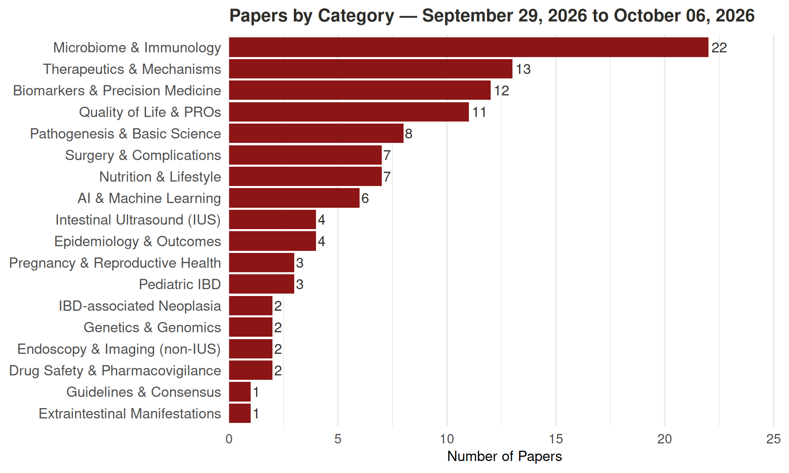

IBD Literature Report
Coverage: September 23, 2026 - September 30, 2026
152
Papers This Week
19
Categories
Papers by Category
Click a category to expand. Click a paper title to read its abstract.
Therapeutics & Mechanisms (26 papers)
Real-World Experience of Risankizumab in Refractory Pediatric Inflammatory Bowel Disease.Case report ACG case reports journal | 2026-09-29
The incidence of pediatric inflammatory bowel disease (IBD) is rising globally. Anti-tumor necrosis factor agents remain the mainstay of treatment, but a significant number of patients experience treatment failure. This case-series presents real-world experience using risankizumab, an IL-23 inhibitor, in 9 children with severe-refractory IBD. Multiple biologics had failed in all patients before initiation. Response was assessed using symptoms, biomarkers, endoscopy, and imaging. Five patients achieved clinical remission, and 4 failed to achieve complete remission. Noninvasive monitoring tools, such as intestinal ultrasound, were used. No adverse events were reported. Risankizumab may be a promising option in refractory pediatric IBD.
Alsarhan A, Krishnamurthy B, Elyyan E, Alhajjar M, Tzivinikos C
Upadacitinib Is Associated with the Lowest Risk of Treatment Failure Among Advanced Therapies for Ulcerative Colitis: A Real-World Administrative Claims Study.★ Clinical gastroenterology and hepatology : the official clinical practice journal of the American Gastroenterological Association | 2026-09-29
We compared the real-world effectiveness of advanced therapies (AT) in patients with ulcerative colitis (UC). Using the OptumLabs® Data Warehouse, a nationally representative US administrative claims database, we identified patients with UC initiating infliximab, adalimumab, vedolizumab, ustekinumab, tofacitinib, or upadacitinib between 2016 and 2023. The primary outcome was time to treatment failure (composite of IBD-related hospitalization, IBD-related surgery, or new corticosteroid prescription occurring >90 days after index date); treatment discontinuation and switching were treated as censoring events. The secondary outcome was proportion of quarters in corticosteroid-free disease stability. Confounding was addressed using multinomial propensity score-based inverse probability weighting with generalized boosted models and competing risk adjustment for mortality. We identified 7,283 patients contributing 9,078 treatment episodes with initiation of infliximab (n=1,624), adalimumab (n=2,315), vedolizumab (n=3,164), ustekinumab (n=1,274), tofacitinib (n=547), or upadacitinib (n=154). After IPW adjustment, upadacitinib was associated with significantly lower risk of treatment failure compared with infliximab (HR 0.61 [95% CI, 0.42-0.88]), adalimumab (HR 0.59 [0.41-0.86]), vedolizumab (HR 0.69 [0.48-1.00]), ustekinumab (HR 0.65 [0.45-0.95]), and tofacitinib (HR 0.59 [0.40-0.88]). Vedolizumab was associated with lower risk of treatment failure compared with infliximab (HR 0.88 [0.79-0.98]) and adalimumab (HR 0.86 [0.78-0.95]). Upadacitinib had the highest adjusted proportion of quarters in corticosteroid-free disease stability (0.70 [0.63-0.77]). Findings were consistent in patients with and without prior AT exposure. In this large real-world UC cohort, upadacitinib was associated with the lowest risk of treatment failure and greatest corticosteroid-free disease stability compared with all other ATs evaluated.
Hupé M, Ahuja D, Yeh KH, Patel SB, Xu R, Vuyyuru SK, Silverman A, Ananthakrishnan AN, Olén O, Goodwin SW
Infliximab-Associated Paradoxical Psoriasiform Reaction in Pediatric Ulcerative Colitis: Resolution with Ustekinumab. American journal of therapeutics | 2026-09-29
Abstract not available.
Akçay BI, Ergen YM, Teke S, Çetin E, Balık ZB, Ataş A, Balamtekin N
Subcutaneous infliximab for maintenance therapy in children and adolescents with inflammatory bowel disease: a systematic review and meta-analysis.Meta-analysis European journal of pediatrics | 2026-09-29
Subcutaneous infliximab is licensed for maintenance only in adults with inflammatory bowel disease, and pediatric evidence sits in small cohorts never pooled. We estimated the effectiveness, pharmacokinetics, immunogenicity, and safety of subcutaneous infliximab as maintenance therapy in children and adolescents with inflammatory bowel disease. We searched MEDLINE, Embase, Web of Science, CENTRAL, and trial registries from inception to 12 July 2026. Eligible studies were observational cohorts and case series of at least five children under 18 years old treated with subcutaneous infliximab after a switch from intravenous infliximab or de novo. Single-arm proportions were pooled with a random-effects model. Five cohorts (162 children; 113 [70%] Crohn disease, 45 [28%] ulcerative colitis, 4 [2%] unclassified) were included. Over a median follow-up of about 6 months (range 12 weeks to 12 months), treatment persistence was 89.8% (95% CI 72.6-99.0) and clinical remission at the closest timepoint to 6 months was 90.2% (61.3-100). Serum infliximab concentration roughly doubled after the switch (pooled mean 11.4 to 21.9 µg/mL), and new antidrug antibodies were rare (0.7%). Clinical relapse occurred in 4.8%, serious adverse events in 1.5%, and injection site reactions in 11.0%. Certainty of evidence was low to very low. In children with inflammatory bowel disease, subcutaneous infliximab maintained clinical remission and sustained drug exposure after a switch from intravenous therapy, with low discontinuation and an acceptable safety profile. Because almost all children switched while in remission, these data do not establish that de novo initiation can induce remission and need prospective confirmation. PROSPERO CRD420261469356 (registered 4 August 2026). • Subcutaneous infliximab maintains steady drug exposure and is licensed for maintenance treatment only in adults with inflammatory bowel disease; pediatric use is off-label and rests on small single-center cohorts. • In this first meta-analysis confined to children (five cohorts, 162 patients), treatment persistence and clinical remission rate were both near 90%, serum concentrations roughly doubled after the switch, and serious adverse events were rare.
Miotto DADSM, Ramos IO, Grassi CM
Upadacitinib for Acute Severe Ulcerative Colitis: Real-World Tertiary Care Outcomes. Digestion | 2026-09-29
Background Acute severe ulcerative colitis (ASUC) affects up to 25% of patients with ulcerative colitis. Despite intravenous (IV) corticosteroids as first-line therapy, 30-40% require rescue treatment and up to 40% undergo colectomy within one year. Upadacitinib (UPA) has shown ability to induce rapid response in moderate-severe UC, but real-world data in ASUC remain limited. We aimed to describe outcomes of UPA initiation for ASUC across Mayo Clinic sites. Methods We conducted a descriptive study of 23 adults hospitalized with ASUC between 2022-2025 at Mayo Clinic. Patients with their first ASUC admission who were started on UPA were included. All patients received IV methylprednisolone (40-60 mg/day) within 24-48 hours of admission, followed by UPA initiation (inpatient or shortly after discharge). Clinical, laboratory, and treatment data were extracted from electronic medical records. Outcomes included colectomy during admission and colectomy within one year. Descriptive statistics were done using Microsoft Excel. Results Twenty-three patients received UPA (median age 35 years; 88% pancolitis; 4% PSC). Out of the 23, 18 were started on UPA during the ASUC admission. Before admission, 10 patients (43%) were receiving corticosteroids, three (13%) were on mesalamine, one (4%) on azathioprine, and 12 (52%) were on biologic therapy; four patients (17%) were already on lower dose UPA maintenance. The median number of prior advanced therapies was two (range 1-4). Admission labs showed a mean CRP of 56.3 mg/L (SD 44.9) and fecal calprotectin of 2521.9 µg/g (SD 783.9). Patients received IV corticosteroids for a mean of 3.7 days (SD 1.1), and UPA was initiated at a median of hospital day 3 (IQR 4). 2/18 patients (11.1%), who were started on UPA inpatient, required colectomy during admission. Of the 23 patients who received UPA during hospitalization or shortly after discharge, one year colectomy rate was 4/23 (17%). Conclusions In this cohort, initiation of UPA during hospitalization or shortly after discharge for ASUC was feasible and was associated with lower colectomy rates compared with published outcomes for patients treated with infliximab or cyclosporine, both during hospitalization (11.1% vs. 21% vs. 25%) and at one year (17% vs. 35% vs. 45%). These findings suggest that UPA may serve as an effective rescue option for hospitalized ASUC patients, particularly when rapid control of inflammation is needed. Larger prospective studies are warranted to confirm these observations and to define optimal timing, patient selection, and long-term safety in the ASUC setting.
Jamal F, Gonzalez AJ, Elmasry S, Elshaer A, Malik T
Dual-Targeted Therapy With Upadacitinib and Ustekinumab in Pediatric Refractory Perianal Crohn’s Disease.Case report ACG case reports journal | 2026-09-28
Perianal Crohn’s disease (pCD) is a challenging manifestation of CD. We present the case of a 17-year-old adolescent girl with severe, refractory pCD, complicated by a rectovaginal fistula, who failed multiple lines of therapy and required a temporary ileostomy. While on upadacitinib (UPA) monotherapy, she experienced a flare with magnetic resonance imaging (MRI)-confirmed perianal abscesses. The addition of ustekinumab (UST) to UPA resulted in marked improvement in clinical symptoms and radiographic resolution of perianal disease on follow-up MRI. No adverse events occurred. This case highlights dual UPA/UST therapy as a promising strategy for severe, refractory pCD in an adolescent.
Sathe N, Kline M, Kellar A, Choi D, Gokhale R
Prior vedolizumab exposure and fibroblast-derived MMP13 are associated with ustekinumab nonresponse in ulcerative colitis. Journal of gastroenterology | 2026-09-28
As therapeutic options for ulcerative colitis increase, optimizing the sequencing of advanced therapies has become an important challenge. We examined whether baseline clinical characteristics influence the effectiveness of ustekinumab and investigated molecular signatures associated with ustekinumab resistance. This multicenter, retrospective study enrolled 102 patients with ulcerative colitis who initiated ustekinumab at 11 institutions. Clinical response and remission were assessed at 2, 6, and 12 months. Ustekinumab persistence was evaluated by Kaplan-Meier analysis. Predictive factors of nonresponse at 6 months were analyzed by logistic regression. To explore the molecular determinants of ustekinumab nonresponse, colonic tissue analyses were performed to identify candidate genes and their cellular sources. Cytokine stimulation experiments using intestinal fibroblasts were conducted to investigate upstream regulatory pathways. The 6-month clinical response and remission rates were 69.6% and 42.2%, respectively, with a 1-year ustekinumab persistence rate of 72.5%. Prior vedolizumab exposure was independently associated with ustekinumab nonresponse (odds ratio = 3.956; 95% confidence interval = 1.085-14.429). Transcriptomic profiling demonstrated enrichment of extracellular matrix-related pathways in nonresponders, and quantitative polymerase chain reaction confirmed significantly elevated matrix metalloproteinase 13 expression. In vitro stimulation assays demonstrated that interleukin-1β robustly induced matrix metalloproteinase 13 expression in intestinal fibroblasts. Prior vedolizumab exposure was associated with lower ustekinumab effectiveness, suggesting that treatment history may be important when determining therapeutic sequencing in ulcerative colitis. Fibroblast-derived matrix metalloproteinase 13 represents a promising molecular marker associated with nonresponse to ustekinumab and may reflect an interleukin-1β-driven inflammatory fibroblast program linked to diminished treatment responsiveness.
Tsuruta Y, Furuta Y, Nakashima M, Pan C, Takano S, Sakurai K, Kitada H, Omoto K, Matsuyama T, Sakai Y
Crohn’s disease unmasks pulmonary sarcoidosis on biologic screening: dual granulomatous pathology responsive to infliximab.Case report BMJ case reports | 2026-09-28
A man in his 30s with longstanding ileal Crohn’s disease was found to have pulmonary sarcoidosis during routine pre-biologic evaluation. Although he had no respiratory symptoms, lung function testing showed mildly reduced diffusion capacity. Radiological imaging demonstrated diffuse pulmonary nodules and mediastinal lymphadenopathy, and transbronchial biopsies confirmed non-necrotising granulomas consistent with sarcoidosis. In the setting of postoperative endoscopic Crohn’s recurrence and pulmonary sarcoidosis with mildly reduced diffusion capacity, infliximab was selected to provide dual disease control. Crohn’s disease improved endoscopically and histologically, while follow-up CT showed radiological improvement of the pulmonary sarcoidosis. This case highlights the diagnostic complexity of overlapping granulomatous diseases and the potential therapeutic advantage of tumour necrosis factor-alpha inhibition when treatment of both conditions is being considered.
Fraz E, Karpati PMT, Rubtsov D, Masel P, Kandpal H, Davidson M, Khaing MM
Persistence, Safety and Pharmacokinetics of Vedolizumab After Switching to the Subcutaneous Route in a Prospective French National Cohort Study.★ Alimentary pharmacology & therapeutics | 2026-09-27
We conducted a prospective study to evaluate the persistence, efficacy, pharmacokinetics, and safety of subcutaneous VDZ (SC-VDZ) after switching from the intravenous (IV) route. All patients with ulcerative colitis (UC) or Crohn’s disease (CD) in clinical remission who switched from IV-VDZ to SC-VDZ between 2022 and 2024 were included in this multicentric prospective French national cohort study. Primary endpoint was SC-VDZ persistence at Week 52. Patients who had a disease-related surgery, repeated or prolonged (> 14 days) steroid courses, and those who were lost to follow-up were considered non-persistent. Among the 337 patients analysed, 246 (73%) had UC and 91 (27%) CD; 214 (64%) were on a standard IV-VDZ regimen. At Week 52, SC-VDZ persistence was 84% [95% confidence interval: 80-88], with no significant difference between diseases (p = 0.36). During the study period, 32 patients (10%) had a dose increase of SC-VDZ (either to 216 mg weekly or to 108 mg 2-weekly), including 17 (53%) who had been on a standard IV-VDZ regimen, and five (16%) eventually stopped VDZ due to persistent loss-of-response despite dose increase. Twelve out of 16 patients were successfully switched back to IV-VDZ. Vedolizumab drug levels were similar between persistent and non-persistent patients throughout the study period. A total of 183 patients (54%) reported at least one AE, most frequently injection-site reactions (20%) and infections (17%), leading to SC-VDZ discontinuation in 25 patients (7%). In this multicentric cohort, the persistence at 1 year from switch to SC-VDZ in IBD patients was 84%.
Hupé M, Mathieu N, Amiot A, Seksik P, Charkaoui M, Gilletta-de-Saint-Joseph C, Bourreille A, Serrero M, Bouhnik Y, Nachury M
Empirical anti-TNF dose intensification in inflammatory bowel disease: real-world outcomes from a resource-limited setting.Letter Journal of gastrointestinal and liver diseases : JGLD | 2026-09-26
Abstract not available.
Arenas A, Ruedi D, Walsen G, Ibañez P
Successful combination therapy with ustekinumab and intensive granulocyte and monocyte adsorptive apheresis in highly refractory pediatric ulcerative colitis: pathophysiological rationale and clinical outcome. Immunological medicine | 2026-09-24
Pediatric-onset ulcerative colitis (UC) is characterized by an aggressive phenotype, with higher rates of pancolitis and more rapid progression to a medically refractory state. After failure of conventional therapies and multiple biologic agents, treatment options are limited and often require surgery. We report the case of a 15-year-old girl with a 5-year history of highly refractory pancolitis-type UC. Previous treatments included mesalazine, salazosulfapyridine, tacrolimus, and three biologic agents (infliximab, vedolizumab, and adalimumab), all of which failed to maintain remission. After ustekinumab initiation, she initially experienced mild improvement but subsequently developed a severe clinical relapse (Pediatric Ulcerative Colitis Activity Index score: 40-50) triggered by Edwardsiella tarda infection. Despite infection resolution and treatment with systemic corticosteroids, her condition remained critical. As adjunctive therapy, intensive granulocyte and monocyte adsorptive apheresis (GMA) was administered twice weekly for 10 sessions, followed by twice monthly for 7 sessions, resulting in rapid symptomatic improvement. Follow-up colonoscopy confirmed complete mucosal healing (Mayo Endoscopic Subscore, 0). Intensive GMA may be a safe and effective adjunct to ustekinumab before its full therapeutic effect is achieved, potentially complementing the anti-inflammatory effects of ustekinumab in refractory pediatric UC and may help avoid colectomy even when multiple drug therapies have failed.
Tsutsumi N, Nishimata S, Eto Tanaka M, Kamei Y, Watanabe S, Saito N, Kashiwagi Y, Ichimiya T, Fukuzawa M, Yamanaka G
Pathogen-Specific Bloodstream Infections Associated With Tumour Necrosis Factor-α Inhibitors, Vedolizumab and Ustekinumab in Inflammatory Bowel Disease: A Danish Nationwide Case-Control Study 2010-2024.★ Alimentary pharmacology & therapeutics | 2026-09-24
Biologic drugs have substantially expanded treatment options for inflammatory bowel disease (IBD), but infection risk during exposure remains a concern. To investigate the association between current use of tumour necrosis factor-α inhibitors (TNFi), vedolizumab and ustekinumab and bloodstream infection (BSI) in individuals with IBD. Nationwide, registry-based case-control study including all individuals with a first-time microbiologically confirmed BSI from 2010 to 2024 and an IBD diagnosis (cases). Each case was matched with five controls with IBD using risk-set sampling. Current biologic use was defined as recorded use of either TNFi, vedolizumab or ustekinumab within 180 days before the index date. Adjusted incidence rate ratios (aIRR) with 95% confidence intervals (CIs) were estimated using conditional logistic regression. We included 4503 cases and 22,473 controls. TNFi use was associated with higher BSI rates compared with no current biologic use (aIRR 1.73, 95% CI 1.49-2.00), whereas vedolizumab (aIRR 0.85, 95% CI 0.61-1.20) and ustekinumab (aIRR 0.68, 95% CI 0.38-1.23) use was not. In pathogen-specific analyses, TNFi use was associated with higher rates of BSI caused by Escherichia coli and Staphylococcus aureus, while vedolizumab use was associated with higher rates of Enterococcus faecium BSI. Concomitant glucocorticoid use was associated with increased BSI rates among TNFi and vedolizumab users compared with monotherapy. TNFi use was associated with increased BSI rates in patients with IBD, whereas vedolizumab and ustekinumab use was not. Overall, the findings suggest potential differences in infection risk across biologic therapies and in pathogen-specific susceptibility.
Leding C, Meddis A, Holler JG, Burisch J, Benfield T
Guselkumab Versus Risankizumab for Ulcerative Colitis: Real-World Comparison of Post-Induction Outcomes.★ Clinical gastroenterology and hepatology : the official clinical practice journal of the American Gastroenterological Association | 2026-09-23
Abstract not available.
Dalal RS, Silvestri ME, Kwaning KM, Carlin AD, McClure EL, Allegretti JR
Comparative effectiveness of infliximab vs vedolizumab as first-line biologic therapy in moderate-to-severe ulcerative colitis: A prospective, multicenter, real-world study.★ Inflammatory bowel diseases | 2026-09-23
In real-world clinical settings, direct comparative evidence on the effectiveness of infliximab vs vedolizumab for biologic-naïve patients with moderate-to-severe ulcerative colitis remains limited. This prospective, multicenter, real-world study enrolled patients with moderate-to-severe ulcerative colitis who were biologic-naïve and began using infliximab or vedolizumab from January 2023 to November 2024. To reduce confounding, inverse probability of treatment weighting was applied. The primary outcome was a composite of 14-week clinical remission and 52-week endoscopic remission. The secondary endpoints encompassed clinical response/remission, endoscopic response/remission, and clinical steroid-free remission at weeks 14 and 30; clinical remission, endoscopic remission, and clinical steroid-free remission at week 52; and the therapeutic continuation rate and adverse events rate across the complete observation period. In total, 251 eligible patients were enrolled. After inverse probability of treatment weighting, vedolizumab was significantly superior to infliximab for the composite endpoint (60.18% vs 39.52%; P = .003). Significantly greater proportions of patients in the vedolizumab group attained clinical remission (84.80% vs 66.49%; P = .003), steroid‑free clinical remission (75.87% vs 59.57%; P = .015), endoscopic response (70.43% vs 52.44%; P = .008), and endoscopic remission (70.43% vs 52.44%; P = .008) at week 14 relative to the infliximab group. Effectiveness endpoints were comparable between groups at week 30. At week 52, vedolizumab remained significantly superior in clinical remission (78.39% vs 57.38%; P = .003), clinical steroid-free remission (75.96% vs 53.39%; P = .002), and endoscopic remission (66.03% vs 51.12%; P = .042). The rate of adverse events did not differ significantly between the vedolizumab and infliximab groups (5.47% vs 7.57%; P = .56). Among patients with moderate-to-severe ulcerative colitis who have not been treated with biologics before, vedolizumab-first therapy showed superior short- and long-term effectiveness vs infliximab-first therapy, with comparable safety profiles. Vedolizumab could serve as the initial biologic agent for moderate‑to‑severe ulcerative colitis.NCT06962020; Selection and Efficacy-Inducing Factors of First-Line Biologic Agents in Moderate-to-Severe Ulcerative Colitis; https://clinicaltrials.gov/study/NCT06962020.
He D, Sha S, Liu X, Yin P, Qu X, Wang X, Wang N, Feng X, Zhang Z, Zhang W
Use of Two Biologics During Pregnancy: Infliximab and Vedolizumab: A Case Study. Therapeutic drug monitoring | 2026-09-23
Pregnancy is associated with altered pharmacokinetics for several drugs.The blood concentration of infliximab increases during pregnancy, whereas that of vedolizumab tends to decrease. As autoimmune disease activity during pregnancy can lead to adverse pregnancy outcomes, monitoring drug concentrations during pregnancy is important. This study reports a 32-year-old female patient with severe juvenile idiopathic arthritis and Crohn disease who was treated with dual biologic therapy throughout her pregnancy. The measurements were performed as part of routine care. The patient was treated with vedolizumab and infliximab during the course of her pregnancy. Both autoimmune diseases remained unaffected throughout pregnancy, and therapeutic drug concentrations were monitored to guide treatment. The patient had gestational diabetes and mild polyhydramnios. Ultimately, the pregnancy was complicated by preterm delivery at 33 weeks and 5 days of gestation, with a good birth weight of 2425 g at p85 without growth retardation. Therapeutic drug monitoring (TDM) supports optimal dosing and effective disease control, highlighting the importance of individual interpretations. All TDM-initiated dosing changes were based on expert opinions, owing to the lack of validated guidelines on dosing during pregnancy. However, preterm birth could not be avoided and may be influenced by underlying autoimmune diseases, gestational diabetes, and mild polyhydramnios. Multidisciplinary care is essential in pregnant women with autoimmune disorders. Prospective research focusing on drug concentrations, disease activity, and the risk of adverse pregnancy outcomes is needed to understand the safety and implications of dual biologic therapies during pregnancy.
Hoekstra B, Bouwknegt DG, Mian P, Dijkstra G, Leijsma MK, Groenewout M, Visschedijk MC
Multicentre, prospective, observational study on the effectiveness and safety of upadacitinib for active perianal fistulising Crohn’s disease in patients with prior anti-tumour necrosis factor failure: a study protocol.Multicenter study BMJ open | 2026-09-23
Perianal fistulising Crohn’s disease (pfCD) is a debilitating phenotype and remains a therapeutic challenge. Current guidelines recommend anti-tumour necrosis factor agents as first-line therapy for pfCD; however, there is still no consensus on the optimal pharmacological strategy once anti-TNF therapy fails. Upadacitinib, an oral selective Janus kinase 1 inhibitor, has demonstrated efficacy in moderate-to-severe Crohn’s disease. Nevertheless, real-world data specifically addressing its effectiveness and safety in the refractory pfCD population remain scarce. This study aims to evaluate the real-world effectiveness and safety of upadacitinib in patients with active pfCD who have failed anti-TNF therapy. This is a multicentre, prospective, observational cohort study. A total of 90 adult patients with Crohn’s disease-associated perianal fistulas with active drainage and refractory to prior therapy with infliximab or adalimumab will be enrolled. Patients with severe luminal disease, undrained abscesses >2 cm, anal stenosis or diverting stomas will be excluded. Participants will receive upadacitinib 45 mg/day during the induction phase, followed by 15 or 30 mg/day during maintenance. All treatment decisions are made according to routine clinical practice and local product labels, not mandated by the study protocol, including upadacitinib dosing, dose adjustments and concomitant therapies. The primary outcome is a composite of clinical and radiological fistula response at week 12. Secondary outcomes, assessed at weeks 12 and 52, include perianal fistula-related, CD-related and safety outcomes. Shanghai Jiao Tong University School of Medicine, Renji Hospital Ethics Committee has reviewed and approved this study (Approval No: LY2025-024-A). Findings will be disseminated through publication in peer-reviewed journals, presentations at scientific conferences and summaries provided to the participating institutions and relevant patient communities. ChiCTR2600117355.
Lu C, Xu D, Qian K, Dou L, Ding Y, Fa J, Lin C, Liu X, Huang C, Zeng Y
Emerging roles of SLC6A14 in digestive system diseases: from amino acid transport to therapeutic targeting.Review Molecular biology reports | 2026-09-23
The solute carrier (SLC) family comprises a large group of membrane transport proteins responsible for the transmembrane transport of nutrients, ions, metabolites, and drugs. SLC6A14 (solute carrier family 6 member 14) is a Na+ and Cl–dependent amino acid transporter with broad substrate specificity, capable of transporting a broad spectrum of neutral and cationic amino acids, thereby supporting cellular nutrient uptake and metabolic homeostasis. Altered expression, genetic variation, or dysregulated function of SLC6A14 has been implicated in inflammatory bowel disease, cystic fibrosis-associated gastrointestinal phenotypes, and several digestive system cancers, including gastric, colorectal, and pancreatic cancers. Dysregulation of SLC6A14 has been implicated in intestinal epithelial injury, regulation of intestinal fluid secretion, and tumor cell proliferation and metastasis. Together, these observations support a broad but context-dependent role for SLC6A14 in digestive system diseases. This review summarizes the transport properties of SLC6A14 and current knowledge of its functions in digestive system diseases, with a focus on its potential as a disease biomarker and therapeutic target.
Xia Q, Sun J, Yu Q, Li J, Zhou B, Zhu L
A Case of Refractory Pouchitis with Postoperative Anal Stenosis after Ileal Pouch-anal Anastomosis Treated with Vedolizumab, a Radial Incision and Cutting. Internal medicine (Tokyo, Japan) | 2026-09-22
A 33-year-old man who had undergone total colectomy for refractory ulcerative colitis (UC) at 22 years of age was referred for severe pouchitis with anal stricture. The remission of pouchitis was achieved with vedolizumab (VDZ) treatment. However, as diarrhea improved, obstructive defecation symptoms became apparent due to the stricture. Repeated anal bougie dilation was unsuccessful. A radial incision and cutting were thus performed, and the defecation symptoms improved without recurrence for 1 year. This is the first case report demonstrating the effectiveness of a radial incision and cutting for the treatment of severe anal stenosis after ileal pouch-anal anastomosis, particularly in a short, fibrotic stricture site refractory to repeated bougie dilatation.
Ishida A, Shimodate Y, Sakaue J, Ikeda Y, Nishimura N, Matsueda K, Mouri H, Mizuno M
Medical Therapies Beyond Infliximab for Perianal Fistulizing Crohn’s Disease: Current Evidence and Future Perspectives.Review Journal of clinical medicine | 2026-09-21
Perianal fistulizing Crohn’s disease (pfCD) represents one of the most challenging manifestations. Optimal management requires a multidisciplinary approach combining surgical drainage, appropriate imaging, and advanced medical therapies. While infliximab remains the first-line medical therapy, primary non-response or secondary loss of response occurs in many patients, which highlights the need for effective alternative treatments. This narrative review summarizes the current evidence regarding medical therapies beyond infliximab, including biologics, small molecules, and emerging therapeutic strategies. A literature search of PubMed, Embase, and Scopus was conducted up to February 2026 to identify studies evaluating medical treatments of pfCD. Current evidence suggests that ustekinumab and upadacitinib remain effective following anti-TNF failure, while vedolizumab demonstrates limited efficacy. Evidence supporting IL-23 inhibitors, including risankizumab and guselkumab, is limited but rapidly evolving, with ongoing prospective trials expected to clarify their role. Novel approaches such as advanced dual-targeted therapy, subcutaneous infliximab optimization, hyperbaric oxygen therapy, and exclusive enteral nutrition have also shown encouraging preliminary results in selected patients. However, most available data derive from post hoc analyses, retrospective cohorts, or small prospective studies, with considerable heterogeneity in outcome definitions and limited incorporation of standardized radiological endpoints. Future adequately powered randomized controlled trials using harmonized clinical and magnetic resonance imaging -based outcomes are essential to establish optimal treatment sequencing and improve long-term fistula healing. Until then, individualized multidisciplinary management remains fundamental to optimizing outcomes in patients with pfCD.
Fuentes-Valenzuela E, Tarrasó FJ, Botella B, Nos P, Vera I, Iborra M
COVID-19 AND IBD: LOOK BEYOND THE VIRUS. A SYSTEMATIC REVIEW AND META-ANALYSIS FOCUSED ON BIOLOGIC THERAPY CONTINUITY.Meta-analysis Arquivos de gastroenterologia | 2026-09-21
Whether COVID-19 worsens the longterm course of inflammatory bowel disease (IBD) remains uncertain. We synthesized comparative cohorts to assess IBD outcomes after SARS-CoV-2 infection versus noninfected IBD controls and to evaluate the impact of biologic discontinuation. Systematic review (PRISMA 2020). Adult IBD cohorts with vs without prior SARS-CoV-2. Databases: MEDLINE (PubMed), Web of Science, and Scopus; reference lists screened. Time window: Jan 2020 to Dec 2024. Risk of bias: Newcastle-Ottawa. Randomeffects Mantel-Haenszel with REML variance and Hartung-Knapp adjustment; heterogeneity by I2/τ2/Q. Zero events handled via 0.5 continuity correction; sensitivity analyses reported risk differences (percentage points) and studylevel effects for sparse outcomes. Certainty graded with GRADE. Four matched cohorts (n≈1.3k; Italy/USA). Prior SARS-CoV-2 did not worsen IBD clinical course (OR: 1.06; 95%CI: 0.76-1.49), nor alter UC extent (OR: 1.26; 95%CI: 0.33-4.83) or CD location/behavior (OR: 1.00; 95%CI: 0.06-16.15 / OR: 1.00; 95%CI: 0.46-2.18). Conversely, COVID-19 associated with biologic delay/discontinuation (OR: 10.44; 95%CI: 3.56-30.62). Across studies, flares were more frequent when biologics were delayed/stopped (~52% vs ~18%; RD ≈ +34 p.p.). COVID-19 per se does not appear to aggravate IBD outcomes; the clinically actionable signal is treatment continuity. In IBD patients without highrisk features for severe COVID-19, maintaining biologics should be considered to prevent flares. Ainda é incerto se a COVID-19 piora o curso clínico da doença inflamatória intestinal (DII). Sintetizamos coortes comparativas para avaliar desfechos da DII após infecção por SARS-CoV-2 versus controles com DII não infectados e estimar o impacto da descontinuação de biológicos. Revisão sistemática (PRISMA 2020). Coortes adultas com DII com vs sem infecção prévia por SARS-CoV-2. Bases: MEDLINE (PubMed), Web of Science e Scopus; listas de referências examinadas. Período: jan/2020 a dez/2024. Risco de viés: Newcastle-Ottawa. Metanálise de efeito aleatório (Mantel-Haenszel) com variância REML e ajuste Hartung-Knapp; heterogeneidade por I2/τ2/Q. Eventos zero tratados com correção 0,5; análises de sensibilidade com diferença absoluta de risco (pontos percentuais) e efeitos por estudo em desfechos esparsos. Certeza avaliada por GRADE. Quatro coortes pareadas (n≈1,3 mil; Itália/EUA). A infecção prévia por SARS-CoV-2 não piorou o curso clínico da DII (OR: 1.06; 95%CI: 0.76-1.49), nem alterou a extensão da RCU (OR: 1.26; 95%CI: 0.33-4.83) ou localização/comportamento do DC (OR: 1.00; 95%CI: 0.06-16.15 / OR: 1.00; 95%CI: 0.46-2.18). Por outro lado, a COVID-19 associou-se ao atraso/descontinuação de biológicos (OR: 10.44; 95%CI: 3.56-30.62). Entre os estudos, exacerbações foram mais frequentes quando biológicos foram adiados/suspensos (~52% vs ~18%; +34 p.p.). A COVID-19 per se não parece agravar desfechos da DII; porém a descontinuação do tratamento é um fator decisivo para a ocorrência de flares da doença. Em pacientes sem alto risco para COVID-19 grave, a manutenção de biológicos deve ser considerada para prevenir complicações da DII.
Rolim M, Leite AB, Perdigão Neto LV, Levin AS
Safety of Biologic Therapy for Inflammatory Bowel Disease in Liver Transplant Recipients. Biomedicines | 2026-09-19
Background/Objectives: Liver diseases and chronic inflammatory bowel diseases (IBD) are closely associated, particularly primary sclerosing cholangitis (PSC) and ulcerative colitis (UC). In severe cases of PSC, liver transplantation (LT) may be required, just as severe IBD may necessitate biologic therapy. Evidence on combining biologics with post-transplant immunosuppression is limited, particularly regarding hepatotoxicity, infections, and drug-drug interactions. We therefore assessed the safety of biologic therapy for IBD in LT recipients. Methods: In this retrospective, single-center analysis, all patients treated at the inflammatory bowel disease and post-liver transplantation outpatient clinics of the University Hospital Regensburg were screened. Patients with both LT and IBD were included in the analysis. Medical records, laboratory parameters, and imaging studies were reviewed. Conclusions: A total of 17 liver transplant recipients with IBD were identified. Eleven patients had PSC as the underlying liver disease, while the remaining patients had autoimmune hepatitis (AIH), PSC-AIH overlap syndrome, or cryptogenic liver cirrhosis. Three patients had Crohn’s disease, and 14 had ulcerative colitis. Five patients required biologic therapy because of active IBD. Two patients received two sequential biologic agents, whereas one patient received four different biologics during follow-up. No significant safety signals were observed regarding hepatotoxicity, susceptibility to infections, or interactions with concomitant immunosuppressive therapy, including tacrolimus, mycophenolate mofetil, ciclosporin, and prednisolone. No evidence of clinically relevant safety concerns associated with biologic therapy was identified in liver transplant recipients with IBD. Therefore, biologic therapy combined with conventional post-transplant immunosuppression appears feasible and well tolerated in LT recipients with active IBD; larger prospective studies are needed. However, larger prospective studies are needed to confirm these findings.
Elger T, Loibl J, Müller M, Rusch S, Baier-Kleinhenz L, Kandulski A, Buechler C, Tews HC
Population Pharmacokinetics of Subcutaneous Infliximab: A Real-World Study of Naïve and Switch Patients. Pharmaceutics | 2026-09-15
Background: Subcutaneous infliximab (SC-IFX) represents a significant advance for patients with inflammatory bowel disease (IBD) due to the possibility of home self-administration. However, at this time, there are no clear recommendations for implementing model-informed precision dosing (MIPD) in accordance with real-world clinical knowledge. Objective: The aim of the present study is to develop a population pharmacokinetic (PopPK) model for SC-IFX. Methods: A multicenter retrospective observational study was performed in adult patients (both naïve patients and those switched from intravenous administration) diagnosed with IBD. PopPK analysis was performed using NONMEM with a nonlinear mixed-effects model approach. A stepwise covariate modeling approach was implemented to identify anthropometric and clinical factors influencing SC-IFX disposition. The bootstrap method was used for internal model validation. Results: A total of 250 serum concentration samples of IFX, corresponding to 45 patients, were analyzed. A one-compartment model with first-order absorption adequately described the data. The final model included total body weight and suspected immunogenicity as covariates of clearance (CL). Suspected immunogenicity was associated with a 70.0% increase in clearance, while each kg deviation from the median weight (73 kg) modified clearance by 0.888%/kg. Conclusions: A PopPK model for SC-IFX was successfully developed and validated using European real-world data. This exploratory model establishes a foundation for future MIPD applications, offering a structured approach to initiate or transition patients to SC-IFX therapy.
Vicente B, Zazo H, Sánchez-Hernández JG, Revilla N, Teixeira-da-Silva P
Herpesviridae Reactivation and Therapeutic Outcomes in Patients with Ulcerative Colitis Treated with Tofacitinib. Journal of clinical medicine | 2026-09-14
Background: Ulcerative colitis (UC) is a chronic inflammatory bowel disease. Historically, anti-tumor necrosis factor (TNFα) agents have been the mainstay of biological therapy. Recently, Janus kinase inhibitors (JAK-I) have emerged as oral alternatives. However, despite their acknowledged efficacy, concerns remain regarding viral reactivation, particularly Herpesviridae viruses. Aims: This study assesses the incidence of Herpesviridae (HSV and VZV) reactivation and the effect on the clinical course of UC patients treated with tofacitinib (JAK-I). Methods: This prospective cohort study monitored 27 UC patients starting treatment with tofacitinib for clinical and inflammatory disease activity using the simple clinical colitis activity index (SCCAI) and fecal calprotectin. Saliva samples from 24 patients were also analyzed by PCR for Herpesviridae reactivation. Follow-up duration for each patient was up to 42 months. The majority of samples (118/172) were collected over the first 12 months of therapy. Results: Clinical remission (SCCAI ≤ 3) was achieved in 48.1% of the patients. Reactivation of HSV and VZV was detected in 33.3% (8/24) and 4.2% (1/24) of tofacitinib-treated patients, respectively, with no symptomatic outbreaks, and in 4.2% (1/24) of patients primarily infected with HSV. Clinical disease activity was not associated with positive or negative HSV in saliva (66.7% vs. 33.3%, respectively, p = 0.21, R = 2.00, 95% CI 0.85-4.69); however, the study was not powered for this comparison. Similarly, the study was unable to detect or exclude an association between calprotectin levels in patients with or without Herpesviridae reactivations (p = 0.87). Conclusions:Herpesviridae virus (HSV/VZV) reactivation under tofacitinib treatment within the study cohort was asymptomatic, and the study was unable to detect or exclude an association with disease activity. No symptomatic herpes zoster reactivation occurred; however, the small cohort cannot exclude a clinically meaningful risk.
Harnik S, Lang N, Yehezkel S, Fudim E, Yavzori M, Piccard O, Finkel O, Meningher T, Abayev OL, Tepperberg Oikawa M
Towards Precision Medicine in Inflammatory Bowel Diseases: Pharmacogenetic Predictors of Ustekinumab Effectiveness and Persistence. Pharmaceuticals (Basel, Switzerland) | 2026-09-10
Background/Objectives: Inflammatory bowel diseases (IBD), including Crohn’s disease (CD) and ulcerative colitis (UC), show substantial variability in response to biologic therapies. Ustekinumab, which targets the IL-12/23 pathway, is an established treatment for moderate-to-severe IBD; however, a proportion of patients fail to achieve sustained remission or discontinue treatment over time. This study aimed to evaluate the effectiveness and persistence of ustekinumab and to explore the potential role of pharmacogenetic markers in predicting treatment outcomes. Methods: In this observational cohort study, 98 IBD patients treated with ustekinumab, with or without corticosteroid bridge therapy, in routine clinical practice were enrolled. The primary endpoint was steroid-free remission (SFR) at 12 months, defined as clinical remission without concomitant corticosteroid use, whereas treatment discontinuation was evaluated during follow-up. Genomic DNA was extracted from peripheral blood samples, and four single-nucleotide polymorphisms (SNPs) in selected immune-related genes were analyzed: PTPN2 rs7234029, HLA-C rs10484554, IL23R rs11209026, and IL12B rs6887695. Results: Of the 98 patients included, 73 (74.5%) achieved SFR, whereas 25 (25.5%) did not. Carriers of IL12B rs6887695 variant genotypes showed higher odds of achieving SFR than wild-type patients after adjustment for disease type and baseline disease activity (OR = 4.77; 95% CI, 1.60-14.23; p = 0.005). During follow-up, 16 patients (16.3%) discontinued treatment. Carriers of IL12B rs6887695 variant genotypes also showed a significantly lower hazard of ustekinumab discontinuation than wild-type patients (HR = 0.29; 95% CI, 0.10-0.85; p = 0.024). Conclusions: This study provides real-world evidence supporting the effectiveness and persistence of ustekinumab in IBD patients. IL12B rs6887695 emerged as a potential pharmacogenetic marker associated with favorable ustekinumab outcomes; however, this exploratory and hypothesis-generating finding requires external validation in larger, independent cohorts before clinical application.
Marino Y, Rottura M, Ligresti C, Battaglia A, De Francesco C, Irrera N, Arcoraci V, Fries W, Viola A, Pallio G
Tofacitinib does not affect platelet function or coagulation in patients with ulcerative colitis. Frontiers in immunology | 2026-09-10
Tofacitinib is a Janus kinase inhibitor used to treat inflammatory diseases, including rheumatoid arthritis and ulcerative colitis (UC). Previous studies have reported an increased risk of thromboembolic events in patients with rheumatoid arthritis treated with tofacitinib. Therefore, evaluating whether these effects are also present in other inflammatory diseases such as UC is important. In this exploratory study, we evaluated the impact of tofacitinib on platelet function and coagulation profiles in patients with active UC receiving tofacitinib (n=10), compared with patients treated with anti-TNF agents (n=10) and healthy controls (HC; n=10). Patients were assessed at baseline and after 14 weeks of treatment. Platelet aggregation was assessed by lumiaggregometry, while platelet activation was evaluated by flow cytometry through PAC-1 binding and surface expression of CD62P and CD63. Coagulation was assessed by rotational thromboelastometry (ROTEM®) using extrinsic (EXTEM) and intrinsic (INTEM) pathway activation assays. Longitudinal analyses evaluated the effects of time, treatment, and their interaction. Tofacitinib did not significantly affect platelet aggregation or the expression of platelet activation markers compared with either anti-TNF-treated patients or HC. Regarding thrombus dynamics, a significant difference was observed only in the INTEM assay when comparing the tofacitinib and anti-TNF groups, showing longer clot formation times in tofacitinib-treated patients; however, neither group differed from HC. In this study, tofacitinib treatment was not associated with increased platelet aggregation, platelet activation, or enhanced coagulation in patients with UC.
Suarez-Trujillo F, Martínez PJ, Soleto I, Meijón M, Kerguelen A, Orts M, Planas A, Acedo N, Chacón-Calvo G, Garre A
The Inflamed Intestinal Barrier as a Formulation Variable in Oral Nanocarrier Design: Evidence-Informed Principles for Mucus Interaction, Epithelial Access, and Translational Testing.Review Pharmaceutics | 2026-09-09
Oral nanocarrier development for inflammatory bowel disease (IBD) is complicated by inflammation-dependent changes in mucus, epithelial integrity, and immune-cell interactions. This critical narrative review examines comparative evidence from in vitro systems, animal models, and human intestinal tissue, alongside clinical studies, to assess how barrier state modifies formulation performance. Across the reviewed studies, particle size alone does not consistently predict lesion accumulation, while surface chemistry, coating, geometry, and stability in gastrointestinal fluids influence mucus interaction, cellular access, and payload release. Tissue-associated fluorescence, increased permeability, and cellular uptake do not independently establish intact-carrier transport or productive delivery. Clinical trials of selected oral nano-enabled formulations report improvements in some disease outcomes but do not establish inflammation-selective delivery as the underlying mechanism. We propose an evidence-informed benchmarking framework linking characterization in biological media to mucus transport or retention, epithelial-immune responses, spatial localization, target engagement, and safety. Matched healthy and inflamed comparators are central to testing selectivity, and preclinical findings must be distinguished from clinical validation. Artificial intelligence may support barrier-state-aware formulation optimization but requires standardized datasets and prospective experimental validation. Given the heterogeneous evidence base and limited direct human delivery studies, prospective validation should prioritize local payload delivery and therapeutic benefit without exacerbating intestinal barrier injury.
Śledzikowska Z, Żylińska K, Makaruk N, Kubicka D, Błotniak FA, Waszkiewicz N
Microbiome & Immunology (17 papers)
Probiotic Intervention With Bacillus coagulans and Lactobacillus acidophilus in Small Animals Experimental Ulcerative Colitis: Insights From a Small Animal Model. Veterinary medicine and science | 2026-11
Inflammatory bowel disease is a significant health concern not only in humans but also in companion animals and livestock, where it manifests as chronic diarrhoea, abdominal pain, and mucosal injury. Probiotics have gained increasing attention as potential therapeutic agents due to their immunomodulatory effects and ability to restore intestinal homeostasis. This study investigated the therapeutic efficacy of Bacillus coagulans and Lactobacillus acidophilus in an acetic acid-induced ulcerative colitis model in Wistar rats. Forty male rats were randomly assigned to control, colitis, mesalazine, B. coagulans, and L. acidophilus treatment groups. Disease severity was evaluated by macroscopic and histopathological scoring, colon length and weight, pro-inflammatory cytokine levels (IL-1β, IL-17), and inflammasome-associated gene expression (NLRP3, Caspase-1, IL-18, TNF-α). The results showed that colitis induction significantly increased pro-inflammatory cytokine expression and histological damage compared with controls. Both probiotics markedly reduced inflammatory markers, improved colon morphology, and attenuated inflammasome activation. Their protective effects were comparable to mesalazine, the standard treatment. These findings suggest that B. coagulans and L. acidophilus can serve as effective adjunct therapies for ulcerative colitis in veterinary practice, with potential translational applications for companion animals and livestock.
Shayesteh F, Shahini Shams Abadi M, Rouhi L, Doosti A, Bagheri N
The role of IRF5 as an immune regulator.Review Biochemical Society transactions | 2026-10
Interferon regulatory factor 5 (IRF5) is a transcription factor at the nexus of immune regulation, inflammation, and autoimmune disease. Studies have shown that dysregulation of IRF5 is strongly implicated in the pathogenesis of autoimmune diseases including systemic lupus erythematosus (SLE), rheumatoid arthritis (RA), and inflammatory bowel disease. While originally described as a regulator downstream of Toll-like receptor (TLR)-MyD88 signaling in myeloid cells, further studies demonstrate a more complex role for IRF5 in mediating adaptive immune responses as well. In this review, we provide a summary of the role of IRF5 across the major immune cell populations in which it is expressed. We discuss the mechanistic basis of IRF5 function in each population, highlight shared themes, and examine the evidence supporting IRF5 as a promising therapeutic target whose inhibition may selectively dampen pathological inflammation while preserving protective immunity. We thus provide an overview of how IRF5 bridges both innate and adaptive immune responses.
Menocal L, Huang AYY, Rachelkar A, Barnes BJ
Microbial-Derived Exerkines as a Model of Drug Discovery.Review American journal of physiology. Cell physiology | 2026-09-29
There has been a growing interest in the utilization of the gut microbiome as a therapeutic tool. The relationship between the gut microbiome and exercise provides a unique opportunity to maximize the therapeutic capacity of the gut microbiome. Here, we summarize the potential of leveraging the gut microbiome to confer the health benefits of exercise through a novel class of microbial metabolites termed microbial-derived exerkines (MDEs). We identify multiple candidate and established MDEs described in the literature (e.g., pipecolic acid, succinate, short-chain fatty acids, indole-3-propionic acid, 3-hydroxyphenylacetic acid) and explore their implications in conditions such as inflammatory bowel disease, aging, skeletal muscle atrophy, cancer, diabetes, cardiovascular disease, and Alzheimer’s disease. Given the beneficial effects of exercise on numerous diseases, we anticipate MDEs will be a productive avenue for drug discovery and therapeutic progress.
Burke BI, Valentino TR, Ismaeel A, Wen Y, McCarthy JJ
Chronic Ileitis Ameliorates Hyperglycemia via a 3-HB/NKX6.1 Axis in Mice. Molecular and cellular endocrinology | 2026-09-24
Clinical evidence suggests a complex link between inflammatory bowel disease and systemic glucose homeostasis, yet the underlying molecular mechanisms remain elusive. Here, we report that chronic ileitis, induced by dextran sulfate sodium (DSS) or IL10 deficiency under a high-fat diet(HFD), paradoxically ameliorates systemic glucose intolerance and preserves pancreatic β-cell mass in mice. Multi-omics analysis of ileal contents revealed a specific enrichment of Akkermansia muciniphila (AKK) and elevated levels of the metabolite 3-hydroxybutyrate (3-HB). Mechanistically, 3-HB activated HCAR2/CREB-associated signaling and increased NKX6.1 expression. NKX6.1 loss-of-function markedly attenuated 3-HB-induced insulin gene expression and glucose-stimulated insulin secretion, establishing NKX6.1 as an important functional mediator of the β-cell response to 3-HB. Furthermore, exogenous administration of 3-HB recapitulated these protective effects in diabetic mice. This study identifies a novel gut-islet axis where microbiota-derived 3-HB preserves β-cell functional identity via HCAR2 dependent regulation of NKX6.1, offering a potential therapeutic strategy for type 2 diabetes.
Fang Y, Zheng C, Jiang P, Luo J, Xiang Y, Yang J, Li Y, Jiang R, Xu G
The E3 ubiquitin ligase HECTD3 controls immune colonic inflammation by restricting Myd88 activation and signaling. JCI insight | 2026-09-24
Ubiquitination is an important post-translational modification associated with essential cellular processes and implicated in regulation of immunity. Here we show that deletion of the E3 ubiquitin ligase Hectd3, germline or in hematopoietic compartment, including in CD11c+ cells, causes a more severe DSS-induced colitis and increased production of proinflammatory cytokines. Hectd3 mRNA levels were found reduced in colonic tissues of patients with ulcerative colitis (UC), which highlights a potential role for Hectd3 in regulating inflammatory responses in UC. We identified Myd88, a central adaptor in the TLR/IL1R signaling and inflammatory response, as a target for Hectd3 ubiquitination. We demonstrate that Hectd3 directly ubiquitinates Myd88 through K27-linked Poly-Ub chains in a nondegradative manner. Hectd3 KO GM-CSF-bone marrow derived cells treated with the TLR4 ligand lipopolysaccharide (LPS) produced more proinflammatory cytokines, show elevated phosphorylation of NF-κB and IRAK4, as well as elevated association of Myd88 with IRAK4, demonstrating that Hectd3 controls Myd88-IRAK4-NF-κB axis. Inhibition of Myd88 activity rescued colitis severity in the Hectd3 KO mice, including the elevated proinflammatory cytokine production. Thus, our results establish Myd88 as a new target for Hectd3 non-degradative polyubiquitination and restriction of immune colonic inflammation.
Islam S, Mannan S, Zuniga A, Parthasarathy U, Cismasiu VB, Silvane L, Chakraborty S, Talada DP, Singh RP, Zelenka T
Detrimental and Beneficial Diets Regulate Acute Pancreatitis Through Convergent Gut Microbiota Pathways.Review Journal of inflammation research | 2026-09-21
Diet is a key factor in regulating gut microbiota homeostasis, thereby influencing the incidence, severity, and prognosis of acute pancreatitis (AP). This review categorizes common dietary patterns into harmful types (Western diet, high-fat diet, ketogenic diet, high-salt diet) and beneficial types (Mediterranean diet, high-fiber diet, plant-based diet, restricted diet). Unlike previous reviews that list dietary patterns one by one, this paper analyzes them within the framework of the four core pathological/protective pathways of AP. Harmful diets primarily exacerbate AP by inducing dysbiosis, reducing SCFAs (especially butyrate), impairing the gut barrier, promoting bacterial translocation and excessive inflammatory responses; beneficial diets alleviate AP progression by enriching probiotics, increasing SCFA synthesis, enhancing barrier integrity, and suppressing systemic inflammation. This paper particularly emphasizes that most current evidence comes from non-AP models such as obesity and inflammatory bowel disease, and AP-specific causal evidence remains very limited. By integrating clinical, animal, and cellular experimental evidence, this paper aims to elucidate the potential relationship between diet, gut microbiota, and AP, and to provide a theoretical basis for dietary intervention strategies targeting the gut microbiota.
Wu J, Bai R, Zhong Z, Zhang C, Liu T, Lu T, Song Y, Miao Z, Zhang D, Wang Z
Exercise and Intestinal Barrier Integrity: Molecular Mechanisms and Therapeutic Potential in Gut Health and Disease.Review Biology | 2026-09-21
The intestinal barrier (IB) is a critical interface that maintains internal homeostasis. Its functional compromise-termed intestinal hyperpermeability-permits luminal antigens such as lipopolysaccharide to enter the circulation, triggering metabolic endotoxemia and low-grade systemic inflammation that underpin both intestinal and extra-intestinal diseases. This narrative review was based on a comprehensive literature search of PubMed, Web of Science, and Scopus databases up to July 2026, using keywords related to exercise, intestinal barrier, tight junction proteins, inflammation, oxidative stress, gut microbiota, and short-chain fatty acids. The synthesis indicates that regular moderate-intensity continuous training (30-60 min/session, 3-5 sessions/week) enhances barrier integrity through upregulation of tight junction proteins, suppression of TLR4/NF-κB-driven inflammation, activation of Nrf2-mediated antioxidant defenses, and beneficial remodeling of gut microbiota composition and short-chain fatty acid production. Exercise also induces peripheral-gut crosstalk mediated by myokines and vagal cholinergic signaling. The relationship between exercise volume and barrier function follows a J-shaped dose-response curve, with moderate exercise conferring protection while excessive high-intensity or prolonged exercise transiently increases permeability via splanchnic hypoperfusion and hypoxia-induced epithelial stress. Exercise shows preliminary therapeutic potential as an adjunctive intervention in inflammatory bowel disease, irritable bowel syndrome, and metabolic-associated fatty liver disease, with systemic benefits extending through the gut-liver and gut-brain axes. However, clinical translation remains limited by small sample sizes, short follow-up periods, and heterogeneous protocols. Future research should prioritize large-scale randomized controlled trials, precision exercise prescriptions, and synergistic exercise-probiotic co-interventions to establish definitive clinical guidelines.
Yang W, Liu Y, Wang H, Yang G
Targeting Interleukin-7 Signalling in Ulcerative Colitis: Rationale and Emerging Clinical Evidence.Review Life (Basel, Switzerland) | 2026-09-20
Ulcerative colitis (UC) remains difficult to control in a substantial proportion of patients despite an expanding range of advanced therapies. Interleukin-7 (IL-7) is a homeostatic cytokine that supports lymphocyte survival, persistence and intestinal trafficking through signalling via IL-7 receptor-α (IL-7Rα; CD127), providing a rationale for selective pathway inhibition in chronic intestinal inflammation. This narrative review examines the biology of IL-7/IL-7R signalling in inflammatory bowel disease (IBD) and summarises the preclinical, translational and clinical development of lusvertikimab, a humanised monoclonal antibody targeting IL-7Rα. MEDLINE was searched from inception to 31 July 2026, supplemented by reference-list screening, trial registries, conference proceedings and regulatory sources. Experimental studies show that IL-7 supports the persistence of colitogenic effector-memory T cells and contributes to innate immune activation. Human translational data demonstrate enrichment of IL-7R pathway activity in treatment-refractory IBD, association with anti-TNF non-response, and IL-7-mediated upregulation of the gut-homing integrin α4β7. Preclinical IL-7R blockade attenuated experimental colitis, reduced intestinal T-cell trafficking and altered inflammatory responses in UC tissue. In a first-in-human study, lusvertikimab produced sustained receptor occupancy and suppression of IL-7-associated gene expression without broad lymphocyte depletion. In the phase II CoTikiS trial, lusvertikimab improved Modified Mayo Score versus placebo, with significant pooled endoscopic improvement but no significant pooled differences in clinical or endoscopic remission. Early safety findings were reassuring. Selective IL-7Rα blockade therefore represents a biologically distinct therapeutic strategy in UC, although larger controlled studies, biomarker validation and clarification of dose selection and long-term safety are required to define its clinical role and whether combination strategies warrant future evaluation in selected patients.
Manti M, Raspa V, Patel K, Honap S
Microbiota-Associated Amino Acid Metabolites in Inflammatory Bowel Disease: Emerging Key Players in the Host-Microbe Interface.Review Microorganisms | 2026-09-20
Inflammatory bowel disease (IBD), encompassing Crohn’s disease (CD) and ulcerative colitis (UC), is a chronic relapsing intestinal inflammatory disorder driven by complex interactions among host genetics, immune dysregulation, and gut microbiota dysbiosis. The functional contribution of microbial metabolites beyond short-chain fatty acids and bile acids remains incompletely understood. A critical and unresolved question is whether microbiota-associated amino acid metabolites are merely passive indicators of dysbiosis or active drivers of intestinal inflammation and tissue repair. In this review, we summarize recent advances in the roles of microbiota-associated amino acid metabolites and their derivatives in IBD, highlighting that amino acid metabolites constitute a functionally distinct class of bioactive signaling molecules that operate through four representative metabolic networks: tryptophan metabolism, aspartate-related metabolism, branched-chain amino acid (BCAA) metabolism, and arginine-polyamine metabolism. We synthesize recent clinical metabolomic data and identify reductions in tryptophan-derived indoles, glutamate, histidine, and selected BCAAs across IBD clinical cohorts and sample matrices, whereas metabolites such as serine, proline, and polyamine degradation products are frequently elevated or associated with disease activity or therapeutic response. Mechanistically, microbiota-associated amino acid metabolites are implicated in intestinal homeostasis and IBD pathogenesis through multifaceted pathways, including modulation of intestinal epithelial barrier integrity (e.g., cell-cell junction, mucus secretion, and stem cell-driven mucosal repair), innate and adaptive immune responses, host-pathogen interactions, and extraintestinal inflammatory signaling (e.g., systemic inflammation, and brain-gut axis communication). Finally, we highlight current challenges and limitations in achieving a causal understanding of microbiota-associated amino acid metabolic alterations in IBD, particularly regarding their origin, spatial distribution, and functional relevance, as well as their potential utility for disease stratification and treatment-response assessment, and discuss how these insights may inform the future development of next-generation biomarkers and precision therapeutic strategies tailored to individual metabolic phenotypes in IBD.
Meng X, Tian C, Zhu Y, Zheng D
Functional Gut Microbiota Alterations in Patients with Inflammatory Bowel Disease Receiving Long-Term Biologic Therapy: A Pilot Comparative Study. Journal of clinical medicine | 2026-09-18
Background: Biological therapies have substantially improved clinical outcomes in inflammatory bowel disease (IBD); however, the relationship between long-term biologic therapy, disease remission, and gut microbiome characteristics remains incompletely understood. This pilot study aimed to characterize the taxonomic composition and taxonomically inferred functional microbiome features of patients with IBD receiving long-term biologic therapy and achieving clinical and biological remission at the time of microbiome assessment. Methods: Patients with IBD receiving long-term biologic therapy and achieving clinical and biological remission at the time of microbiome assessment were prospectively enrolled. Gut microbiome composition was assessed using 16S rRNA gene sequencing. Functional microbiome profiling included microbial diversity (Shannon index), fecal pH, Firmicutes/Bacteroidetes ratio, and bacterial groups associated with short-chain fatty acid production, mucin degradation, and lipopolysaccharide (LPS) production. Comparative analyses between disease phenotypes and biologic therapies were performed using non-parametric statistical methods. Results: Fifteen patients with IBD were included, comprising eight patients with ulcerative colitis and seven with Crohn’s disease. Several microbiome features were outside the laboratory-specific reference intervals despite clinical and biological remission at the time of microbiome assessment. Shannon diversity values were below the laboratory-specific reference threshold in 60.0% of patients, while taxa associated with mucin degradation, lactate production, and LPS production were outside the respective reference intervals in 66.7%, 53.3%, and 46.7% of patients. The Firmicutes/Bacteroidetes ratio was outside the reference interval in 46.7% of patients. The gut microbiota was predominantly composed of Firmicutes and Bacteroidetes, with considerable interindividual variability in taxonomic composition and taxonomically inferred functional features. No statistically significant differences were identified between Crohn’s disease and ulcerative colitis or between biologic therapies after false discovery rate correction. Conclusions: Patients with IBD receiving long-term biologic therapy and achieving clinical and biological remission at the time of microbiome assessment exhibited substantial interindividual variability in taxonomic composition and taxonomically inferred functional microbiome features. Several parameters were outside laboratory-specific reference intervals; however, the cross-sectional design and absence of pre-treatment and matched healthy control samples preclude conclusions regarding microbiome restoration or treatment-related effects. These findings support further longitudinal investigation of microbiome characteristics during biologic therapy.
Frandeș SI, Frandeș O, Macarie M, Bățagă SM
The Gut-Skin Axis in Atopic Dermatitis and Inflammatory Bowel Disease: Mechanisms, Microbiota, and Therapeutic Implications.Review Journal of personalized medicine | 2026-09-18
The gut-skin axis is a bidirectional communication network linking the gastrointestinal tract, skin, microbiota, and immune system. As major barrier organs, the gut and skin harbor complex microbial communities that contribute to tissue homeostasis, immune regulation, and protection from environmental insults. Increasing evidence indicates that dysbiosis of the gut and skin microbiota is associated with inflammatory diseases through interconnected microbial, metabolic, and immune pathways. Clinical observations further reveal strong associations between gastrointestinal disorders, including inflammatory bowel disease (IBD) and celiac disease, and cutaneous manifestations. Atopic dermatitis (AD) is characterized by epithelial barrier dysfunction, immune dysregulation, microbial imbalance, and environmental influences. Patients with AD frequently exhibit reduced gut microbial diversity, depletion of beneficial short-chain fatty acid (SCFA)-producing bacteria, and enrichment of potentially pathogenic microorganisms. Cutaneous dysbiosis, particularly expansion of Staphylococcus aureus, can further impair the skin barrier and sustain inflammation. Microbial metabolites, including SCFAs, tryptophan-derived aryl hydrocarbon receptor ligands, and bile acid metabolites, may mediate gut-skin communication by regulating epithelial integrity, immune tolerance, and inflammatory signaling. IBD is also increasingly recognized as a systemic disorder involving alterations in skin microbiota and cutaneous immunity. Intestinal inflammation may disrupt immune tolerance to skin commensals and promote cutaneous inflammation through cytokine signaling and immune-cell trafficking, while emerging evidence suggests reciprocal skin-to-gut effects. Epidemiologic, genetic, and clinical studies indicate an association between AD and IBD, potentially reflecting shared genetic susceptibility, barrier dysfunction, dysbiosis, and immune pathways. This review summarizes current evidence linking the gut-skin axis to AD and IBD.
Abuhussein E, Bowers EV, Yamaguchi Y, Nishiyama K, Cassidy OG, Tsuboi K, Huang L
Biohybrid magnetic carrier robots for targeted bacteria release in ulcerative colitis. Materials today. Bio | 2026-09-16
Ulcerative colitis (UC) is a chronic inflammatory bowel disease characterized by persistent inflammation and ulcers in the colon and rectum. Notably, UC is commonly associated with microbial dysbiosis while bacterial therapies often fail to achieve durable, site-specific colonization. Here, we develop a biohybrid magnetic carrier robot (MCR) platform that delivers bacteria along programmed trajectories and enables prolonged retention at target sites. The MCR is structured with a thin layer of hard-magnetic soft material that responds sensitively to magnetic fields, and a functional layer of bacteria-loaded hydrogel that preserves bacterial viability and release probiotics at specific pH values. This multi-material system is created via a multi-layer screen-printing technique, which allows precise patterning of functional materials at the submillimeter scale and holds promise for scalable production. Precise wireless navigation is validated in simulated environments using a robotic-arm-assisted magnetic driving system. In vivo studies in mice show that MCR-assisted treatment accelerates clinical recovery, significantly increases gut microbial diversity, and mitigates colon damage. In a DSS-induced acute colitis mouse model, the biohybrid magnetic carrier robots improved body-weight recovery, disease activity, colon length, and histological morphology relative to the disease model and material-only controls, while several outcomes also improved relative to free bacteria-loaded hydrogel. Fecal 16S rRNA gene sequencing further showed increased microbial richness and diversity and a shift toward a more control group community configuration after MCR based bacterial treatment. This controllable delivery strategy provides a modular and versatile platform for bacterial therapies in UC, expanding its translational potential toward the treatment of intestinal diseases and the modulation of gut health.
Wang Z, Ding L, Zhang D, Misra S, Venkiteswaran VK
Distinct Evolutionary Selection Patterns in Temperate and Filamentous Phages of Phocaeicola vulgatus in Health and IBD. Research square | 2026-09-16
The gut virome is profoundly altered in inflammatory bowel disease (IBD), though phage evolution during inflammation remains poorly understood. We used viral tagging (VT) to recover phages of Phocaeicola vulgatus, a gut-associated pathobiont, from healthy and Crohn’s disease (CD) viromes, revealing phages related to the tailed phage BV01, and the first filamentous phage (PvIno1) of any Bacteroidaceae host. BV01-like phages accumulated point mutations in tail genes during health, diversity which was lost in CD, while the configuration of a tail-fiber shufflon varied with disease state. In PvIno1, diversification was concentrated to a regulatory region, rather than structural genes as in BV01-like phages. Together, these findings indicate that inflammation imposes unique evolutionary pressures on distinct phages types. Integrating evolutionary dynamics with current ecological models of the IBD phageome is a critical step toward designing phage-based therapeutics for gut dysbiosis and understanding the complex interactions between phages, bacteria, and human hosts.
Baldridge M, Campbell D, Wu X, Emerson O, Jin H, Grambo S
Sleep fragmentation frequency is associated with distinct immune, microbial, and barrier-related profiles in DSS-induced colitis in mice. Frontiers in immunology | 2026-09-15
Sleep fragmentation is common in inflammatory bowel disease, but whether different fragmentation frequencies are associated with distinct biological responses during colitis remains unclear. This study examined endpoint-specific responses to low- and high-frequency sleep fragmentation in DSS-induced colitis in mice. Male C57BL/6 mice were assigned to Control, DSS, DSS with low-frequency sleep fragmentation (DSS+LSF), DSS with high-frequency sleep fragmentation (DSS+HSF), or high-frequency sleep fragmentation alone (HSF). Colitis was induced with 2% DSS for 7 days. Sleep fragmentation was applied for 12 h/day during the light phase at 60 sweeps/h for LSF or 240 sweeps/h for HSF. Clinical indices, histology, epithelial barrier-associated proteins, inflammatory and stress-related markers, colonic CD4+ T-cell subsets, fecal microbiota composition, and fecal SCFAs were assessed. Clinical and macroscopic indices varied across experimental groups, but corrected comparisons among DSS-treated groups were not significant. Plasma corticosterone was increased in both DSS+LSF and DSS+HSF, whereas MPO was higher in DSS+LSF than in DSS+HSF. Colonic Th2 proportions were higher in DSS+HSF than in DSS and DSS+LSF. Other histological, barrier-associated, inflammatory, and metabolic findings were primarily descriptive. Low- and high-frequency sleep fragmentation were associated with distinct, endpoint-specific response profiles during DSS-induced colitis rather than a simple linear increase in disease severity. These findings support frequency-associated, domain-specific responses and warrant further longitudinal and mechanistic investigation.
Tu MS, Fan TA, Huang YH, Wu RC, Kuo CJ, Chen NH, Chuang LP, Lin SW, Chen YL, Yang HY
EPS deficiency aggravates intestinal mucosal inflammation and dysbiosis through disrupting macrophage polarization balance in ulcerative colitis. Frontiers in immunology | 2026-09-15
Ulcerative colitis (UC) is a chronic, immune-mediated inflammatory bowel disorder, and macrophages are essential for maintaining intestinal mucosal balance during UC. Long intergenic non-coding RNA-erythroid prosurvival (lincRNA-EPS) is a novel lincRNA identified as a key inflammatory regulator. Nonetheless, the specific role of EPS in the pathogenesis of UC remains unclear. To investigate the contribution of EPS to intestinal inflammation, a model of colitis induced by dextran sulfate sodium (DSS) was created using both EPS gene knockout (EPS-/-) mice and wild-type (WT) mice. The impact of EPS on macrophage activities was assessed through various methods including qRT-PCR, flow cytometry, and immunofluorescence. Biopsies of the colon were collected from individuals diagnosed with UC for the purpose of EPS detection. EPS-/- mice exhibited more severe intestinal mucosal inflammation after DSS treatment, which was characterized by an increase in inflammatory cell infiltration, suppressed recovery of tight junction proteins and microbiota balance. EPS inhibits M1 macrophage polarization while promoting M2 macrophage polarization both in vitro and in vivo. The expression of EPS was found to be decreased in the inflamed mucosa and peripheral blood mononuclear cell (PBMC) of individuals suffering from UC, showing a negative correlation with the level of disease activity. This study revealed a novel function of EPS in macrophages in regulating the M1/M2 balance, inflammation, and gut microbiota during the pathological process of UC, and targeting EPS may represent a promising therapeutic approach for UC.
Zhu F, Jin G, Shi L, Qin Y, Xue H, Dai F, Chen X, Zhou G
Adzuki Bean Peptide Prevents DSS-Induced Colitis by Modulating the Gut Microbiota. Nutrients | 2026-09-11
Background: The incidence of ulcerative colitis (UC) continues to rise, and food-derived bioactive peptides have attracted increasing attention as potential nutritional interventions for intestinal inflammation. This study investigated the preventive effects of the adzuki bean-derived peptide IFNNDPNNHP (IP10 peptide) on dextran sulfate sodium (DSS)-induced acute colitis in mice and explored the involvement of the gut microbiota. Methods: Mice received prophylactic IP10 peptide at 100 or 200 mg·kg-1. Colitis severity was assessed based on body weight, disease activity index, colon length, histopathology, and inflammatory cytokine levels. Gut microbiota composition was analyzed by 16S rRNA gene sequencing, and fecal short-chain fatty acid (SCFA) levels were quantified. Antibiotic-mediated microbiota depletion and fecal microbiota transplantation (FMT) were used to further evaluate the role of the gut microbiota. Results: Prophylactic IP10 peptide administration attenuated DSS-induced colitis, with the 200 mg·kg-1 dose more effectively attenuating body weight loss and colon shortening, reducing disease activity index scores, and modulating inflammatory cytokine levels. IP10 peptide increased microbial richness and diversity, decreased the relative abundance of Escherichia-Shigella, and increased the relative abundances of SCFA-associated taxa, including norank_f__Muribaculaceae and Lachnospiraceae_NK4A136_group. It also increased fecal SCFA levels, particularly acetate and butyrate; the high dose additionally restored propionate and valerate. When the gut microbiota was depleted using antibiotics, the protective effects of the IP10 peptide were no longer detectable, whereas FMT using fecal microbiota from donors receiving the high dose of IP10 peptide attenuated colitis and increased fecal SCFA levels in recipient mice. Conclusions: IP10 peptide alleviates DSS-induced acute colitis, and this effect may be partly associated with alterations in the gut microbiota, including the enrichment of SCFA-associated taxa and increased fecal SCFA levels. These findings support its potential as a functional food ingredient for intestinal health.
Zhou H, Shen Q, Wu L, Ma Z, Ren X, Wang J, Hao Z, Zhao Q
Seaweed sulfated polysaccharides regulate the gut microbiota-mucosal barrier-innate immunity axis: structural heterogeneity, immunological evidence, and translational prospects.Review Frontiers in immunology | 2026-09-10
Seaweed sulfated polysaccharides, fucoidan, carrageenan, ulvan, and porphyran, are structurally diverse marine glycans that modulate the gut microbiota, mucosal barrier, and innate immunity, yet the literature remains fragmented across classes, models, and processing histories. This review synthesizes evidence on their structure-function relationships, focusing on microbial enzymatic accessibility, selective fermentation, metabolite remodeling, barrier regulation, and immune signaling, while also assessing translational barriers. A systematic literature search prioritized mechanistic studies, structural analyses, animal models, human trials, and high-quality reviews. Our analysis reveals that porphyran provides the clearest microbiota-barrier coupling, fucoidan and carrageenan give the richest, but most heterogeneous, immune readouts, and ulvan is an emerging class with growing intestinal evidence. Molecular weight, sulfation pattern, and degradation history consistently shape microbial utilization and downstream effects across all classes. Disease contexts with the strongest support include inflammatory bowel disease, constipation, barrier injury, and infection-driven intestinal inflammation. Time-dependent immune shifts have been reported, but durable epigenetic memory remains unproven, and extra-intestinal evidence through gut-liver and gut-brain axes is still preliminary. We conclude that these polysaccharides are best understood as structurally defined substrates that bridge the microbiota, barrier, and immunity; future progress toward clinical translation will depend on stricter standardization, integrated mechanistic designs, and robust human data.
Liu W, Zhang M, Huang J, Liu S, Chen R, Li Y, Liu J, Jia R
Biomarkers & Precision Medicine (14 papers)
Human intestinal organoid models: Advancing Inflammatory Bowel Disease Research. Protein & cell | 2026-09-30
The incidence of inflammatory bowel disease (IBD), which affects the health of millions of people worldwide, is increasing. The etiology and pathogenesis of IBD are complex, and well-established in vitro models that closely mimic disease development and progression in humans are currently lacking. This has hindered in-depth analyses of disease mechanisms and the development of effective therapeutic targets. Recently, emerging organoid technology, particularly the establishment of patient-derived intestinal organoid systems, has seemingly invigorated IBD research. This article combines recent research progress to discuss the maintenance of intestinal epithelial homeostasis, summarize the strategies of gut organoid construction, provide an overview of the main current applications of intestinal organoid models in IBD research and possible therapies, and discuss the prospects and limitations of organoid technology. It is intended to serve as a foundational resource for both established and emerging scholars in this discipline. Moreover, this work may offer a reference for clinicians in selecting personalized strategies for treating patients with refractory IBD, informing the advancement of precision medicine.
Wang H, Chen Y, Liu H, Liu X, Yu Y
Reading the glycome in MASLD: at the crossroads of metabolism and inflammation. Revista espanola de enfermedades digestivas | 2026-09-30
Metabolic dysfunction-associated steatotic liver disease (MASLD) is increasingly recognized as the hepatic expression of a broader cardiometabolic and inflammatory disorder. In this context, circulating glycoprotein signals may provide information beyond conventional assessment of steatosis and fibrosis risk. García-Mateo et al. evaluated plasma Glyc-A, Glyc-B and Glyc-F using nuclear magnetic resonance in patients with inflammatory bowel disease (IBD), with and without MASLD, and in matched controls. Glycoprotein concentrations showed a progressive increase from controls to IBD and were highest when IBD and MASLD coexisted, while Glyc-B and Glyc-F remained independently associated with MASLD after adjustment for relevant metabolic variables. These findings should not yet be interpreted as establishing new clinical biomarkers. Rather, they raise a more fundamental question: what biological information is captured by circulating glycoprotein signals? Glyc-A, Glyc-B and Glyc-F represent composite spectroscopic signals influenced by acute-phase proteins, systemic inflammation, metabolic dysfunction and, potentially, disease-specific glycan changes. Their interpretation is therefore particularly relevant in IBD, where immune-mediated inflammation may modify the metabolic and hepatic phenotype. Emerging transcriptomic and glycomic data suggest that MASLD arising in different inflammatory contexts may not be biologically identical, despite a similar clinical classification. The current evidence supports the biological plausibility of glycoprotein profiling but not yet its routine clinical use. Future studies should determine the relative contribution of systemic inflammation, adiposity, insulin resistance, dyslipidaemia and liver injury to these signals; establish their relationship with clinically relevant liver phenotypes, particularly fibrosis; and demonstrate incremental value beyond established non-invasive tools. Learning to interpret the glycome may ultimately prove more informative than simply measuring it.
Crespo J, Iruzubieta P
Macrophage-derived CD38 mediates colitis through NAD+ depletion. The Journal of physiology | 2026-09-29
Colitis, a chronic inflammatory bowel disease (IBD), is pathologically linked to immune dysregulation; however, the contribution of cellular metabolic alterations to its pathogenesis remains incompletely understood. In this study, untargeted metabolomic analysis revealed marked disruption of NAD+ metabolism, accompanied by increased expression of CD38, a major NAD+-glycohydrolase, in colitis. Restoring NAD+ levels through supplementation with its precursors or pharmacological inhibition of CD38 activity effectively alleviated the pathological symptoms of colitis. Mechanistically, colitis induced a pronounced upregulation of CD38 specifically in macrophages. Myeloid-specific deletion of Cd38 significantly attenuated both metabolic disturbances and inflammatory responses associated with colitis. These findings identify macrophage CD38 as a critical regulator of intestinal inflammation and highlight the CD38/NAD+ axis as a potential therapeutic target for IBD. KEY POINTS: Altered NAD+ metabolism is closely associated with intestinal inflammation, yet the specific cellular mechanisms contributing to this decline remain to be fully elucidated. By supplementing with nicotinamide mononucleotide or inhibiting the enzyme CD38 that consumes NAD+ with drugs, the NAD+ level can be effectively restored, which can alleviate the colitis induced by dextran sulphate sodium to a certain extent. During intestinal inflammation, the upregulation of CD38 is predominantly driven by infiltrating macrophages. Myeloid-specific deletion of CD38 preserves NAD+ homeostasis and ameliorates colitis, highlighting its essential role in disease progression. Targeting macrophage CD38 establishes a key regulatory link between NAD+ metabolism and intestinal inflammation, providing a potential therapeutic strategy for inflammatory bowel diseases.
Wu Y, Yang X, Jin X, Jiang X, Jin C, Feng B, Che L, Xu S, Lin Y, Wu D
MKL1 promotes intestinal epithelial repair by regulating proliferation, migration, and adhesion. Life sciences | 2026-09-29
Intestinal regeneration is a complex pathophysiological process orchestrated by ordered proliferation, migration, and adhesion of epithelial cells. In the present study, we investigated the contribution of megakaryoblastic leukemia 1 (MKL1), a transcriptional regulator, to this process. Intestinal conditional MKL1 deletion was achieved by crossing the Mkl1f/f mice to the Vil1-Cre mice. Intestinal injury was induced by administering dextran sulfate sodium (DSS) in the drinking water. Significant up-regulation of MKL1 expression in the intestines of patients with inflammatory bowel disease (IBD) compared to healthy individuals was revealed by transcriptomic analysis and histopathological staining. MKL1 expression was also elevated in the intestines of the mice exposed to DSS and in cultured intestinal epithelial cells subjected to treatment with tumor necrosis factor α (TNF-α). The intestinal conditional MKL1 knockout (CKO) mice were more sensitive to DSS-induced intestinal injury, as measured by colon length, intestinal barrier integrity, and intestinal inflammation, than the wild-type littermates. In addition, mucosal recovery was delayed in the CKO mice compared to the wild-type mic, possibly owing to skewed epithelial regeneration. Over-expression of a constitutively active MKL1 in cultured intestinal epithelial cells augmented proliferation and migration. On the contrary, migration of enterocytes was impaired in the CKO mice compared to the wild-type mice following DSS exposure. Finally, bioinformatic analysis showed that MKL1 primarily regulated genes involved in proliferation, migration, and adhesion. Our data support a role for MKL1 maintaining intestinal homeostasis and contributing to IBD pathogenesis.
Wang Y, Liu Z, Lv H, Zhu B, Chen B
Mechanistic interactions between inflammatory bowel disease and obstructive sleep apnea.Review Sleep medicine reviews | 2026-09-26
Inflammatory bowel disease (IBD), including Crohn’s disease (CD) and ulcerative colitis (UC), is increasingly recognized as being associated with obstructive sleep apnea (OSA). Recent cohort studies and meta-analyses identify IBD as an independent risk factor for OSA, supporting the need for OSA screening in patients with IBD and management of modifiable risk factors. However, these associations come primarily from observational studies with virtually no confirmatory mechanistic studies. Further, the available clinical and experimental evidence of an association between OSA and IBD is highly heterogeneous and comes from multidisciplinary sources, suggesting that the association may reflect multiple shared biological mechanisms rather than simple disease coexistence. IBD-associated inflammation, epithelial barrier dysfunction, immune dysregulation, gut dysbiosis, and OSA-associated intermittent hypoxia, oxidative stress, immune activation, gut barrier dysfunction, and gut dysbiosis appear to be the key reciprocal processes establishing a self-reinforcing cycle that links intestinal and respiratory pathophysiology. This theoretical review synthesizes multidisciplinary heterogeneous evidence across clinical, experimental, and mechanistic studies to develop the hypothesis-generating Gut Barrier-Microbiota-Immune-Hypoxia (GBMIH) framework. This hypothesis-generating systems theory highlights intestinal barrier disruption, dysbiosis, immune activation, and intermittent hypoxia as interconnected biological nodes that may mediate this bidirectional relationship and define future biomarker and therapeutic development.
Sawant H, Khalyfa A, Gozal D, Borthakur A
KARAP Exacerbates Intestinal Inflammation Through Promoting Kyn-AhR-dependent Neutrophil Activation in Ulcerative Colitis.★ Cellular and molecular gastroenterology and hepatology | 2026-09-24
Killer cell activating receptor-associated protein (KARAP), also known as TYRO protein tyrosine kinase binding protein, has been reported to participate in the regulation of autoimmunity and inflammation. However, the underlying mechanisms involved in intestinal mucosal inflammation in ulcerative colitis (UC) remains obscure. We analyzed KARAP expression in colon tissues from patients with UC and established dextran sulfate sodium (DSS)-induced colitis models in KARAP-knockout (KARAP-/-) mice to determine the potential role of KARAP in the induction of mucosal inflammation. To clarify the immunoregulation of neutrophils on intestinal epithelial barrier function, we cocultured neutrophils isolated from KARAP-/- or wild-type mice with intestinal epithelial cells. Additionally, we profiled neutrophil tryptophan metabolites using targeted metabolomics. Our data demonstrated that KARAP was highly expressed in the intestinal mucosal tissue and peripheral blood neutrophils of active UC patients, particularly in neutrophils. Inhibition of KARAP promoted anti-inflammatory immune responses in neutrophils in vitro, showing a significant decrease in the expression of proinflammatory cytokines, including IL-6, TNF-α, and IL-1β. Consistently, KARAP deficiency alleviated DSS-induced colitis in mice and improved intestinal mucosal barrier integrity via the aryl hydrocarbon receptor (AhR)-IL-22 pathway in neutrophils. Mechanistically, KARAP deficiency enhanced the nuclear translocation of AhR through the IDO1-kynurenine pathway in neutrophils. Notably, administration of KARAP-/- neutrophils alleviated mucosal inflammation in DSS-induced colitis mice. Overall, our study highlights the critical role of KARAP in mucosal inflammation in UC by promoting neutrophil proinflammatory immune responses and disrupting the intestinal mucosal barrier integrity, suggesting that targeting KARAP in neutrophils may represent a novel therapeutic approach for UC.
Jin G, Zhu F, Dai F, Wang Y, Chen Y, Yang Y, Liu Z, Zhou G
Expanding bile acid diversity via host and microbial conjugation pathways.Review Natural product reports | 2026-09-24
Covering: 2019 to April 2026Bile acids, originally identified as digestive emulsifiers, are now recognized as signaling molecules at the nexus of metabolism and immunity. Recent advances in metabolomics have revealed unexpected chemical diversity of BAs, derived from previously unrecognized conjugation pathways involving both the gut microbiota and the host. This includes microbial conjugation of the bile acid carboxy terminus with diverse amino acids and other biogenic amines as well as host-derived conjugation with cysteamine derivatives. In addition, microbial acylation of the steroid core has been shown to introduce succinyl, acetyl, and other chemical modifications, including expansion of the canonical bile acid carbon skeleton. This review synthesizes recent discoveries (2019-2026) in bile acid conjugation chemistry and highlights how the expanded bile acid diversity regulates host physiology through activation of different nuclear receptors and G-protein coupled receptors, including therapeutic implications for metabolic and immune disorders such as non-alcoholic steatohepatitis, inflammatory bowel disease, and cardiometabolic diseases. The emerging picture reveals that bile acid pools result from an intricate network of host-microbe metabolic pathways, and that considering both host and microbial contributions is essential for understanding bile acid biology in health and disease.
Won TH, Schroeder FC
Regulation of Inducible Nitric Oxide Synthase (NOS2) Expression in Healthy and Inflamed Bowel: A Narrative Review.Review International journal of molecular sciences | 2026-09-19
Crohn’s disease and ulcerative colitis, the principal forms of inflammatory bowel disease (IBD), are chronic inflammatory disorders characterized by recurrent intestinal injury, impaired mucosal healing, and substantial disease burden. Despite significant therapeutic advances, many patients fail to achieve sustained remission, highlighting the need for a better understanding of the molecular mechanisms driving intestinal inflammation. Nitric oxide (NO) is a key regulator of intestinal homeostasis, influencing epithelial barrier integrity, vascular function, host defense, and immune responses. In IBD, dysregulated production of NO, largely attributable to inducible nitric oxide synthase (NOS2), has been associated with both protective and pathogenic effects. Accumulating evidence indicates that the biological consequences of NOS2 activation depend on the cellular source of NO, local microenvironmental signals, and disease context. This review summarizes current knowledge on the transcriptional, epigenetic, post-transcriptional, translational, and post-translational mechanisms regulating NOS2 expression and activity in the intestine. Particular emphasis is placed on cell-specific regulation in epithelial, stromal, endothelial, neural, and immune-cell populations, as well as emerging insights from single-cell and spatial transcriptomic studies. Collectively, available evidence supports a context-dependent role for NOS2 in IBD and highlights the importance of cell-specific approaches for future biomarker development and therapeutic targeting.
Krzystek-Korpacka M, Korpacki A, Wąsowicz A, Neubauer K
Multi-Compartment Metabolic Remodeling in DRA-Deficient Mice Overlaps with Ulcerative Colitis Metabolic Signatures. Metabolites | 2026-09-18
Background/Objectives: Down-regulated in adenoma (DRA/SLC26A3), an IBD (Inflammatory Bowel Diseases) susceptibility gene and major colonic Cl-/HCO3- exchanger, is reduced in ulcerative colitis (UC). Whether reduced DRA is linked to broader metabolic remodeling during intestinal inflammation remains unclear. We therefore examined DRA-associated metabolic pathways in human UC datasets and metabolic changes across mucosal, luminal, and systemic compartments in DRA-deficient mice. Methods: Six publicly available human colonic transcriptomic cohorts were analyzed to infer KEGG metabolic pathway activity, compare UC with healthy mucosa, and assess associations with DRA expression using random-effects meta-analysis. DRA knockout mice were evaluated by colonic mucosal RNA sequencing, untargeted LC-MS metabolomics of colonic mucosa, feces, and serum, targeted bile acid profiling, MetOrigin analysis, and fecal 16S rRNA sequencing. Results: In the human cohorts, DRA expression was consistently lower in UC. Of the 75 KEGG metabolic pathways evaluated, 48 were altered in UC relative to healthy mucosa, and 45 of these were also associated with DRA expression levels among UC samples. In DRA knockout mice, colonic RNA sequencing identified broad metabolic transcriptional remodeling across 39 KEGG pathways, with metabolic themes that overlapped with the human UC findings. Multi-compartment metabolomics further revealed alterations involving amino acid, nitrogen, redox/cofactor, polyamine, and bile acid metabolism, together with inferred host-microbiota co-metabolic signatures. Conclusions: DRA deficiency was accompanied by broad metabolic remodeling across mucosal, luminal, and systemic compartments. These changes overlapped with DRA-associated signatures in human UC, supporting a role for DRA in epithelial-luminal metabolic homeostasis beyond ion transport.
Antonio JM, Priyamvada S, Anbazhagan AN, J B H, Calzadilla N, Atalay RC, Sethi R, Saksena S, Gill RK, Mutlu GM
Ultrastructural and Proteomic Signatures of Mechanoadaptive Fibroblast Remodeling across Microphysiological and Mesoscale Shear Platforms. bioRxiv : the preprint server for biology | 2026-09-18
Mechanobiological cues in the tissue microenvironment increasingly drive pathological fibroblast activation in inflammatory bowel disease (IBD), yet engineered platforms modeling this transition remain limited. Here, a microfluidic gut-on-a-chip microphysiological system and a mesofluidic rotary shaker are used to demonstrate that sustained fluid shear stress alone is necessary and sufficient to drive an irreversible, profibrotic phenotypic switch in primary normal human intestinal fibroblasts. Across both platforms, normal fibroblasts from small and large intestine reproducibly self-organize into three-dimensional (3D) multicellular aggregates within 72 h, independent of shear delivery format, indicating that the transition is governed by mechanical dose rather than device geometry. The resulting aggregates acquire robust α-smooth muscle actin (α-SMA) expression with aligned stress fibers, contrasting with the α-SMA-negative parental population. Scanning electron microscopy (SEM) resolves densely packed cellular microarchitecture embedded in a microfibrillar extracellular network, while ultrastructural serial block-face 3D EM reveals expansive intercellular spaces, stochastic fibrillar extrusions, and electron-dense cytoplasmic material at cell boundaries. Proteomic profiling confirms enrichment of core matrisome components, including collagen subtypes and matrix metalloproteinases. Together, these results establish fluid shear stress as a platform-independent, sufficient mechanical trigger for fibroblast-to-mechanoadaptive transition, positioning microphysiological shear platforms as tractable tools for modeling and targeting early fibrogenesis in IBD.
Min S, Jin HS, Kidd G, Benson E, Lee DW, Kim HJ
Layer-Resolved Spatial Transcriptomic Profiling Reveals Distinct Fibrotic and Muscularizing Submucosal Niches in Fibrostenotic Crohn’s Disease. medRxiv : the preprint server for health sciences | 2026-09-15
Fibrostenotic stricture is a severe complication of Crohn’s disease (CD) that affect up to 50% of patients over their lifetime, causing irreversible narrowing of the intestinal lumen and bowel obstruction, but the molecular programs that distinguish stenotic from non-stenotic inflammation and the relative contributions of fibrosis and smooth-muscle remodeling remain incompletely characterized. We aimed to dissect bowel-wall compartment-specific and histology-defined remodeling programs in fibrostenotic CD. Matched full-thickness terminal ileal tissues from 4 patients with fibrostenotic CD were sampled from stenotic stricture (SS), non-stenotic inflamed bowel (NS), and non-inflamed bowel (NI). Histomorphology-guided NanoString GeoMx whole-transcriptome profiling was performed across mucosa, muscularis mucosae, submucosa, and muscularis propria. GeoMx data were processed by standard software provided by GeoMx platform. DESeq2 models included patient identity as a blocking factor, and the analysis was performed in 74 histologically valid regions of interest (ROIs) representing full spectrum of CD histopathologies. DEGs were defined as adjusted P < .05 and |log2FC| >= 1.0. Out of 18,677 genes analyzed in each of the ROIs, direct SS-versus-NS comparison identified 0 significant DEGs in mucosa, 18 in muscularis mucosae, 43 in submucosa, and 0 in muscularis propria. NS-versus-NI submucosa showed 132 DEGs (131 increased, 1 decreased), dominated by humoral/plasma-cell genes with a modest stromal-remodeling component. SS-versus-NI submucosa showed 144 DEGs (138 increased, 6 decreased) with coordinated contractile, extracellular-matrix/remodeling and cell-matrix adhesion programs. Muscularized versus fibrotic SS submucosa showed 219 DEGs, with marked enrichment of contractile and remodeling genes in muscularized regions. Excluding 5 follicle-containing submucosal ROIs markedly altered the NS comparison but not the core SS fibromuscular program. Exploratory follicular-niche analyses showed that lymphoid follicle-rich (LFR) submucosa was lymphoid/B-cell enriched relative to lymphoid follicle-null (LFN) areas; SS-LFR nevertheless acquired a stronger fibroblast/ECM program relative to NS-LFR, while CCL19 was the only significant LFR-versus-LFN DEG within SS. Fibrostenotic CD is characterized by spatially concentrated submucosal fibromuscular remodeled inflammatory program. Non-stenotic submucosa is heterogeneous and may already show regional stromal remodeling, whereas established stenosis displays a broader and more robust ECM-contractile-adhesion phenotype with molecularly distinct fibrotic and muscularized niches.
Gui X, Jin G, Caudell DL
Connecting the Dots Between Pharmacokinetics, Inflammatory Biomarkers, and Mucosal Healing in Patients on Infliximab with Inflammatory Bowel Disease. Pharmaceutics | 2026-09-11
Background/Objectives: Mucosal healing (MH) is a key therapeutic target in inflammatory bowel disease (IBD) associated with sustained remission, reduced hospitalisation, and improved outcomes. Its assessment relies on endoscopic evaluation, which is invasive, costly, and not always feasible. Therapeutic drug monitoring (TDM) of infliximab (IFX) and evaluation of available biomarkers may provide non-invasive tools for predicting treatment response. This study investigated the association between IFX pharmacokinetics, routinely available blood biomarkers and MH to identify potential surrogates for predicting treatment outcomes. Methods: A monocentric, retrospective, real-world study was conducted, and pharmacokinetic analysis was performed in NONMEM version 7.5, applying a model with priors to estimate individual pharmacokinetic parameters. Endoscopic findings were collected, and patients were categorised according to achievement of MH. Univariate and multivariable logistic regression analyses were performed to evaluate the predictive value of tested variables, and receiver operating characteristic (ROC) curve analysis was performed to assess discriminative performance. Results: All evaluated variables demonstrated statistically significant associations with MH (p < 0.05). IFX clearance showed a strong inverse relationship with the probability of achieving MH. Leukocyte count exhibited particularly good discriminative ability, with an area under the ROC curve of 74.04% and an odds ratio of 0.78, highlighting its potential clinical utility. Multivariable logistic regression identified a model including IFX clearance and platelet count (PLT) as the most promising predictors of MH. Significant differences between patient subgroups indicated the association of higher PLT and modestly increased IFX clearance with a lower probability of MH. Conclusions: IFX clearance represents a promising surrogate marker for MH. TDM-derived parameters coupled with routinely available biomarkers may improve treatment response assessment. Combining pharmacokinetic and biomarker-based approaches could reduce reliance on repeated endoscopies while facilitating more effective IBD monitoring in clinical practice.
Homšek Ilić A, Jovanović M, Marković S, Vezmar Kovačević S, Knežević Ivanovski T, Svorcan P, Savić R, Vučićević K
Integrated Multi-Omics Reveals Complementary Luminal and Mucosal Host-Microbiome Interactions Associated with Disease Activity and Phenotype in Paediatric Inflammatory Bowel Disease. Microorganisms | 2026-09-11
Inflammatory bowel diseases (IBD) arise from complex interactions among the immune system, intestinal microbiota, and host metabolism. However, how different intestinal compartments contribute to disease activity and phenotype in paediatric IBD remains incompletely understood. Children with Crohn’s disease (CD) and ulcerative colitis (UC) were stratified according to disease phenotype and inflammatory activity to distinguish disease-associated signatures from dynamic inflammatory processes. We performed an integrated multi-omics analysis combining luminal and mucosal bacterial and fungal metataxonomy, faecal metabolomics, and microbial- and host-derived biomarkers, including IgA, lysozyme, bile acids, and urinary indican. Luminal bacterial communities largely preserved their ecological structure, while disease activity was associated with coordinated taxonomic, metabolic, and interactional remodelling. These changes were accompanied by alterations in microbial metabolites and host biomarkers consistent with altered fermentation, proteolytic metabolism, and immune-metabolic coupling. In contrast, phenotype-associated ecological differences were more evident in the mucosal compartment, particularly within the fungal community, whereas mucosal bacterial changes were more limited. Together, these findings suggest that luminal and mucosal host-microbiome interactions provide complementary information on inflammatory activity and disease phenotype in paediatric IBD, highlighting the value of integrated multi-omic approaches to investigate compartment-specific host-microbiome interactions in paediatric IBD.
Toto F, Vernocchi P, De Angelis P, Isoldi S, Cucchiara S, Stronati L, Putignani L, Del Chierico F
A Novel Epigenetic Mechanism of Intestinal NHE3 Gene Regulation by Histone Acetylation. International journal of molecular sciences | 2026-09-11
NHE3 is an essential Na+ transporter in the intestine, contributing to diarrhea associated with inflammatory bowel disease (IBD) or intestinal infections. Nevertheless, the influence of histone acetylation on intestinal NHE3 gene expression has not yet been investigated. Various methods were employed, including human intestinal epithelial cells (Caco2 cells), ex vivo mouse and human ileal enteroids, and in vivo mouse models, along with techniques such as real-time qPCR, Western blot, immunofluorescence staining, ChIP, and H3K27Ac HiChIP sequencing analyses. Our findings indicated that valproic acid (VPA, a class I HDAC inhibitor) significantly elevated both NHE3 mRNA and protein levels in IECs. ChIP and Chromatin accessibility assays revealed an enhanced enrichment of acetylated histones (H3/H4) and a more open chromatin state at the p-1329/p-541 region of the NHE3 promoter in Caco2 cells treated with VPA. HDAC2/3 inhibition by MI192 in Caco2 cells and mouse/human ileal organoids or siRNA knockdown of HDAC2 in Caco2 cells significantly increased NHE3 expression. Activation or ectopic overexpression of histone acetylase p300 in Caco2 cells increased NHE3 mRNA expression and enhanced accumulation of acetylated histone (H3) within the p-1329 to -161 bp region of the NHE3 promoter. Additionally, in vivo experiments revealed that VPA significantly increased NHE3 mRNA levels in the ileum and proximal colon of mice, along with increased NHE3 immunostaining. H3K27Ac HiChIP sequencing analysis of isolated IECs from the mouse ileum indicated that VPA increased H3K27Ac acetylation and facilitated chromatin looping between distal enhancers and the NHE3 promoter, thereby stimulating NHE3 transcription. In conclusion, HDAC2 inhibition and histone acetylation play pivotal roles in upregulating NHE3 expression, with therapeutic implications for inflammation-associated diarrhea linked to reduced NHE3 expression/function.
Kumar A, Jayawardena D, Priyamvada S, Patel M, Coffing H, Kulkarni N, Anwar M, Anbazhagan AN, Malhotra P, Gill RK
Quality of Life & PROs (14 papers)
Health Related Quality of Life in Patients with Inflammatory Bowel Disease in Department of Gastroenterology of Dhaka Medical College Hospital: An Observational Study.Observational study Mymensingh medical journal : MMJ | 2026-10
Inflammatory bowel diseases (IBD) consisting of Crohn’s disease (CD) and Ulcerative colitis (UC) are chronic inflammatory disorders of the GI tract with various symptoms such as diarrhea, fatigue, weight loss and abdominal pain. Factors like extra intestinal manifestations, the effects of medical and surgical treatments, frequent hospitalizations that place substantial burden on the daily lives and cause significant impairment in their quality of life. Health related quality of life (HRQoL) assessment is totally separate entity for assessing the effectiveness of clinical activity and management. This study was performed to assess the impact of IBD on patients’ Health Related Quality of Life using SF-36 questionnaire. This was a Cross sectional observational study conducted in the Department of Gastroenterology, Dhaka Medical College and Hospital, Dhaka, Bangladesh from October 2018 to September 2019. In total fifty (50) patients more than 18-year-old diagnosed as IBD were enrolled for the study. In this study, total 50 IBD patients were enrolled with male predominance 38(76.0%). The mean age of patients was 30.19 years in Ulcerative colitis and 30.39 years was in Crohn’s Disease. Among total (n=50) patients, Ulcerative colitis were 32(64.0%) and Crohn’s disease were 18(36.0%). In respect of disease activity 37(74.0%) were with active disease and 13(26.0%) were in remission. Clinical factors such as disease activity, disease severity, surgery, stricturing Crohn’s disease were associated with significantly low HRQoL scores. No differences were found between HRQoL scores with Ulcerative colitis and Crohn’s disease, location of diseases, medical therapies and duration of the disease. The evaluation of HRQoL by SF-36 for patients with IBD in clinical practice enhances the understanding of the disease impact on patients’ lives and activities but also help us to manage the patients appropriately.
Rahman SM, Islam MA, Siddique AA, Rahman SM, Alam MM, Jeeba J, Ullah P, Rahman MM
Anti-inflammatory activity of Chlorella polysaccharide AHP. Molecular and cellular biochemistry | 2026-09-30
Current medications for inflammatory bowel disease (IBD) are associated with various side effects. Researches had shown that bioactive substances (such as polysaccharides) exhibited anti-inflammatory activity, immunomodulatory activity and the property of the regulation of gut microbiota, which could contribute to the repair of colonic tissue and the improvement of intestinal health. The bioactive substances provided a new direction for developing safe, effective and novel therapeutic strategies. Therefore, the objective of this study was to evaluate the efficacy and safety of Chlorella polysaccharide AHP for the treatment of Caco-2 cell injury and ulcerative colitis in mice. This study investigated the anti-inflammatory activity of polysaccharide extracted from Chlorella (AHP) and its mechanisms through in vitro and in vivo experiments. In vitro, AHP significantly reduced reactive oxygen species (ROS) level, suppressed apoptosis and downregulated the levels of proinflammatory factors in dextran sulfate sodium (DSS)-induced Caco-2 cells, demonstrating antioxidant and anti-inflammatory effects. In vivo, AHP alleviated pathological damage of colon, decreased oxidative stress and levels of pro-inflammatory cytokines, enhanced expression of tight junction proteins and repaired intestinal mucosal barrier in mice with DSS-induced colitis. Furthermore, AHP modulated gut microbiota composition and levels of related metabolites, contributing to its anti-inflammatory activity through microecological regulation. These findings indicated that AHP mitigated DSS-induced cell injury and colonic damage via multiple pathways, confirming its potent anti-inflammatory properties through in vitro and in vivo experiments. This study provided important theoretical basis for exploring new treatments of IBD with bioactive substance AHP and developing functional foods based on AHP.
Zhou B, Liang S, Ou J, Shang C
The overlooked connection: Managing menstrual irregularities in chronic conditions - A scoping review.Review Women’s health (London, England) | 2026-09-29
BackgroundMenstrual irregularities are frequently reported among women living with chronic conditions, yet menstrual health remains inconsistently assessed and poorly integrated into chronic condition management. The extent to which menstrual irregularities are reported, interpreted, and managed across chronic condition contexts has not been comprehensively synthesized.ObjectiveTo map the existing evidence on the prevalence, types, and management of menstrual irregularities among women of reproductive age with chronic conditions.Eligibility criteriaEligible studies included biological females aged 18-45 years with chronic conditions, including cardiovascular disease, chronic kidney disease, diabetes, inflammatory bowel disease, and liver disease, reporting menstrual irregularities.Sources of evidenceA scoping review was conducted in accordance with the Joanna Briggs Institute methodology and reported following PRISMA-ScR guidelines. Systematic searches of MEDLINE, CINAHL, Embase, Scopus, and Web of Science, along with grey literature sources, were conducted for English-language studies published from 2010 to 2025. Data was extracted and synthesized.Charting methodsFour independent reviewers used a standardized form to extract study design, population characteristics, chronic condition, menstrual irregularities, and key findings; discrepancies were resolved through consensus.ResultsTwenty-six studies from 15 countries met the inclusion criteria. Across categories of chronic condition, the most reported menstrual irregularities included amenorrhea, oligomenorrhea, polymenorrhea, and menorrhagia, and were consistently associated with adverse cardiometabolic, inflammatory, and quality-of-life outcomes. Reported interventions were heterogeneous and largely symptom-focused, with limited attention to underlying systemic or hormonal mechanisms.ConclusionsMenstrual irregularities are common among women with chronic conditions and may serve as early clinical markers of systemic dysfunction and disease progression. Integrating standardized menstrual assessment into chronic condition management represents an important opportunity to improve early detection, risk stratification, and patient-centered care. Future research should prioritize longitudinal and interventional studies to inform evidence-based, multidisciplinary models that embed menstrual health as a core component of chronic condition care.
Dueck JL, Hwu H, Popat S, Thompson AK, Tegg NL, Norris CM
Influencing factors of health-related productivity loss among patients with inflammatory bowel disease in paid employment based on the theory of social ecosystem: a mixed-methods study. Minerva gastroenterology | 2026-09-29
Inflammatory bowel disease (IBD) often impairs work productivity, yet its multilevel determinants remain underexplored. This study aimed to assess the factors associated with paid employment-related health-related productivity loss among patients with IBD based on social ecosystem theory. A mixed-methods design with a nested qualitative phase was employed. The quantitative phase involved a survey of 291 patients with IBD in paid employment who were recruited from the inpatient department of a single tertiary hospital in Suzhou, China, assessing variables such as self-efficacy, fatigue, psychological status, and social support. Logistic regression analyses were used to identify factors associated with overall productivity loss and to further assess the stability of the findings. In the qualitative phase, guided by the theory of social ecosystem, semi-structured interviews were conducted with a purposively selected nested subsample to further explore the influences at the micro-, meso-, and macro-system levels. The overall productivity loss rate among patients with IBD in paid employment was 67.7%, with 197 of 291 participants classified as having overall productivity loss. Factors associated with higher odds of productivity loss included female sex, older age, higher disease activity, intestinal stricture, fatigue, anxiety, depression, and business or service occupations. Protective factors were ulcerative colitis (UC), higher self-efficacy, and greater social support. Additional analysis showed that the main results remained stable after model refinement. The qualitative analysis yielded three main themes, and the percent agreement between the two coders was 92.9%. Among a single-center hospital-based inpatient sample of patients with IBD in paid employment, productivity loss was common and was influenced by factors across the micro level, meso level, and macro level. These findings may support multilevel strategies to enhance self-management and psychological well-being, strengthen family and workplace support, and improve structural societal support. However, the findings should not be overgeneralized to all patients with IBD in China or to unpaid productivity domains such as domestic work and caregiving.
Shang L, Yin R, Mao L, Zhen Q, Xie C, Gu J, Shi X
Effectiveness, safety, and clinical outcomes of treatment with the oral α4-integrin antagonist carotegrast methyl in patients with active ulcerative colitis: a multicenter observational study (CANAL study).★ Inflammatory bowel diseases | 2026-09-28
Carotegrast methyl is an oral α4-integrin antagonist used to induce remission in patients with ulcerative colitis with an inadequate response to 5-aminosalicylate (5-ASA). This multicenter, retrospective observational study evaluated the clinical usefulness of carotegrast methyl in real-world practice. Patients with an inadequate response to 5-ASA who received carotegrast methyl were included. Clinical data were collected during and after treatment for up to 52 weeks. The primary endpoint was the response rate at week 8. The remission rate at week 8, response/remission rate at end of treatment, cumulative response/remission rate, and adverse drug reactions were also assessed. Effectiveness was evaluated using the patient reported outcomes-2 measure (sum of Mayo subscores for stool frequency and rectal bleeding). Data were collected from 196 patients, of whom 180 were evaluable for effectiveness. The PRO-2-defined response and remission rates at week 8 were 57.8% and 43.3%, respectively, and the rates at the end of treatment (median treatment duration: 83.5 days) were 58.9% and 50.0%, respectively. The cumulative PRO-2-defined response/remission rates increased until week 16, followed by a slight further increase. Adverse drug reactions occurred in 31 of 196 patients (15.8%, 43 events), with no serious events. In terms of patient-reported symptom improvement, carotegrast methyl is an effective and well-tolerated treatment for patients with ulcerative colitis who have an inadequate response to 5-ASA. A substantial proportion of patients responded to 8 weeks of treatment. Continued treatment for up to 16 weeks may improve symptoms, even in patients with insufficient response at week 8.
Hirai F, Matsuoka K, Watanabe K, Hokari R, Kobayashi T, Saruta M, Nakase H, Yamamoto T, Matsubayashi M, Okamoto R
Evaluation of a Mental Health Care App-Based Fatigue Management Program for Patients With Inflammatory Bowel Disease in Remission: Protocol for a Randomized Controlled Trial.RCT JMIR research protocols | 2026-09-28
Fatigue remains a major unresolved issue affecting the quality of life of patients with inflammatory bowel disease (IBD), even during clinical remission. Scalable psychological approaches are needed to support effective fatigue management. The aim of this study is to evaluate the effectiveness of a multicomponent mobile cognitive behavioral intervention package for fatigue management among patients with IBD in remission and to explore factors associated with engagement with the intervention and its effectiveness. This was an open-label, waitlist-controlled randomized controlled trial. Eligible participants were adults (≥18 years) diagnosed with Crohn disease or ulcerative colitis who met remission criteria and had at least mild fatigue. Participants were randomized 1:1 using stratified block randomization based on disease type, sex, and baseline fatigue severity. The intervention was a multicomponent mobile intervention package centered on a 7-week cognitive behavioral therapy-based educational course, supplemented by adjunctive support messages. The primary outcome was fatigue, measured using the Functional Assessment of Chronic Illness Therapy-Fatigue (FACIT-F), and the secondary outcome was self-efficacy, measured using the 13-item Inflammatory Bowel Disease Self-Efficacy Scale Short Form (IBD-SES13). A sample size of 175 participants per group was required. Recruitment of participants began on July 28, 2025, and ended on February 24, 2026. A total of 502 patients with IBD in clinical remission agreed to participate and were assessed for eligibility. Among them, 351 met the eligibility criteria and were randomized, while 151 (30.0%) had FACIT-F scores of 40 or higher and were excluded. Currently, follow-up is ongoing. The clinical outcome data will be analyzed after follow-up is completed, and the results are expected to be submitted for publication in 2027. This study may contribute valuable knowledge regarding participant engagement and the potential impact of a multicomponent mobile cognitive behavioral intervention package on fatigue in patients with IBD. The findings will support future refinement of the intervention and inform large-scale evaluations and implementation efforts.
Tanaka M, Wakai S, Sakagami K, Kawakami A, N Takashina H, Kang J, Nagahori M, Ito H
Assembled Hyaluronic Acid Therapeutics for Targeting M1 Macrophages and Regulating Immune Homeostasis for Ulcerative Colitis Treatment.★ Advanced science (Weinheim, Baden-Wurttemberg, Germany) | 2026-09-27
Hyperactivated M1 macrophages with excessive reactive oxygen species (ROS) exacerbate intestinal inflammation, driving the progression of inflammatory bowel diseases (IBDs), for instance, ulcerative colitis. Current standard treatments for IBDs show limited efficacy and off-target side effects. Herein, we develop an oral, drug-free hyaluronic acid (HA)-based therapeutics that could self-assemble in aqueous solution, accumulate in inflamed colons and attenuate M1-like activation, thereby rebalancing the colonic immune landscape. Such drug-free therapeutics are generated by the conjugation of unsaturated fatty acids to HA via dynamic covalent boronate-catechol ester bonds. Mechanistically, the nano-assemblies (termed uhNAs) effectively scavenge ROS, dampen NF-κB signaling, and diminish pro-inflammatory cytokines in M1-like phenotypes. In DSS-induced acute colitis, oral uhNAs treatment elicits significant decreases in M1-like macrophages, CD8+ T cells, and neutrophils with concomitant increases in Tregs. In chronic and relapsing DSS colitis, uhNAs also confer robust protection, supporting sustained colonic immune remodeling during recurrent intestinal inflammation. Single-cell RNA-sequencing corroborates these shifts and maps the myeloid, B and T-cell programs, highlighting the downregulated inflammatory responses following uhNAs treatment. Notably, uhNAs-OA outperform physical HA (or HA-PBA)/oleic-acid mixtures, and two clinically established IBD drugs (5-aminosalicylic acid and dexamethasone), protecting mice models against both acute and chronic colitis.
Wan J, Ma A, Zhang Y, Zhang M, Lin Y, Zhang X, Li H, Han W
Patient Perspectives on Climate Change and Sustainable Healthcare Practices: A Cross-Sectional Survey Study in Patients with Inflammatory Bowel Disease. Journal of gastrointestinal and liver diseases : JGLD | 2026-09-26
In the management of inflammatory bowel disease (IBD), resource-intensive procedures, such as endoscopy and treatment with biologics, substantially increase the environmental footprint. Understanding patients’ perceptions on sustainable healthcare is crucial to develop climate-friendly policies. We explored perspectives on climate change and healthcare in patients with IBD using a cross-sectional survey. A web-based questionnaire was distributed to the Crohn and Colitis Netherlands panel and shared on their social platforms. The questionnaire included 27 items covering climate-related knowledge, concerns, sustainable behavior, the healthcare system’s role in climate change, opinions on sustainable treatment alternatives, demographics, and IBD history. Descriptive statistics were used to summarize patient characteristics and responses. Cluster analysis was performed to identify subgroups with similar perspectives. The analysis included 498 responses. A majority (72.5%) expressed concerns about climate change and 78.1% engaged in sustainable behaviors. Whilst 58.4% of patients preferred not to receive background information on sustainability when choosing between treatments, 71.3% would opt for the most sustainable treatment, 85.7% support reusable medical materials, and 77.1% would be willing to adjust their current IBD treatment to a more sustainable option. Support for sustainable healthcare practices was more divided when measures involved personal inconvenience. We identified three clusters with varying perspectives on sustainable healthcare practices. In the cluster with the most positive perspective on climate-friendly healthcare, patients were more often higher-educated, had more baseline knowledge on climate change, and already made sustainable choices in their daily life. IBD patients are concerned about climate change and generally support sustainable healthcare practices, provided these do not compromise their health or cause personal inconvenience.
Oomkens D, Hazeleger L, Van der Horst D, Duijvestein M
Ergothioneine Modulates Inflammatory Signaling in LPS-Stimulated RAW 264.7 Macrophages. Cell biochemistry and biophysics | 2026-09-25
Ergothioneine (EGT), a naturally occurring antioxidant abundant in Hericium erinaceus, has been implicated in inflammation-related disorders, including inflammatory bowel disease (IBD). A validated HPLC-DAD method was developed for EGT quantification in H. erinaceus, demonstrating satisfactory specificity, linearity, precision, and accuracy. Network pharmacology analysis identified shared targets between EGT-associated proteins and IBD-related genes, with HSP90AA1 emerging as a key candidate. Molecular docking revealed stable binding of EGT within the HSP90AA1 active site. In lipopolysaccharide-stimulated RAW 264.7 macrophages, EGT significantly reduced the expression of pro-inflammatory mediators, including inducible nitric oxide synthase and cyclooxygenase-2, while modulating PPARγ expression. These findings provide integrated chemical and mechanistic evidence supporting EGT as a bioactive constituent of H. erinaceus with potential relevance for modulating intestinal inflammation. However, further studies are required to validate its therapeutic relevance in disease-specific models.
Uy NP, Yu H, Lee CD, Park SY, Kim H, Lee S
Erratum. Dermatology (Basel, Switzerland) | 2026-09-24
In the article, “Epidemiology of Pruritus: Global Burden of Disease Research from 1990 to 2021 and Future Trend Predictions”. [Dermatology. 2025;241(5-6):547-556. https://doi.org/10.1159/000547821] by Wang et al., the authors identified an error in the data used to generate Figure 4. During preparation of the figure, incorrect data from the Global Burden of Disease (GBD) 2021 dataset were used. Specifically, during the generation of the frontier analysis/bibliometric-style figure, the authors inadvertently reused a script that had been configured for an earlier inflammatory bowel disease (IBD) analysis.Fig. 4.Frontier analysis based on the sociodemographic index (SDI) and age-standardized disability-adjusted life years rate (ASDR) due to pruritus. a Frontier analysis based on SDI and pruritus ASDR from 1990 to 2021. b Frontier analysis based on SDI and pruritus ASDR in 2021.The authors have since regenerated Figure 4 and repeated the key analytical steps using datasets from other GBD publications. They reproduced results consistent with those reports (DOIs: 10.1177/20420188241227295 and 10.1097/JS9.0000000000001071), confirming that the data handling procedures, code, and outputs are now functioning as intended.The original sentence read:“The five countries or regions with the largest effective gaps from the frontier included the Netherlands, Germany, Canada, the USA, and Iceland. Conversely, the five countries or regions with the smallest effective gaps included Yemen, Papua New Guinea, Timor-Leste, Lao People’s Democratic Republic, and Somalia (Fig. 4).”The corrected sentence should read:“The five countries or regions with the largest effective gaps from the frontier included Taiwan (Province of China), Turkey, Lithuania, Canada, and the United States of America. Conversely, the five countries or regions with the smallest effective gaps included Somalia, Niger, Nepal, Haiti, and Bangladesh (Fig. 4).”The corrected Figure 4 is shown here.
The role of Fusobacterium nucleatum outer membrane vesicles in disease and related mechanisms: a scoping review of pathogenesis and potential therapeutic applications.Review Journal of oral microbiology | 2026-09-23
Fusobacterium nucleatum (F. nucleatum) has been implicated in the exacerbation of cancer development and metastasis. Outer membrane vesicles (OMVs) derived from Gram-negative bacteria have gained considerable attention as a message bridge between bacteria and host cells. This review aims to comprehensively explore the role of F. nucleatum OMVs in the pathogenesis of diseases, their interaction with host cells, and their potential as novel therapeutic targets or vector tools. A comprehensive literature search was conducted in PubMed, Scopus, and Web of Science for studies published up to March 2026. Subsequently, the review was performed in accordance with the PRISMA-ScR guidelines. Twenty-one studies were finally included in accordance with the predefined inclusion criteria. These studies suggest that OMVs derived from F. nucleatum contain multiple virulence factor proteins, including FadA, Fap2, and FomA, and are associated with inflammatory bowel disease, colorectal cancer, oral squamous cell carcinomas, and rheumatoid arthritis. F. nucleatum OMVs can be internalized by intestinal epithelial cells, leading to the downregulation of tight junction proteins. These vesicles also induce the release of proinflammatory cytokines through the activation of autophagy, the NF-кB signaling pathway, or the AIM2 inflammasome. Additionally, they promote macrophage polarization towards a proinflammatory phenotype, ultimately triggering a cascade of inflammatory responses. Furthermore, F. nucleatum OMVs enhance bacterial adhesion and autoaggregation, facilitate immune suppression, and promote tumor growth and metastasis. Notably, F. nucleatum OMVs also possess potential as engineered drug delivery vehicles for cancer immunotherapy. This review summarizes the current evidence regarding the molecular mechanisms through which F. nucleatum OMVs interact with both immune and non-immune cells, as well as the identification and composition of these OMVs, providing insights into their potential for preventive and therapeutic applications.
Luo C, Li Z, Yi F, Wen P, Zou T, Jiang S, Jin Z
Metabolite-Related Evidence Linking Metabolic Measures to Patient-Reported Outcomes in Inflammatory Bowel Disease: A Critical Narrative Review.Review Metabolites | 2026-09-20
Patient-reported outcomes (PROs) capture important dimensions of inflammatory bowel disease (IBD), including fatigue, questionnaire-defined mood-related symptom burden, pain, sleep disturbance, bowel urgency and impaired health-related quality of life, yet these outcomes are incompletely explained by conventional inflammatory markers. Metabolite-related measures may capture host-microbe co-metabolism relevant to patient-reported burden. This critical narrative review synthesized adult IBD literature linking metabolite-related measures with patient-reported symptom domains. PubMed/MEDLINE, Embase.com, Scopus and Web of Science Core Collection were searched through 11 June 2026; purposive source selection supported critical narrative synthesis rather than exhaustive enumeration. Our structured search identified only a small number of human studies, mainly in fatigue and questionnaire-defined mood-related symptom burden. Studies included serum, plasma or fecal metabolite measurements, exploratory multi-omics, inferred microbial metabolic functions and interventional pathway testing. Fatigue was associated with serum amino-acid-related changes, plasma lipidomic alterations and fecal untargeted metabolomic and microbiome differences; inferred microbial functional modules were also reported. Mood-related burden was associated with serum and fecal metabolomic changes, bile-acid profiles and microbiota-derived functional signals. Within our search and eligibility criteria, no human studies paired measured metabolites with sleep-, pain- or urgency-specific patient-reported outcome measures (PROMs); evidence for multidimensional clusters was insufficient. We did not identify a metabolite-related signature for the assessment of patient-reported burden that had undergone both analytical and clinical validation; findings support candidate associations and exploratory signatures. Future work requires longitudinal, phenotype-stratified cohorts, validated PROMs, rigorous metabolomics methodology, causal modeling, inflammatory and dietary metadata, multiple-testing control and independent validation for clinical translation.
Krynicka P, Piotrowska AH, Kłopocka M
Eating Disorders in the Context of Gastrointestinal Diseases-A Narrative Review.Review Nutrients | 2026-09-17
Background/Objectives: The clinical overlap between gastrointestinal (GI) conditions and psychiatric disorders represents a challenge in clinical practice. Eating disorders (EDs), including anorexia nervosa, bulimia nervosa, binge eating disorder (BED), and avoidant/restrictive food intake disorder (ARFID), may co-occur with gastrointestinal (GI) diseases and complicate their management. Orthorexia nervosa is a proposed and emerging construct characterized by pathological preoccupation with healthy eating and rigid dietary practices. This narrative review aims to summarize current evidence regarding eating disorder symptomatology, ARFID screening and diagnosis, orthorexic symptomatology, pathophysiological mechanisms, and diagnostic challenges across gastrointestinal diseases, with particular attention to inflammatory bowel disease (IBD), disorders of gut-brain interaction (DGBIs), celiac disease, eosinophilic esophagitis, upper gastrointestinal motility disorders, and the potential role of the gut microbiota. Methods: The review was structured in accordance with the SANRA guidelines. A structured literature search was conducted primarily in PubMed, with Scopus and Google Scholar used as supplementary sources for identifying additional relevant publications through citation tracking and examination of reference networks, for articles published from 2011 through early 2026. Results: The available literature indicates an association between GI disorders and disordered eating, with potentially bidirectional relationships involving symptom burden, dietary restriction, psychological factors, and gut-brain signaling. Chronic GI symptoms often necessitate dietary modifications, which can inadvertently trigger or mask pathological restrictive eating behaviors. Diagnosing ARFID and orthorexia in these cohorts is particularly challenging due to overlapping somatic symptoms. Primary EDs are also associated with gastrointestinal symptoms and alterations in the gut microbiome; however, human evidence remains predominantly observational, and the temporal and causal relationships between dysbiosis, nutritional restriction, inflammation, and gastrointestinal dysfunction remain uncertain. Conclusions: The convergence of EDs and GI conditions requires heightened clinical vigilance. Distinguishing between necessary, symptom-driven dietary restrictions and pathological eating behaviors is crucial. Implementing an integrated, multidisciplinary care model-involving gastroenterologists, psychiatrists, and dietitians-is essential to improve diagnostic accuracy and patient outcomes.
Kopystecka A, Kasztelan-Szczerbinska B, Cichoz-Lach H
Immunomodulatory properties of umbilical cord mesenchymal stromal cells in immune disorders: immunoregulatory functions, therapeutic progress, and engineering strategies for enhanced efficacy.Review Frontiers in immunology | 2026-09-15
Immune disorders remain a major global health challenge, as conventional immunosuppressive therapies are often hampered by severe side effects and unsatisfactory long-term efficacy. Umbilical cord-derived mesenchymal stromal cells (UC-MSCs) have emerged as a promising therapeutic modality for various immune disorders and balance immune homeostasis by regulating various immune cells and secreting anti-inflammatory mediators. We systematically review and synthesize preclinical and clinical evidence supporting UC-MSC treatment for major immune diseases, with graft-versus-host disease, systemic lupus erythematosus, inflammatory bowel disease, and rheumatoid arthritis being prime examples. Despite the promising therapeutic outcomes, therapeutic efficacy and large-scale clinical manufacturing of UC-MSC therapies are constrained by multiple challenges. This review also systematically examines the major translational bottlenecks for UC-MSCs in treating immune disorders, including cellular heterogeneity, non-uniform preparation standards, impaired homing and biodistribution, and insufficient long-term safety data. Finally, two main avenues for enhancing UC-MSC therapeutic potential are summarized, including optimized culture strategies, such as hypoxic preconditioning, cytokine priming, and three-dimensional spheroid culture, and genetic engineering. It is hoped that we will be able to gain a deeper understanding of the development of stable and scalable UC-MSC interventions for immune diseases.
Xie C, Lu Y, Ma J, Deng M, Liu C
Nutrition & Lifestyle (12 papers)
Fisetin Attenuates Human Macrophage Polarization and Pro-Inflammatory Responses via NLRP3 and NF-κB/MAPK Suppression. Cell biology international | 2026-10
Natural compounds with anti-inflammatory properties are increasingly explored as therapeutic agents due to their lower risk of side effects compared with conventional drugs. Fisetin, a dietary bioflavonol abundant in fruits and vegetables, exhibits anti-inflammatory activity in several cell types, including murine macrophages. However, its effects on human macrophages remain unclear. In this study, human pro-inflammatory M1 macrophages were generated from THP-1 monocytes using PMA, LPS, and IFN-γ. The effects of fisetin on cytokine and chemokine secretion, reactive oxygen species (ROS) production, apoptosis, and phagocytic activity were evaluated. In addition, the NF-κB, MAPK, and NLRP3 inflammasome pathways were analyzed. This study shows that fisetin pre-treatment significantly suppressed LPS/IFN-γ-induced secretion of pro-inflammatory cytokines (IL-6, TNF-α, IL-1β, IL-8) and chemokines (MCP-1, CCL5, CXCL9, CXCL10). It also reduced ROS generation, NLRP3 inflammasome activation, and phagocytic activity. Mechanistically, fisetin inhibited NF-κB activation as well as JNK/MAPK and p38/MAPK signaling, indicating that its anti-inflammatory actions are mediated through multiple pathways. Importantly, fisetin did not affect the viability or proliferation of THP-1-derived macrophages, suggesting that reduced cytokine release was primarily due to attenuation of macrophage polarization rather than cytotoxicity. Fisetin attenuates inflammatory responses in human M1 macrophages through suppression of NF-κB, MAPK, and NLRP3 inflammasome signaling. By limiting cytokine release, ROS production, and phagocytic activity without impairing cell survival, fisetin emerges as a promising natural candidate for managing chronic inflammatory disorders, including atherosclerosis, neurodegenerative diseases, and inflammatory bowel disease.
Onpan N, Lorthongpanich C, Kheolamai P, Chingsuwanrote P, Rodboon N, Luanpitpong S, Saisawang C, Issaragrisil S
Low Phase angle is a marker of deteriorated nutritional status and indicates a more active and endoscopically severe inflammatory bowel disease. Clinical nutrition ESPEN | 2026-09-29
Malnutrition is a common complication in inflammatory bowel disease (IBD) but is frequently underdetected. Phase angle (PhA), a bioelectrical impedance parameter (BIA), is considered an indicator of membrane cell integrity and overall health. The primary aim of this study was to investigate the association between PhA and nutritional status in adult patients with IBD. Secondary aims were: (i) to compare PhA values of IBD patients with age-, sex- and BMI-standardized reference values; (ii) to explore the associations of PhA with body composition, handgrip strength and laboratory markers; (iii) to evaluate the diagnostic accuracy of PhA for the detection of malnutrition; and (iv) to investigate the associations of PhA with disease activity and endoscopic severity. Adult outpatients diagnosed with Crohn’s Disease (CD) or ulcerative colitis (UC) were included in this double-center cross-sectional study. Data regarding nutritional status, body composition, muscle function, disease activity, endoscopic severity and blood tests were obtained through BIA, validated scores and ileocolonoscopy. Statistical software was employed for data analysis. A total of 144 IBD (96 CD and 48 UC) patients participated in the study with a median PhA of 5.7°, significantly lower to age/gender/BMI-standardized reference values (6.03°,p=0.018). PhA was statistically significantly (p<0.01) strongly correlated with nutritional status, handgrip strength (r=0,700), hematocrit (rs=0.621), lean mass (r=0.591), body cell mass (r=0.518), height (r=0.517) and albumin (rs=0.516,) and was statistically significantly (p<0.05) lower in patients with malnutrition (4.71°vs5.7°), active (5.14°vs6.10°,p=0.009) and endoscopically mild-to-severe disease (5.29°vs5.84°). Patients with low PhA tend to have higher inflammatory markers and a cut-off of 6.25° identified malnutrition with 87.5% sensitivity (28/32; 95%CI=71.9 to 95.0%) and 43.8% specificity (49/112;95%CI=34.9to53.0%) and 92.5% NPV (49/53;95%CI=82.1to97.0%). PhA is simple and easily obtainable BIA parameter that reflects nutritional status and systemic disease burden. Although its clinical application can facilitate the early detection of malnutrition, further prospective studies are required to establish its prognostic role.
Vadarlis A, Germanidis G, Maris T, Pramateftakis MG, Chourdakis M
The effect of nutritional support on clinical disease progress and malnutrition in inflammatory bowel patients. The British journal of nutrition | 2026-09-29
Individuals with inflammatory bowel disease (IBD) are at continuous risk of malnutrition, which significantly impacts their prognosis. This study aimed to evaluate the effects of a high-protein diet (HPD) and a high-protein enteral-supplemented diet on disease severity and nutritional status in IBD patients. Forty-eight IBD patients with malnutrition (18-64 years) were assigned to a HPD (n 24) or a high-protein enteral-supplemented diet (n 24) for 12 weeks. Nutritional Risk Screening (NRS-2002), disease activity (CDAI/Mayo) and anthropometric parameters were evaluated at baseline, week 6 and week 12. In the overall study population, significant differences were found between baseline NRS-2002 and disease severity scores (p < 0·001). Across all study participants, the prevalence of severe malnutrition decreased from 79·2 % to 45·8 %, and all scale scores declined by the end of the study. In the HPD group, NRS decreased from 2·75 (sd 0·79) to 2·17 (sd 0·48) and in the enteral-supplemented group from 3·38 (sd 0·58) to 2·92 (sd 0·72) (p < 0·001). Both groups gained weight, with greater increase in the enteral-supplemented group (6·24 (sd 1·70) kg v. 3·55 (sd 1·72) kg, p < 0·001). Planned dietary interventions were found to have a positive impact on both disease progression and malnutrition. When high-protein content is supported by enteral products, dietary therapy may be more effective.
Derya İpek K, Öngün Yılmaz H
Managing IBS-Like Symptoms in Quiescent Inflammatory Bowel Disease: A Meta-Analysis of Randomized Trials.Review★ Clinical gastroenterology and hepatology : the official clinical practice journal of the American Gastroenterological Association | 2026-09-25
Persistent IBS-like symptoms affect up to one-third of patients with inflammatory bowel disease (IBD) in remission, representing a major unmet need not addressed by anti-inflammatory therapies. Despite increasing use of dietary and gut-brain-targeted strategies, their efficacy in this population remains uncertain. We performed meta-analysis of randomized controlled trials(RCTs) to quantify the therapeutic effects of these interventions. We systematically searched PubMed/MEDLINE, Embase, CENTRAL, Scopus, and ClinicalTrials.gov through October 2025 for RCTs enrolling adults with quiescent IBD and IBS-like symptoms. Interventions were synthesized according to intervention class (dietary, behavioral, pharmacologic, and other), with symptom severity and quality-of-life outcomes analyzed separately within each class. Standardized mean differences (SMDs) were pooled using random-effects models with Hartung-Knapp adjustment. Risk of bias was assessed using RoB 2, and certainty of evidence using GRADE. Thirteen RCTs (n = 688) were included. Dietary interventions demonstrated the largest pooled symptom benefit (SMD -1.33, 95% CI -4.42 to 1.77; I2=90%), although evidence was very low certainty because of heterogeneity and imprecision. Behavioral interventions showed a small treatment effect (SMD -0.36, 95% CI -0.82 to 0.10; I2=0%) with low-certainty evidence. Evidence for pharmacologic and other interventions was limited to isolated, small trials. Risk of bias was high in 53.8% of studies, driven primarily by lack of blinding and subjective endpoints. Current evidence does not support a definitive benefit for any single intervention class in the management of IBS-like symptoms in quiescent IBD. Although dietary interventions demonstrated the largest point estimate for symptom improvement, the evidence remained highly uncertain because of imprecision and risk of bias. Larger, rigorously designed blinded trials using standardized endpoints are needed to define effective symptom-directed therapies.
Goyal MK, Lee A, Shah D, Brehmer S, Sheehan J, Berinstein JA, Goyal O, Nero NA, Singh P, Bishu S
Dietary management in inflammatory bowel disease: A narrative review of the current evidence. Saudi journal of gastroenterology : official journal of the Saudi Gastroenterology Association | 2026-09-24
Diet is increasingly recognized as both an environmental determinant and a therapeutic target in inflammatory bowel disease (IBD), yet dietary guidance for clinicians has historically been inconsistent and, in many cases, excessively restrictive. This narrative review synthesizes current evidence-based dietary recommendations for the management of IBD across disease phases, anchored on the European Crohn’s and Colitis Organization (ECCO) 2025 Dietary Management Consensus and supplemented by landmark randomized controlled trials, systematic reviews, meta-analyses, and consensus guidelines published through September 2025. The ECCO 2025 Dietary Management Consensus (published September 2025) and select regional Saudi guidelines published after the initial literature search were incorporated as pre-specified anchor references given their direct relevance to this review’s framework. No single IBD diet is universally applicable. During active Crohn’s disease (CD), exclusive enteral nutrition (EEN) has the strongest evidence for inducing remission, while the Crohn’s Disease Exclusion Diet with Partial Enteral Nutrition (CDED + PEN) offers an evidence-based, food-based alternative, particularly for biologic-naive patients. Specific dietary modifications are warranted in patients with fibrostenotic strictures. During remission, dietary fiber is associated with a lower relapse risk, the Mediterranean dietary pattern supports remission maintenance in ulcerative colitis (UC), and partial enteral nutrition may sustain remission in CD. Dietary fiber and dairy products do not require routine restriction; ultra-processed foods and excessive red meat intake should be reduced. Micronutrient deficiencies - affecting more than 50% of IBD patients - require systematic monitoring and targeted supplementation rather than empirical universal supplementation. Multiple prevalent dietary misconceptions lack scientific support and cause measurable nutritional harm if left uncorrected. Evidence-based dietary management of IBD requires individualized, phase-specific recommendations, access to IBD-experienced dietitians, and systematic micronutrient monitoring. Gastroenterologists are well-positioned to translate this evidence into meaningful clinical practice for their patients. As a narrative review, this work is subject to inherent methodological limitations, including potential selection bias in the literature and the absence of formal quality assessment of individual studies.
Mosli MH
Cardiac tamponade caused by effusive-constrictive pericarditis in a patient with common variable immunodeficiency: a case report. International journal of emergency medicine | 2026-09-23
Common variable immunodeficiency (CVID) is an immunodeficiency syndrome that is marked by impaired antibody formation and chronic infections. However, it is also associated with immune dysregulation and non-infectious inflammatory disorders. Cardiac involvement is not common, but effusive-constrictive pericarditis (ECP) complicated by cardiac tamponade is rarely seen in CVID patients. A 17-year-old male patient with CVID (diagnosis made in 2022) under regular replacement therapy with monthly intravenous immunoglobulin (IVIG) was admitted due to progressive dyspnea, dry cough, weakness, fatigue, and severe hypoxemia lasting for several days. Previous medical history included frequent lower respiratory tract infections, inflammatory bowel disease, celiac disease, malnutrition, and psoas abscess. Admission examination revealed arterial blood pressure 90/60 mmHg, oxygen saturation 75% in room air, increased jugular venous pressure, dullness in auscultation, pulsus paradoxus, bilateral rales and peripheral edema. Echo showed a 12-15 mm thick pericardial effusion, mobile fibrin-rich mass in pericardium, dilatation of inferior vena cava (23 mm with < 50% collapse), respiratory variation of mitral and tricuspid inflow with septal bounce. Left ventricle ejection fraction was 40%. Pericardiocentesis was done in an emergency manner and 320 ml of turbid serosanguineous effusion with fibrinous clots was drained. Microbiologic investigations of the sample including bacteriological cultures, acid-fast bacilli, mycobacteria, and MTB/RIF showed negative results. There were no malignant cells in cytological and cell-block analysis. After pericardiocentesis, central venous pressure remained elevated and Doppler investigation showed signs of constrictive physiology such as more than 25% variation in mitral inflow, expiratory reverse flow in hepatic veins, plethoric IVC, and septal bounce, which helped to confirm ECP. Ventricular function and constrictive physiology gradually improved after supportive therapy and IVIG and nutrition treatment without pericardiectomy. ECP with tamponade is a rare life-threatening complication in CVID patients. In the case of unexplained cardiopulmonary failure in an immunocompromised patient, tamponade cannot be considered only due to the infection. Urgent echocardiography, drainage, and investigation of various infectious, tuberculous, malignant and inflammatory causes is crucial.
Khan A, Tahir O, Batool A, Farman J, Javaid MH, Farhaan AR
REGIONAL AND MULTIFACTORIAL PATTERNS OF INFLAMMATORY BOWEL DISEASE IN BRAZIL: A SYSTEMATIC ANALYSIS OF HOT SPOTS IN WESTERN SÃO PAULO AND PARANÁ.Systematic review Arquivos de gastroenterologia | 2026-09-21
Inflammatory Bowel Disease (IBD) is a complex condition influenced by interactions among genetic, environmental, immunological, and behavioral factors. The global rise in IBD, particularly in rapidly urbanizing countries like Brazil, reflects environmental transitions’ impact on disease patterns. Regional disparities in diagnostic coverage and environmental factors highlight IBD “hot spots”, particularly in Western São Paulo and Northwestern Paraná, which share similar socio-economic and environmental characteristics. This study systematically reviews these epidemiological patterns to address gaps and support public health policies. A systematic literature review adhering to PRISMA guidelines was conducted to assess Brazilian IBD epidemiology from 2006 to 2026. Data sources included PubMed, SciELO, and LILACS, with Boolean search strategies incorporating controlled vocabulary and free-text terms. Eligible studies provided primary epidemiological data on IBD incidence, prevalence, and associated risk factors. Hot spots were identified through geospatial analysis using Moran’s I index, supported by integrative conceptual models like Directed Acyclic Graphs (DAGs). The review identified prominent IBD hot spots in Western São Paulo and Northwestern Paraná, characterized by shared urbanization (85%+), agro-industrial activity, and dietary transitions. These regions exhibit increased prevalence due to multifactorial mechanisms, such as genetic predisposition, Westernized diets, reduced environmental microbial exposure, and pesticide-related dysbiosis. However, diagnostic infrastructure disparities highlight underreporting in less developed regions, complicating nationwide comparisons. Western São Paulo and Northwestern Paraná form a continuous IBD hot spot influenced by urbanization, agro-industrial practices, and environmental exposures. Addressing these challenges requires integrated public health policies focusing on environmental regulation, nutritional education, and improved diagnostic access. Future longitudinal studies should assess gene-environment interactions and further explore underrepresented regions to enhance IBD management and prevention strategies in Brazil. A Doença Inflamatória Intestinal (DII) é uma afecção complexa, modulada pela interação entre fatores genéticos, ambientais, imunológicos e comportamentais. A elevação global da incidência de DII, particularmente em países com urbanização acelerada como o Brasil, reflete o impacto da transição ambiental no comportamento epidemiológico da doença. Disparidades regionais na cobertura diagnóstica e em fatores ambientais evidenciam hot spots (áreas de alta prevalência) de DII, notadamente no Oeste Paulista e no Noroeste do Paraná, que compartilham características socioeconômicas e ambientais sobreponíveis. Este estudo revisa sistematicamente tais padrões epidemiológicos para mitigar lacunas de dados e subsidiar políticas de saúde pública. Conduziu-se uma revisão sistemática da literatura, em estrita conformidade com as diretrizes PRISMA, para avaliar a epidemiologia da DII no Brasil entre 2006 e 2026. As bases de dados consultadas incluíram PubMed, SciELO e LILACS, utilizando estratégias de busca booleana com vocabulário controlado (MeSH/DeCS) e termos livres. Os estudos elegíveis forneceram dados epidemiológicos primários sobre incidência, prevalência e fatores de risco associados à DII. Os hot spots foram identificados por meio de análise geoespacial empregando o Índice de Moran, corroborados por modelos conceituais integrativos, como os Grafos Acíclicos Direcionados (DAGs). A revisão identificou hot spots proeminentes de DII no Oeste Paulista e Noroeste do Paraná, caracterizados por alta taxa de urbanização (acima de 85%), intensa atividade agroindustrial e transição dietética. Essas macrorregiões exibem prevalência aumentada decorrente de mecanismos multifatoriais, incluindo predisposição genética, ocidentalização da dieta, redução da exposição a microbiomas ambientais e disbiose associada à exposição a defensivos agrícolas (agrotóxicos). Contudo, a heterogeneidade na infraestrutura diagnóstica sugere subnotificação em regiões menos desenvolvidas, introduzindo um viés de aferição que complexifica as comparações em âmbito nacional. O Oeste Paulista e o Noroeste do Paraná configuram um hot spot contínuo de DII, influenciado pela urbanização, práticas agroindustriais e exposições ambientais (expossoma). O enfrentamento desses desafios exige políticas de saúde pública integradas, com foco em regulação ambiental, reeducação nutricional e democratização do acesso a métodos diagnósticos. Estudos longitudinais prospectivos são imperativos para elucidar as interações gene-ambiente e investigar regiões sub-representadas, visando otimizar o manejo e as estratégias de prevenção da DII no Brasil.
Quaresma AB, Teixeira FV, Valverde DA, Hino AAF, Damião AO, Kotze PG
Metabolic reprogramming in ulcerative colitis: integrating dietary drivers, pathogenesis, and therapeutic advances.Review Frontiers in immunology | 2026-09-15
Ulcerative colitis (UC) is a complex disorder characterized by gene-environment interactions that compromise the integrity of the mucosa and submucosa. The current evidence indicates a significant correlation between the increasing incidence of UC and the consumption of a Western diet. Dietary patterns alter the nutritional composition, thus inducing metabolic shifts in the intestinal microenvironment that disrupt gut homeostasis and contribute to the development of UC. Mechanistically, metabolic abnormalities in epithelial cells, macrophages, neutrophils, and other cell types compromise the integrity of the intestinal epithelial barrier and modulate immune-inflammatory responses, promoting the onset and progression of UC. Furthermore, the dysregulation of microbial metabolites disrupts gut microbiota homeostasis, contributing to disease progression. Here, we summarize the association between the dietary pattern and UC risk; we further elaborate on the metabolic alterations in colonic epithelial cells, immune cells, and the gut microbiota during UC; and we discuss how these changes influence disease progression. Finally, we discuss potential therapeutic strategies targeting metabolic reprogramming for UC management. By integrating insights from macroepidemiology and micromolecular mechanisms, we delineate the association between metabolic reprogramming and UC and provide a valuable reference for future research into key mechanisms and novel treatment approaches.
Liu Y, Wan Y, Lu X, Xu A, Ding X, Li Y
Probable everolimus-associated severe colitis with hematochezia in a patient with metastatic hormone receptor-positive, HER2-negative breast cancer: a case report.Case report Frontiers in pharmacology | 2026-09-15
Everolimus, an inhibitor of the mechanistic target of rapamycin (mTOR), is used with endocrine therapy for endocrine-resistant hormone receptor-positive, human epidermal growth factor receptor 2 (HER2)-negative advanced breast cancer. Although diarrhea is a recognized adverse effect, severe inflammatory colitis accompanied by gastrointestinal bleeding is rare and remains insufficiently characterized. A 60-year-old woman with metastatic estrogen receptor-positive, progesterone receptor-positive, HER2-negative breast cancer involving the bone and liver presented with a 2-day history of severe abdominal pain, bloody diarrhea, and hematochezia approximately 6 months after starting exemestane, everolimus, and zoledronic acid. Contrast-enhanced computed tomography demonstrated marked circumferential wall thickening and submucosal edema involving predominantly the cecum, ascending colon, and proximal transverse colon, with pericolic fat stranding and mild free fluid. Colonoscopy showed diffuse mucosal erythema and edema, and colonic biopsy demonstrated moderate chronic active non-specific colitis with focal surface epithelial erosion and preserved mucosal architecture. No viral cytopathic changes or evidence of inflammatory bowel disease, dysplasia, or malignancy were identified. Cytomegalovirus testing of colonic tissue and peripheral blood was negative, and available stool investigations identified no infectious etiology. Everolimus was permanently discontinued. Management included bowel rest, intravenous fluids, initial antibiotics, intravenous methylprednisolone, transfusion of two units of packed red blood cells for symptomatic anemia, and nutritional support. Follow-up computed tomography demonstrated complete resolution of the colonic inflammatory abnormalities. The diagnosis rested on the temporal relationship with everolimus exposure, multimodal objective evidence of colitis, structured assessment of competing diagnoses, and sustained recovery following permanent drug withdrawal and medical management. The event was retrospectively classified as Common Terminology Criteria for Adverse Events Grade 3 colitis, and a Naranjo score of five supported a probable adverse drug reaction. Histopathology confirmed active colitis but was non-specific and did not independently establish everolimus causality. Probable everolimus-associated severe colitis should be considered when patients receiving mTOR inhibitors develop acute abdominal pain, diarrhea, or gastrointestinal bleeding. Because histopathological findings may be non-specific, diagnosis requires integration of drug exposure, objective evidence of intestinal inflammation, careful exclusion of competing etiologies, and clinical evolution following withdrawal of the suspected agent.
Fatayer A, Qupp SK, Morcos J, Zyadah Z, Alresheq A, Bushnaq J, Qubaja M, Laban OA
Therapeutic response to exclusive enteral nutrition correlates with suppressed IL-17 signaling activity and diminished IL-1β secretion in pediatric Crohn’s disease. Frontiers in nutrition | 2026-09-14
To identify molecular correlates associated with therapeutic outcomes of exclusive enteral nutrition (EEN) in pediatric Crohn’s disease (PCD). This prospective observational cohort study recruited 27 treatment-naive pediatric patients with endoscopically active PCD. Intestinal mucosal tissues were collected via endoscopy at baseline and after EEN treatment. RNA sequencing, principal component analysis (PCA), protein-protein interaction (PPI) analysis, and quantitative real-time polymerase chain reaction (qRT-PCR) were performed to identify and validate differentially expressed genes (DEGs). Patients were classified into mucosal healing [MH, Simple Endoscopic Score for Crohn’s Disease (SES-CD) < 3, n = 13] and non-mucosal healing (NMH, SES-CD ≥ 3 with ulcers, n = 14) groups according to post-treatment SES-CD. PCA revealed partial transcriptomic segregation between the MH and NMH groups after EEN. Bioinformatic enrichment analysis identified the IL-17 signaling pathway as the most significantly enriched pathway, encompassing nine core DEGs. Integrated qRT-PCR validation and PPI network analysis pinpointed IL-1β as the key target gene. Correlation analysis demonstrated that intestinal mucosal IL-1β expression was moderately and positively correlated with SES-CD scores (P = 0.001, r = 0.42, 95% CI: 0.17-0.63), Lewis scores (P < 0.001, r = 0.65, 95% CI: 0.41-0.79), and weighted Pediatric Crohn’s Disease Activity Index (wPCDAI) values (P < 0.001, r = 0.51, 95% CI: 0.26-0.69). Moreover, compared with the NMH group, the MH group exhibited lower mucosal expression levels of IL-17A [MH: 0.50 (1.42) vs. NMH: 2.58 (2.05), P = 0.03], IL-17RA (MH: 0.95 ± 0.37 vs. NMH: 1.34 ± 0.53, P = 0.04), and IL-17RB [MH: 1.18 (0.54) vs. NMH: 1.64 (1.32), P < 0.01] after EEN treatment. EEN attenuates intestinal inflammation in PCD, and this therapeutic response may associate with suppressed IL-17 signaling activity and reduced IL-1β secretion.
Tang W, Wang Y, Tang Z, Zheng C, Shi J, Meng Y, Huang Y
Assessment of 25(OH)D Levels, Their Association with Disease Activity and Nutritional Status in Inflammatory Bowel Disease: A Cross-Sectional Comparative Study. Journal of clinical medicine | 2026-09-11
Background/Objectives: Vitamin D deficiency may increase the risk of IBD and be associated with disease activity. The aim of the study was to assess vitamin D levels, their association with disease activity in patients with IBD. Methods: A total of 231 subjects took part in the cross-sectional comparative study, including 129 patients with IBD and 102 healthy individuals Disease Activity Index and the Montreal classification were used to assess disease activity in patients with CD. For patients with UC, the Partial Mayo Score and the Montreal classification were applied. To determine total 25(OH)D chemiluminescent immunoassay (CLIA) technology was used. Results: The concentration of 25(OH)D was significantly lower in the group of patients with IBD compared to the control group (25.5 ng/mL vs. 28.8 ng/mL, p = 0.0027). Differences in 25(OH)D concentrations depended on IBD activity, with significantly higher vitamin D concentrations found in patients in remission compared to those with active IBD (28.9 ± 7.2 ng/mL vs. 22.3 ± 6.1 ng/mL, p = 0.0022). This association was confirmed for both UC and CD patients. A multivariate adaptive regression model using spline curves revealed a relationship between serum 25(OH)D concentrations in patients with IBD and total dietary vitamin D intake, including vitamin D supplementation, consumption of one serving of fish per week, and disease remission. Conclusions: Serum 25(OH)D levels in IBD patients may serve as an additional, useful, and non-invasive marker of disease activity.
Godala M, Gaszyńska E, Materek-Kuśmierkiewicz I, Małecka-Wojciesko E
Nutritional support for severe malnutrition in newly diagnosed Crohn’s disease: a case report.Case report Frontiers in nutrition | 2026-09-09
Crohn’s disease (CD) and ulcerative colitis are chronic inflammatory bowel diseases (IBDs) characterized by relapsing exacerbations related to a dysregulated immune response, resulting primarily in gastrointestinal symptoms and also frequently in signs of chronic systemic inflammation. Malnutrition is a possible complication of IBD with a prevalence ranging from 20 to 85%, varying with disease activity, location, and age, and is recognized as having a multifactorial pathogenesis. Malnutrition in patients with IBD should be diagnosed early and treated appropriately because it can heavily affect patient prognosis, including complications, hospitalization rates, mortality, and overall quality of life. Therefore, patients with IBD should be screened for malnutrition at diagnosis and regularly thereafter. Moreover, assessing micronutrient deficiencies in patients with IBD is recommended ideally during clinical and biochemical remission. We reported the case of a 56-year-old female patient admitted to our department who reported chronic diarrhea for several months, along with recurrent abdominal pain, low-grade evening fever, nausea, hyporexia, and significant involuntary weight loss, with probable sarcopenia. Iron-deficiency anemia, an elevated platelet count, elevated inflammatory markers, and some oligoelement deficiencies were observed on blood tests. A diagnosis of extensive ileo-colonic CD (A3, L3, B1 according to the Montreal classification) complicated by a perianal abscess and simple intrasphincteric fistula, requiring surgery, was made during the hospitalization. As agreed with our nutritional team, given the severe malnutrition observed in patients at risk of refeeding syndrome, the patient received thiamine supplementation, minimal enteral feeding with oral nutritional supplements (ONS), and simultaneous parenteral nutrition with a ternary emulsion supplemented with vitamins and trace elements. Parenteral nutritional supplementation and ONS were continued for 2 months after discharge to improve the patient’s nutritional status. Subsequently, the patient was able to eat only natural foods, as advised by our hospital’s nutrition team. Finally, we briefly reviewed recommendations on malnutrition screening and enteral or parenteral nutrition in patients with IBD to reduce morbidity and mortality due to malnutrition.
Canova D, Cingolani L, Schiavo G
Epidemiology & Outcomes (10 papers)
Over-the-Counter Analgesics Among Patients With Inflammatory Bowel Disease: A Cross-Sectional Study Based on a New Questionnaire. Basic & clinical pharmacology & toxicology | 2026-11
Abdominal pain is common in inflammatory bowel disease (IBD) and patients may self-medicate with over-the-counter (OTC) analgesics. We examined OTC analgesic use among adults with IBD in a Danish Gastroenterology outpatient clinic. A questionnaire including demographics, disease characteristics, analgesic types and frequencies, and reasons for use was developed and tested. Overall, 216 patients completed the questionnaire (November 2025-February 2026). Analyses were stratified by IBD type and disease activity; associations were assessed using logistic regression. Over 90% used OTC analgesics, predominantly paracetamol, regardless of IBD type and disease activity. Frequent use (≥ 4 days/week) was more common among patients with disease activity than without within 6 months (16% vs. 6%). Adjusted OR for frequent use within 4 weeks and 6 months were 1.69 (95% CI 0.57-4.99) and 2.37 (95% CI 0.79-7.11), respectively. Among patients with disease activity, 54%, 31% and 12% reported ‘another reasons than IBD’, ‘IBD and another reason’ and ‘IBD’, respectively, as reasons for use. Corresponding proportions without disease activity were 81%, 11% and < 6%, respectively. OTC analgesics use was common regardless of disease activity, but frequent use and IBD-related reasons were more prevalent with disease activity; highlighting the need for clinical awareness and appropriate pain management. People with inflammatory bowel disease (IBD) often experience pain, but little is known about their use of pain medicines that can be bought without a prescription. We asked patients with IBD about their use of these medicines. Most patients reported using them, and frequent use was more common among patients with active disease. Better knowledge of how these medicines are used may help healthcare professionals discuss pain treatment and support safer use of over‐the‐counter pain medicines.
Bille C, Lund K, Kjeldsen J, Kongstad S, Damkier P, Thorarinsson CT, Nørgård BM
Enhanced recovery after colorectal surgery in patients with inflammatory bowel disease to reduce hospital length of stay: A systematic review and meta-analysis.Meta-analysis Colorectal disease : the official journal of the Association of Coloproctology of Great Britain and Ireland | 2026-10
Enhanced recovery after surgery (ERAS) improves outcomes in colorectal cancer surgery; however, patients with inflammatory bowel disease (IBD) have been relatively excluded from these analyses. The purpose of this systematic review was to evaluate the effects of ERAS protocols in adult patients with IBD. Relevant databases were searched for randomised-controlled trials (RCTs) and controlled observational studies that assessed ERAS protocols versus conventional care in adult patients with IBD, in any language until July 21, 2025. Two authors independently identified trials, extracted data, assessed risk of bias (ROB 2.0 and ROBINS-I) and evidence certainty (GRADE). Primary outcomes were length of stay (LOS), 30-day readmissions, re-operations and complications. Eighteen studies (one RCT, 17 observational) were included. LOS was significantly lower in the ERAS group (mean difference: -1.62 days; 95% CI: -2.03, -1.21, 15 studies, 4225 patients, moderate certainty). There was no difference in 30-day readmissions (odds ratio, OR: 0.83; 95% CI: 0.62, 1.12, 15 studies, 4157 patients, low certainty), 30-day reoperations (OR: 0.68; 95% CI: 0.46, 1.02, 8 studies, 2161 patients, very low certainty), or 30-day complications (OR 0.69; 95% CI: 0.45, 1.08, 14 studies, 4074 patients, low certainty). Evidence certainty was limited by non-blinding, and observational data at serious risk of bias. ERAS for patients with IBD reduces LOS with no difference in 30-day readmissions, reoperations and complications. Subgroup analyses generated the hypothesis that procedure-specific ERAS pathways incorporating greater preoperative optimisation may provide additional benefit, but this requires confirmation in adequately powered randomised trials.
Johnson G, Theodosopoulos E, Vernon J, Schmocker S, Ahn HS, Gomez J, Brar MS, Pooni A, Kennedy ED
Risk and characteristics of interstitial lung disease in patients with inflammatory bowel disease: A retrospective cohort study. Sarcoidosis, vasculitis, and diffuse lung diseases : official journal of WASOG | 2026-09-30
Inflammatory bowel disease (IBD) is a disorder with extraintestinal manifestations that may involve multiple organ systems. Interstitial lung disease (ILD) is an extraintestinal manifestation that remains underrecognized, and its prevalence, clinical characteristics, and risk factors in IBD are poorly defined. We conducted a retrospective study of adults (≥18 years) with IBD who had at least 1 clinical encounter at our hospital between January 1, 2013, and December 31, 2023. IBD and ILD diagnoses were identified by using International Classification of Diseases, Ninth [or Tenth] Revision, Clinical Modification codes, and ILD diagnoses were confirmed by a thoracic radiologist. Demographic and clinical characteristics were abstracted from the electronic health record. Associations between patient characteristics and ILD were evaluated with 2 analyses: cross-sectional cohort and matched case-control. Risk of death was assessed by using a Cox proportional hazards model with ILD as a time-dependent covariate. Among 875 patients with IBD, 109 (12%) had ILD. Radiographic patterns of ILD most commonly showed nonspecific interstitial pneumonia (27%), indeterminate (26%), and usual interstitial pneumonia (24%). Pulmonary function testing most commonly showed restriction (59%) and impaired diffusing capacity (61%). The cohort analysis showed that higher BMI, bronchiectasis, history of smoking, and use of adalimumab or infliximab were independently associated with ILD. The case-control analysis confirmed these findings and identified older age as another significant factor. ILD was associated with a higher risk of death (hazard ratio, 3.78; 95% CI, 2.50-5.72; P<.001). ILD in patients with IBD was associated with various clinical characteristics and a higher risk of death. These findings highlight the need for early identification, routine respiratory assessment, and multidisciplinary management.
Alarcon-Calderon A, Pranav M, Wireko F, Abdulla S, Kruger LF, Liu E, Schulte PJ, Ryu JH, Baqir M
Clinicopathologic spectrum and mucosal outcomes of IL-17 inhibitor-associated inflammatory bowel disease.Letter Medicina clinica | 2026-09-29
Clinical Outcomes During Concurrent Dupilumab and Advanced Immune-Modifying Therapy: A Real-World Cohort Study. Digestive diseases and sciences | 2026-09-27
The use of dual advanced therapy is increasing among patients with overlapping immune-mediated diseases. This is particularly relevant in patients with inflammatory bowel disease (IBD) and eosinophilic esophagitis (EoE), where dupilumab may be added to an existing IBD-directed biologic regimen. However, real-world safety data regarding concomitant dupilumab and advanced immune-modifying therapies commonly used in IBD remain limited. We performed a retrospective cohort study using the All of Us Research Program Controlled Tier dataset. Adults receiving advanced immune-modifying therapies commonly used in IBD, including biologics, Janus kinase inhibitors, and sphingosine-1-phosphate receptor modulators, were categorized by documented dupilumab exposure. Participants designated as dual-exposed were required to have documented overlap between dupilumab and advanced therapy, with the index date defined as the first date of concurrent exposure. Outcomes evaluated included hospitalization, emergency department (ED) utilization, and selected infectious outcomes, including pneumonia, sepsis, cellulitis, and herpes zoster, identified using standardized diagnosis codes. Among 4605 participants receiving advanced immune-modifying therapies, 21 (0.5%) had documented dupilumab exposure, of whom 12 (57.1%) had overlapping treatment periods and comprised the concurrent-therapy cohort. These participants were compared with 4458 individuals receiving advanced immune-modifying therapy alone. There were 2 versus 900 selected infectious outcomes, 3 versus 2111 hospitalizations, and 3 versus 2198 emergency department visits in the concurrent-therapy and comparator groups, respectively. Concurrent dupilumab exposure was not associated with statistically significant differences in rates of selected infectious outcomes (IRR, 2.87; 95% CI 0.35-10.40; P = 0.16), hospitalization (IRR, 1.50; 95% CI 0.31-4.40; P = 0.46), or emergency department utilization (IRR, 1.65; 95% CI 0.34-4.82; P = 0.44). Concomitant dupilumab exposure among patients receiving advanced immune-modifying therapies commonly used in IBD was uncommon but was not associated with statistically significant differences in rates of selected infectious outcomes, hospitalization, or emergency department utilization in this national real-world cohort. Although limited by the small number of dual-exposed participants, these findings provide preliminary real-world data and support further investigation in larger disease-specific populations, particularly among patients with overlapping IBD and EoE, in whom the present study was not sufficiently powered to draw definitive conclusions regarding comparative safety.
Ramprasad C, Wierzbicka A, Harper C, Soliman MA, Grossberg L, Rabinowitz LG
Cardiovascular outcomes associated With GLP-1 and dual GLP-1/GIP receptor agonists in patients with type 2 diabetes and inflammatory bowel disease: A retrospective real-world cohort study. PloS one | 2026-09-24
Individuals with co-morbid T2D and IBD represent a uniquely high-risk group, facing amplified cardiovascular risk through synergistic inflammatory and metabolic pathways, in whom conventional cardiometabolic strategies (such as dietary and lifestyle changes, weight loss, blood pressure and lipid optimization, metformin therapy, SGLT2 inhibitor therapy) may be insufficient due to the overlap between metabolic disease and chronic inflammatory disease processes. At present, the literature available on the role of incretin-based therapy in the treatment of T2D in patients with co-morbid IBD is limited. We aimed to evaluate the association of GLP-1 receptor agonists and dual GLP-1/GIP receptor agonists with cardiovascular outcomes in individuals with T2DM and IBD. This study is not intended as a direct comparison of the efficacy of GLP-1 agonists and dual GLP-1/GIP receptor agonists in patients with T2D and IBD. Both drug classes were analyzed as a combined incretin-based therapy exposure group to reflect real-world prescribing patterns and maximize statistical power. We conducted a retrospective cohort study using the TriNetX global federated research network, identifying adults (≥18 years) with T2D and IBD between 2015-2024. Patients prescribed GLP-1 or dual GLP-1/GIP were compared with non-users following 1:1 propensity score matching on demographics, comorbidities, and medication use. Relative risks (RR) and Hazard Ratios (HR) with 95% confidence intervals (CI) were calculated, with significance defined as p < 0.05. After matching 16,118 patients per cohort from among a total matched population of 32,236 patients, GLP-1 or GLP-1/GIP receptor agonist therapy was associated with lower hazard ratios across all outcomes, including myocardial infarction (HR 0.701, 95% CI 0.637-0.771), chronic ischemic heart disease (HR 0.936, 95% CI 0.896-0.978), heart failure (HR 0.777, 95% CI 0.737-0.820), atrial fibrillation/flutter (HR 0.838, 95% CI 0.788-0.890), sudden cardiac death (HR 0.694, 95% CI 0.605-0.795), ischemic stroke (HR 0.781, 95% CI 0.707-0.862), deep vein thrombosis (HR 0.642, 95% CI 0.586-0.702), and pulmonary embolism (HR 0.722, 95% CI 0.640-0.815). In patients with comorbid T2D and IBD, GLP-1 and GLP-1/GIP receptor agonists were associated with significant reductions in ischemic, arrhythmic, and thromboembolic cardiovascular outcomes. These findings highlight the potential role of incretin-based therapies in improving cardiovascular risk management in this high-risk population. However, the present study does not establish the comparative efficacy of the two classes of drugs in this patient population, and the findings may be associational rather than causal. Both drug classes were analyzed as a combined exposure group. Mechanistic explanations proposed in this paper should be considered hypothesis-generating rather than confirmed by the current observational study design.
Kazi MAI, Mufarrih SM, Sirohi A, Hasan F, Sharma A, Singh S, Muganlinskaya N, Haq N
Preexisting depression and early outcomes in inflammatory bowel disease: a propensity score-matched cohort study. Proceedings (Baylor University. Medical Center) | 2026-09-23
Depression is common in inflammatory bowel disease (IBD) and associated with adverse outcomes, but most studies examine depression arising after IBD diagnosis. Whether depression predating IBD diagnosis is independently associated with early postdiagnosis outcomes remains unclear. Using aggregated, de-identified electronic health record data from the TriNetX US Collaborative Network, we conducted parallel propensity score-matched cohort studies in adults with newly diagnosed Crohn’s disease (CD) and ulcerative colitis (UC). Exposure was depression recorded 1 to 24 months before the initial IBD diagnosis. Primary outcomes over 24 months were biologic therapy use, emergency department visits, inpatient admissions, and gastrointestinal surgery. Secondary outcomes included colonoscopy, imaging, corticosteroid use, elevated C-reactive protein, anemia, hypoalbuminemia, malnutrition, and all-cause mortality. Preexisting depression was significantly associated with all four primary outcomes in both cohorts. Biologic therapy use showed the strongest association (CD: hazard ratio [HR] 1.20, 95% confidence interval [CI] 1.14-1.28; UC: HR 1.42, 95% CI 1.33-1.52). Emergency department visits (CD: HR 1.11, 95% CI 1.07-1.15; UC: HR 1.20, 95% CI 1.17-1.24), inpatient admission (CD: HR 1.07, 95% CI 1.03-1.11; UC: HR 1.10, 95% CI 1.07-1.14), and surgery (CD: HR 1.14, 95% CI 1.09-1.19; UC: HR 1.10, 95% CI 1.06-1.14) were also elevated. Effect sizes were larger in UC than in CD for most outcomes. C-reactive protein elevation was observed in both cohorts, while anemia and hypoalbuminemia were significantly elevated only in UC. All-cause mortality did not differ significantly. Preexisting depression is associated with increased treatment escalation and acute care utilization following IBD diagnosis. C-reactive protein elevation in both cohorts may reflect inflammatory burden but could also reflect differential testing. These hypothesis-generating findings suggest that preexisting depression may identify patients warranting closer early monitoring, although further research is needed to determine causality.
Ibrahim EA, Saleh N, Mansour M, Alnounou A, Mohamed I, Ghnaimat AA, Mahmoud MAT, Kaelber DC, Almomani A
“Turn-On” Nanoprobe for Stage-Differential Imaging of Inflammatory Bowel Disease. Analytical chemistry | 2026-09-23
Inflammatory bowel disease (IBD) is a chronic intestinal disorder with increasing incidence globally. Accurate assessment of its progression is essential for clinical management but remains challenging. Herein, we report a GzmA-activatable near-infrared (NIR) nanoprobe IR780 NP@S100 for stage-differential imaging of DSS-induced acute colitis. A molecular precursor, Cys(StBu)-Gly-Phe-Phe-Arg-Lys(IR780)-CBT (IR780-CBT), was designed to prepare the fluorescence-quenched nanoparticle IR780 NP in vitro with a CBT-Cys click reaction. In the presence of granzyme A (GzmA), a serine protease associated with IBD, IR780 NP was disassembled to turn the NIR fluorescence “On”. For in vivo application, IR780 NP was encapsulated in Eudragit S100 to afford IR780 NP@S100 which stabilized the nanoparticle in the stomach but specifically released it in the colon. For IBD mouse models at an early stage (day 4) with higher expression of GzmA, IR780 NP showed higher “On” fluorescence in their colons. However, it showed lower “On” fluorescence in the colons of IBD mice at the late stage (day 8). Moreover, IR780 NP enabled fecal fluorescence analysis of IBD, providing a complementary noninvasive readout for monitoring colitis progression. We anticipate that IR780 NP@S100 can be applied for stage-differential imaging of acute colitis in the clinic in the near future.
Kong X, Zhang J, Jiang Q, Xing F, Zhou S, Liang G
Autoimmune encephalitis and gastrointestinal inflammation: Building evidence for a gut-brain connection. Journal of neuroimmunology | 2026-09-15
To report coexistence of autoimmune encephalitis (AE) and gastrointestinal inflammatory pathology, including malignancy. We performed a retrospective observational case series of patients seen at Massachusetts General Brigham and University of Pittsburgh Medical Center during routine clinical care for AE, who had coexisting gastrointestinal inflammatory pathology. Clinical, paraclinical, treatment, and outcome data were reviewed. Sixteen patients (44% female, median age 64 years) with AE and gastrointestinal inflammatory pathology were identified. Presenting neurologic features included cognitive dysfunction (50%), seizures (44%), and psychiatric symptoms (44%). Clinically congruent neural autoantibodies were identified in 9/16 patients (56%) (GFAP, n = 3; LGI1, n = 3; GAD65, n = 1; PCA-1, n = 1; PCA-2, n = 1). Brain MRI abnormalities were present in 8/16 (50%), CSF pleocytosis in 6/16 (38%), elevated CSF protein in 7/16 (44%), CSF-unique oligoclonal bands in 3/10 tested (30%), and matched bands in 6/10 tested (60%). Gastrointestinal pathology included gastrointestinal tumor in 5/16 (31%) and inflammatory bowel disease in 4/16 (25%). AE followed gastrointestinal disease in 7/16 patients (44%), was diagnosed concurrently in 7/16 (44%), and preceded gastrointestinal disease in 2/16 (12%). Gastrointestinal symptoms or imaging findings were present at the onset of neurologic symptoms in 81% of patients. Fifteen of 16 patients (94%) received immunotherapy, and 12/16 (75%) had a modified Rankin Scale score of 0-2 at last follow-up. All deaths (3/16; 19%) occurred in patients with metastatic gastrointestinal malignancy. This case series expands upon limited related literature and explores potential gut-brain immune associations in a subset of patients with AE.
Hoshina Y, Fukahori K, Clark MW, Vishnevetsky A, Manzano GS, Kerr WT, Linnoila J
Sick Leave in Patients with Inflammatory Bowel Disease Before and After Diagnosis: A Retrospective Matched Cohort Study in Germany. Epidemiologia (Basel, Switzerland) | 2026-09-10
Inflammatory bowel disease (IBD) can affect work participation. Evidence on sick leave among IBD patients in Germany is limited. We compared the occurrence and duration of certified sick leave between IBD patients and non-IBD controls. Practice data from the Disease Analyzer database in Germany were used. Newly diagnosed IBD patients were matched to non-IBD controls using propensity scores. Sick leave occurrence and duration were evaluated in the year before and two years after diagnosis, using logistic and zero-inflated negative binomial regression, respectively. Stratified analyses explored variations by IBD subtype, sex, and age group. Sick leave occurred more frequently in IBD patients than controls pre-index (45.7% vs. 42.2%) and during the second year post-index (49.6% vs. 42.5%), consistent with higher odds in these periods (odds ratio (OR) 1.17, 95% confidence interval (CI) 1.11-1.22 and OR 1.35, 95% CI 1.29-1.42, respectively) but not during the first year post-index, when proportions were highest in both cohorts (56.2% vs. 56.4%). While median sick leave durations were low in both cohorts (0-2 days), mean durations were higher among IBD patients. In the second year post-index, IBD patients had 1.59 times (95% CI 1.50-1.69) more sick leave days than controls. Stratified analyses suggested higher sick leave estimates in ulcerative colitis than Crohn’s disease, more frequent sick leave in younger patients, and longer mean sick leave durations in older patients. IBD is associated with a greater certified sick leave burden before and after diagnosis, although absolute differences compared with controls were modest.
Milano AF, Krieg S, Kostev K
Surgery & Complications (9 papers)
Long-term clinical outcomes of stem cell-based interventions in Crohn’s-related perianal fistula: A systematic review and meta-analysis.Meta-analysis Colorectal disease : the official journal of the Association of Coloproctology of Great Britain and Ireland | 2026-10
Perianal fistulas are a debilitating complication of Crohn’s disease, frequently refractory to conventional medical and surgical therapy. Stem cell-based interventions, particularly mesenchymal stem cells (MSCs), have emerged as a promising therapeutic alternative, yet long-term outcomes remain uncertain. Web of Science, PubMed, Embase, Scopus, and the Cochrane Library were searched through September 1, 2024. Studies evaluating stem cell or stem cell-derived products for Crohn’s disease-associated perianal fistulas with ≥12 months’ follow-up were included. Efficacy outcomes included clinical and radiological healing and recurrence; safety outcomes encompassed adverse events, infections, malignancies and mortality. Meta-analyses were conducted using random-effects models. The primary analysis was restricted to RCTs, while observational and early-phase studies were analysed separately. An exploratory pooled estimate across all study designs was also performed. Eighteen studies comprising 750 patients were included, with follow-up ranging from 12 months to 4 years. In the primary analysis of RCTs, the pooled long-term healing rate was 59% (95% CI, 51%-67%), with no observed heterogeneity (I2 = 0%). Observational and early-phase studies demonstrated broadly comparable healing rates but with greater heterogeneity and a higher risk of bias. An exploratory pooled analysis across all studies yielded an overall healing rate of 63% (95% CI 55%-70%), although this estimate should be interpreted with caution due to differences in study design. Safety profiles were favourable across studies. No treatment-related deaths and no definitively therapy-associated malignancies were identified. Stem cell-based therapy is a safe and effective long-term treatment option for Crohn’s disease associated perianal fistulas, achieving durable closure in approximately two-thirds of patients.
Heidari M, Azizpour AM, Rayatpisheh M, Tabatabaei-Malazy O, Vahedi H, Alatab S
Postoperative weight trajectories after ileal pouch-anal anastomosis are associated with the development of Crohn’s-like disease of the pouch.★ Inflammatory bowel diseases | 2026-09-29
Abstract not available.
Gold SL, Tiao J, Plietz M, Hahn S, Khaitov S, Sylla P, Greenstein A, Dubinsky MC, Kayal M
Mixed Neuroendocrine Carcinoma and Adenocarcinoma in a Patient With Ileal Pouch-Anal Anastomosis.Case report ACG case reports journal | 2026-09-28
Neoplasia of the ileoanal pouch is uncommon, occurring in fewer than 1% of patients. Neuroendocrine carcinoma (NEC) is a rare neoplastic complication and can be difficult to diagnose due to symptoms overlapping with inflammatory pouch disorders. We describe a 36-year-old man with ileal pouch-anal anastomosis complicated by Crohn’s-like disease of the pouch who underwent pouch excision for refractory disease. Histopathology revealed mixed poorly differentiated adenocarcinoma and NEC. Management may involve surgical resection for localized disease and systemic therapy for advanced stages. This case highlights the need to consider neoplastic processes, including NECs, in patients with persistent or atypical pouch symptoms.
Ramesh PR, Chedid V, Urquhart SA
Incidence, risk factors, and treatment patterns of pouchitis in pediatric ulcerative colitis.★ Inflammatory bowel diseases | 2026-09-26
Despite advances, patients with ulcerative colitis or inflammatory bowel disease (IBD) unclassified require restorative proctocolectomy with ileal pouch-anal anastomosis (RPC-IPAA) for refractory disease. Pouchitis is the most common postoperative complication, yet its incidence, natural history, and treatment in pediatric patients are poorly defined. We characterized the clinical course of pouchitis and determined predictors of postoperative advanced IBD therapy. We retrospectively identified patients 2.5 to 20.8 years of age with RPC-IPAA between 2010 and 2023. Data collected include demographics, preoperative disease course, operative details, postoperative pouchitis, and management. Of our cohort of 105 patients, the median age at diagnosis was 13.4 years and the median age at colectomy was 16.0 years. Median follow-up after RPC-IPAA completion was 4.4 years. Kaplan-Meier analysis estimated a cumulative incidence of any pouchitis of 78% by 5 years and chronic pouchitis of 62% by 5 years after stoma takedown. While the 5-year probability of requiring advanced IBD therapy among patients with pouchitis was 25%, pouch failure was rare, with only 2 of 105 requiring diverting ostomy. On multivariable Cox regression, patients with chronic pouchitis who required advanced IBD therapy were more likely to have a history of IBD unclassified (hazard ratio, 3.68; P = .019) or treatment with anti-tumor necrosis factor α therapy prior to colectomy (hazard ratio, 16.5; P = .013). Acute and chronic pouchitis are common complications following pediatric RPC-IPAA. While pouch failure is rare, a significant percentage will require postoperative advanced IBD therapy. Families should be counseled that proctocolectomy can achieve disease control but does not eliminate the need for IBD-directed medical therapy.
Kim RS, Li R, Callison E, Froehl L, Staffa SJ, Zurakowski D, Phinney C, Dolan C, Lillehei C, Shamberger RC
Rescue Treatment with intraluminal endoscopic vacuum therapy for Ileal Pouch-Anal Anastomotic Dehiscence in a Young Patient with Ulcerative Colitis (with Video).★ Gastrointestinal endoscopy | 2026-09-24
Abstract not available.
Gimeno-García AZ, Correa MC, Carrillo M, Nicolás-Pérez D
A Reproducible Bibliometric Analysis of Perianal Fistula in Crohn’s Disease Research (1992-2025): Retrieval Sensitivity and Knowledge Structure. Journal of visualized experiments : JoVE | 2026-09-22
Perianal Fistula in Crohn’s Disease (PFCD) spans gastroenterology, colorectal surgery, imaging, and regenerative medicine, making bibliometric findings sensitive to retrieval and normalization choices. A reproducible Web of Science Core Collection (WoSCC) analysis was conducted on PFCD publications from 1992 through 2025. The prespecified Primary title, abstract, and Author Keyword search retrieved 1,694 records; after document-type and topical screening, 769 eligible publication records formed the Primary corpus. Two alternative retrieval strategies were evaluated as sensitivity analyses. Author Keywords were normalized using a documented terminology dictionary, deduplicated within records, and analyzed separately from Keywords Plus. R was used for descriptive bibliometrics, citation-age indicators, retrieval sensitivity analyses, and the full-window reference co-citation workflow; VOSviewer 1.6.21 was used for Author Keyword co-occurrence and country-, institution-, and author-level co-authorship networks. Publication output reached 80 papers in 2025. The United States contributed the most publications (n = 225), while Imperial College London (n = 53) and Ailsa L. Hart (n = 43) led institution- and author-level output, respectively. The most frequent cleaned Author Keywords were “Crohn’s disease” (n = 462), “perianal fistula” (n = 246), and “fistula” (n = 102). At a minimum occurrence threshold of five, the VOSviewer Author Keyword network contained 63 items, 561 links, six clusters, and a total link strength of 2,235. The reference co-citation network contained 913 cited references, 88,364 edges, and 12 Leiden communities (Q = 0.319199; mean standard silhouette = 0.068155), indicating modest modularity with substantial thematic overlap. Sensitivity analyses showed high concordance in annual trends and leading entities, supporting a stable core PFCD knowledge structure while underscoring the importance of transparent retrieval, normalization, counting, and citation procedures.
Wang J, Su J, Chen X, Yuan M
Efficacy and safety of tumor necrosis factor-α inhibitors and mesenchymal stem cells in the treatment of fistulizing Crohn’s disease: a systematic review and network meta-analysis.Systematic review Frontiers in immunology | 2026-09-11
Tumor necrosis factor-α inhibitors (anti-TNF-α) and mesenchymal stem cells (MSCs) have been proven to be effective for Perianal fistulizing Crohn’s disease (PFCD). However, no head-to-head clinical trials have directly comparing these two therapies. Therefore, using a network meta-analysis and systematic review, we evaluated the efficacy and safety of anti-TNF-α and MSCs in PFCD patients. We included randomized controlled trials (RCTs) evaluating anti-TNF-α or MSCs against placebo (PBO) in PFCD patients. The primary efficacy outcomes were fistula remission and fistula response. The secondary outcome was clinical remission. Safety outcomes comprised adverse events and infections. Effect sizes were reported as odds ratios (ORs) with 95% credible intervals (CrIs). Treatment rankings were determined using the surface under the cumulative ranking curve (SUCRA). A total of 15 RCTs involving 2, 475 patients were included. Compared with PBO, MSCs significantly improved fistula remission (OR = 5.33, 95% CrI: 2.19-19.03) and fistula response (OR = 4.76, 95% CrI: 1.78-20.37). Anti-TNF-α also significantly increased fistula remission rates (OR = 2.19, 95% CrI: 1.01-4.54). SUCRA rankings placed MSCs first for both fistula remission (SUCRA = 0.97) and fistula response (SUCRA = 0.967). For clinical remission, anti-TNF-α demonstrated superior efficacy (OR = 2.41, 95% CrI: 1.30-5.03) compared with MSCs (OR = 1.71, 95% CrI: 0.69-5.57) and PBO. Indirect comparisons revealed a non-significant trend favoring MSCs over anti-TNF-α for fistula remission (OR = 2.44) and fistula response (OR = 2.55). Neither treatment showed statistically significant differences in adverse events or infections versus PBO, indicating favorable safety profiles for both. In indirect comparisons, MSCs showed a numerically greater but not statistically significant effect on fistula healing compared with anti-TNF-α, whereas anti-TNF-α was superior for clinical remission. Both treatments were generally safe. Given the indirect nature of these comparisons, direct head-to-head trials are needed to establish their comparative efficacy. https://www.crd.york.ac.uk/PROSPERO/recorddashboard, identifier CRD42021283052.
Chen XM, Han LC, Han B, Lin J, Chen L, Yan L, Huang Y, Li S, Lv X
The Association of microRNA-145 and microRNA-191 with Therapeutic Response in Patients with Inflammatory Bowel Disease. Journal of clinical medicine | 2026-09-10
Background: The discovery of non-invasive biomarkers that can predict the therapeutic response in Inflammatory Bowel Disease (IBD) is of utmost importance in the field of personalized medicine. The present prospective cohort study was designed to investigate the use of circulating levels of plasma microRNA-145 (miR-145) and microRNA-191 (miR-191) in the diagnosis and association with therapeutic response in Crohn’s disease (CD) and ulcerative colitis (UC). Methods: The present study was conducted as a retrospective observational cohort study on 183 adult IBD patients, consisting of 96 CD patients and 87 UC patients. Patient data and study parameters were obtained retrospectively from existing clinical records and available laboratory/molecular data collected during routine clinical care. A healthy control group consisting of 92 individuals was included for comparison with the patients with IBD. The circulating levels of miR-145 and miR-191 were assessed in the peripheral blood plasma at baseline using qRT PCR. The clinical response was evaluated at 12 weeks using the CDAI score for CD and the Mayo score for UC. Results: In active IBD, there was significant down-regulation of miR-145 and significant up-regulation of miR-191. Responders at 12 weeks had significantly higher levels of baseline miR-145 (2.0-fold, p < 0.001) and lower levels of miR-191 (1.8-fold, p < 0.001) compared with non-responders. Also, miR-145 negatively correlated with disease activity, and miR-191 positively correlated with acute inflammation markers. ROC curve analysis showed good discriminative values for both miR-145 and miR-191. Conclusions: The level of circulating miR-145 and miR-191 correlates with the activity of IBD. Importantly, the baseline level of miR-145 expression is a non-invasive potential biomarker associated with therapeutic response at 12 weeks.
Savaş OA, Açik H, Kivilcim T, Akbari AM, Sheikhvatan M
Intestinal Ultrasonography for Predicting Postoperative Endoscopic Recurrence and Assessing Risk of Intestinal Surgery in Crohn’s Disease-A Systematic Review and Meta-Analysis of Prospective Studies.Review Journal of clinical medicine | 2026-09-10
Background/Objectives: Postoperative endoscopic recurrence is common after intestinal resection for Crohn’s disease (CD), making surveillance essential. We performed a systematic review and meta-analysis evaluating the diagnostic performance of intestinal ultrasonography (IUS) for postoperative endoscopic recurrence and the prognostic association of IUS findings with surgical outcomes in the overall CD population. Methods: MEDLINE (PubMed) and Embase were searched from inception through 1 July 2026, for prospective studies evaluating postoperative IUS in CD. Diagnostic accuracy was analyzed using random-effects bivariate meta-analysis to estimate pooled sensitivity, specificity, likelihood ratios, summary receiver operating characteristic (SROC) curves, and diagnostic odds ratios (DORs). Results: Twenty-six prospective studies were included, comprising 797 patients evaluated for postoperative endoscopic recurrence and 1060 patients evaluated for associations between IUS findings and subsequent intestinal surgery. A bowel-wall thickness (BWT) threshold of >3.0 mm demonstrated high diagnostic accuracy for detecting any postoperative endoscopic recurrence (Rutgeerts ≥ i1), with pooled sensitivity of 85%, specificity of 83%, DOR of 30.8, and SROC AUC of 0.91, positive likelihood ratio of 5.3, and negative likelihood ratio of 0.19. For postoperative endoscopic recurrence (Rutgeerts ≥ i2), pooled sensitivity and specificity were lower at 79% and 67%, respectively (DOR 8.3; SROC AUC 0.76). A BWT threshold of >5.0 mm identified severe endoscopic recurrence (Rutgeerts i3-i4) with sensitivity of 79% and specificity of 81%, while a threshold of ≥7.0 mm was associated with increased risk of intestinal resections in the overall CD population. Conclusions: IUS demonstrated high diagnostic performance for postoperative endoscopic recurrence of CD with balanced sensitivity and specificity, and favourable likelihood ratios, although performance varied according to the definition and severity of recurrence. Evidence regarding diagnostic accuracy for modified Rutgeerts scores remains limited. Overall, these findings support IUS as a complementary modality to ileocolonoscopy, enabling repeated postoperative monitoring and risk stratification for endoscopic recurrence and surgery.
Alramahy MA, Alramahy BA, Seidelin JB, Wetwittayakhlang P, Bjerrum JT, Attauabi M
AI & Machine Learning (7 papers)
AI-generated guidance for non-specialist physicians managing inflammatory bowel disease: expert evaluation and case-based testing of GPT-4 and DeepSeek. Digestion | 2026-09-29
Shortages of inflammatory bowel disease (IBD) specialists, particularly in China and other resource‑constrained settings, mean that many patients are managed by non‑specialist physicians. Artificial intelligence (AI) models may provide clinical guidance, but their practical value for non‑specialists remains uncertain. We evaluated the quality of AI‑generated IBD guidance and its utility for non‑specialist physicians using standardized, case‑based clinical vignettes. Twenty real-world IBD clinical questions submitted by non-specialist physicians and one standardized case vignette were entered into GPT-4 and DeepSeek using identical prompts. Seven IBD specialists independently rated response accuracy and completeness on 5-point Likert scales, and 12 non-specialist physicians rated clinical usefulness. The 12 non‑specialist physicians completed a two‑round cross‑over, pre-post case‑based test using 20 IBD clinical vignettes to evaluate whether reviewing AI outputs improves responses to common management vignettes. Both models produced generally accurate and complete answers (median expert scores ≥4.0/5). Experts rated DeepSeek higher for the accuracy and completeness of diagnosis,treatment and, and follow-up. After reviewing AI answers, non‑specialist physicians’ case‑based test scores improved significantly: median per‑round score (0-10) increased from 5.5 to 8.0 for GPT‑4 (Δ=3.0, p<0.001) and from 6.0 to 8.0 for DeepSeek (Δ=2.5, p<0.001). The between‑model difference in score change was not significant (p=0.781). Across both models, common limitations included limited patient‑level individualization, inconsistent red‑flag/referral triggers, and lack of verifiable, time‑stamped references; no harmful recommendations were identified, but safety omissions were present in both models. GPT-4 and DeepSeek generated relatively accurate and comprehensive guidance and improved non-specialist physicians’ performance in IBD case vignettes testing, supporting their potential as adjunct educational and reference tools for clinical reasoning. If implemented clinically, AI-based support should incorporate explicit safety prompts (red flags and referral triggers), and be validated prospectively within real-world workflows.
Liu Y, Hu C, Song X, Xiang L, Tan W, Guo H, Wang H
AI Clinical Trials Registered on ClinicalTrials.gov Showed Persistent Misalignment with Global Disease Burden, 2010-2026. Journal of clinical epidemiology | 2026-09-28
To determine whether artificial intelligence (AI) clinical trial activity aligns with global disease burden, and whether the 2023 launch of a global AI health equity initiative was associated with a reorientation of research priorities. We conducted a cross-sectional metaresearch study mapping 2,771 AI clinical trials registered on ClinicalTrials.gov between 2010 and 2026 to Global Burden of Disease (GBD) Level 3 disease causes, quantifying mismatch between trial allocation and burden across three metrics: disability-adjusted life years (DALYs), deaths, and prevalence. Log-log regression of trial count on global DALYs returned a slope of 0.31, indicating that a 10-fold increase in disease burden was associated with only a 2.0-fold increase in AI trial activity against an expected slope of 1.0 under proportional allocation. Slopes for deaths (0.56) and prevalence (0.14) showed similar subproportional patterns. Fifty-six of 160 GBD Level 3 causes (35.0%) had no AI trials identified by our title-based search criteria across the entire study period, collectively representing 14.4% of global DALYs; diarrheal diseases alone carried 56.5 million DALYs with zero trials. Among causes with at least one trial, inflammatory bowel disease (mismatch ratio 12.94), non-melanoma skin cancer (12.41), and alopecia areata (19.06, n = 2 trials) were among the most over-represented relative to their burden. Neonatal disorders (0.05), malaria (0.02), and tuberculosis (0.10) were the most under-represented. Mismatch patterns were broadly consistent across burden metrics (DALY vs. deaths Spearman r = 0.77; DALY vs. prevalence r = 0.60). To assess whether the July 2023 launch of the Global Initiative on AI for Health (GI-AI4H) by WHO, ITU, and WIPO was associated with a reorientation of research priorities, we compared mismatch ratios before and after July 5, 2023. Among 75 eligible causes, 32 (42.7%) experienced worsened mismatch and 43 (57.3%) improved; however, the largest shifts reflected reductions in extreme over-representation among already heavily researched conditions rather than gains for high-burden neglected ones. AI clinical trial activity remains substantially misaligned with global disease burden. No observable reorientation toward high-burden neglected conditions was detected in registration data following the establishment of a formal international equity mandate. Artificial intelligence is increasingly used in medical research, but it is unclear whether AI clinical trials focus on the diseases that cause the most harm worldwide. We looked at every AI-related clinical trial registered on the website ClinicalTrials.gov between 2010 and 2026 and compared how many trials existed for each disease against how much illness, death, and disability that disease causes globally. We found that AI trials often focus on diseases that are already well studied, such as certain skin conditions and some cancers, while diseases that cause enormous suffering worldwide, such as diarrheal diseases, malaria, and newborn health problems, had few or no identified AI trials at all. In fact, 56 diseases that together account for more than one in every seven years of healthy life lost worldwide had no identified AI trials studying them. Diseases that cause more global harm did tend to attract more AI trials overall, but not nearly in proportion: a tenfold increase in a disease’s burden was linked to only about a twofold increase in AI trial activity. In 2023, the World Health Organization and other international bodies launched an initiative meant to direct AI health research toward the diseases most in need. We compared AI trial activity before and after this initiative launched and found no clear shift toward the neglected diseases it aimed to help. These findings suggest that decisions about which diseases to study with AI are being shaped more by where research is already easy or already funded than by where AI could help the most people. Funders and researchers may need to take deliberate steps to direct AI research toward high-burden, understudied diseases if this pattern is to change.
Kirby K, Forbes C, Livsey T, Camasso N, Langerman R, Calvert N, Vassar M
Integrated bioinformatics analysis of m6A/m7G/m5C/m1A RNA methylation-related genes in ulcerative colitis. Biochemical and biophysical research communications | 2026-09-26
Ulcerative colitis (UC), a primary subtype of inflammatory bowel disease, remains incompletely understood in terms of its molecular etiology. This study aimed to characterize the gene signatures associated with m6A, m7G, m5C, and m1A RNA modifications and explore their potential role in UC pathogenesis. We integrated three GEO datasets and, via LASSO regression, random forest, and SVM-RFE algorithms, identified three core differentially expressed RNA methylation-related genes (DERMGs): upregulated IFIT5 and MSI2 and downregulated NCBP1. These biomarkers showed diagnostic capability in the training cohort, with area under the curve (AUC) values above 0.75. The nomogram incorporating all three markers achieved an AUC of 0.947, with robust performance maintained in both the testing set and an additional external validation cohort. Functional enrichment analysis revealed that IFIT5 and MSI2 expression was positively correlated, whereas NCBP1 expression was inversely correlated with key inflammatory pathways, such as TNFA signaling via NF-κB, the inflammatory response, IL6/JAK/STAT3 signaling, and apoptosis. Immune infiltration assessment revealed that the expression of the core DERMGs was primarily associated with T cell subsets, as further supported by partial correlation analysis controlling for inflammatory burden. In addition, changes in the expression of these genes corresponded with clinical remission after treatment with infliximab or vedolizumab. In vitro experiments confirmed that LPS stimulation upregulated IFIT5 and MSI2 and downregulated NCBP1 in NCM460 and Caco-2 colonic epithelial cells. Collectively, these findings highlight the involvement of RNA methylations in UC pathogenesis and suggest IFIT5, MSI2, and NCBP1 as potential diagnostic and therapeutic targets.
Wu W, Tan W, Li M, Wen X, Yan Z, Huang L, Zheng Y, Wu Q, Wu B
UBE2L6 drives ulcerative colitis progression by promoting BIRC2 degradation and activating non-canonical NF-κB signalling. Inflammation research : official journal of the European Histamine Research Society … [et al.] | 2026-09-24
Post-translational modifications (PTMs) have been increasingly recognized as important regulators of ulcerative colitis (UC) progression. However, the specific PTM type and key enzyme driving UC remain largely undefined. Genes related to 21 PTM types were intersected with differentially expressed genes (DEGs) in UC and screened using 113 machine learning algorithms. Functional validation was performed in lipopolysaccharide (LPS) stimulated NCM460 and HT29 cells. Immunoprecipitation-mass spectrometry (IP-MS) combined with data-independent acquisition (DIA) proteomics was used to identify downstream targets and pathways. UBE2L6 was identified as a key PTM-related gene in UC. In LPS stimulated intestinal epithelial cells, UBE2L6 downregulation was found to markedly attenuate inflammatory responses and barrier dysfunction. BIRC2 was identified as a downstream target of UBE2L6, and the non-canonical NF-κB pathway was determined to be the principal signalling axis involved. Mechanistically, UBE2L6 was shown to facilitate the transfer of K48 linked ubiquitin chains to BIRC2, thereby promoting BIRC2 autoubiquitination and degradation. Consequently, NIK degradation was impaired, leading to NIK accumulation, enhanced p100 processing to p52, and activation of non-canonical NF-κB signalling. UBE2L6 promotes UC progression through BIRC2 degradation-dependent activation of the non-canonical NF-κB pathway and may serve as a potential therapeutic target in UC.
Cheng Z, Yu C, Liu G, Su B, Dai L, Zhao X, Huang C
Artificial Intelligence-Driven Strategies for Predicting, Personalizing, and Optimizing Therapeutic Targets in Inflammatory Bowel Disease. Current medicinal chemistry | 2026-09-22
Inflammatory bowel diseases (IBD), including Crohn’s disease and ulcerative colitis, represent chronic relapsing inflammatory disorders characterized by complex interactions among genetic, microbiome-related, immunological, and environmental factors. Although advances in biologics and small-molecule inhibitors have expanded therapeutic options, substantial variability in treatment response, drug resistance, and unpredictable disease progression remain major clinical challenges. Recent breakthroughs in artificial intelligence (AI), particularly machine learning and deep learning, have reshaped current approaches to understanding IBD pathogenesis, identifying druggable molecular targets, and optimizing patient-specific treatment strategies. AI-based models have demonstrated strong potential in predicting disease trajectories, stratifying patients, detecting therapeutic biomarkers, and accelerating target identification in drug discovery pipelines. Moreover, integrative AI frameworks combining multi-omics data, endoscopic imaging, and electronic health records enable real-time, personalized decision-making and improved evaluation of therapeutic response. This review summarizes emerging AI-driven methodologies for drug target discovery, personalized therapy optimization, and clinical outcome prediction in IBD. Additionally, we outline current limitations, translational challenges, and future directions for incorporating AI into precision medicine frameworks aimed at reducing chronic inflammation and improving long-term disease management.
Paul P, Kumar A, Kaur R, Bhatia R, Singh RK
DOI: 10.2174/0109298673466687260709050745 | View on PubMed →
Complementary Roles of Artificial Intelligence and Disease-Specific Optical Diagnosis During Ulcerative Colitis Surveillance: A Prospective Tandem Colonoscopy Study. Journal of clinical medicine | 2026-09-19
Objectives: Linked-colour imaging/blue-laser imaging (LCI/BLI) and CAD-EYE artificial intelligence have been developed for sporadic colorectal neoplasia, but their role in ulcerative colitis (UC) surveillance remains uncertain. We evaluated CAD-EYE-assisted detection and optical characterization using conventional and disease-specific classifications in UC. Methods: In this prospective tandem study, patients with UC undergoing surveillance colonoscopy were examined sequentially using white-light imaging (WLI), LCI, and LCI with CAD-EYE. Lesions were characterized using BLI with Kudo, NICE, and Kudo-IBD classifications, followed by CAD-EYE characterization. Detection and characterization performance were assessed using miss rates and diagnostic accuracy. Results: Among 82 patients, 281 lesions, including 22 neoplastic lesions, were identified. The lesion miss rate decreased from 5.7% with WLI to 2.5% with LCI, while no lesions were missed during the CAD-EYE-assisted withdrawal. However, the fixed examination sequence and absence of prospectively recorded withdrawal times precluded isolation of CAD-EYE’s incremental contribution. The neoplasia miss rate was numerically lower with CAD-EYE than with WLI and LCI, although not significantly. Kudo-IBD showed the highest diagnostic performance, with sensitivity, specificity, and positive and negative predictive values of 90.9%, 85.3%, 34.5%, and 99.1%, respectively. Accuracy was significantly higher with KUDO-IBD than with all other methods (all p < 0.001). Conclusions: In this sequential protocol, CAD-EYE-assisted imaging was associated with complete observed lesion detection, whereas Kudo-IBD provided superior optical characterization. These findings support complementary AI-assisted detection and disease-specific optical assessment. Larger studies with independent examination sequences and prospectively recorded withdrawal times, together with external validation of Kudo-IBD, are needed.
Cassinotti A, Zadro V, Ferraris M, Parravicini M, Chapman TP, La Rosa S, Segato S
Explainable random forest-SHAP framework for Montreal phenotype-stratified prediction of one-year complications in Crohn’s disease. Frontiers in physiology | 2026-09-15
Early identification of phenotype-stratified, short-term complication risk remains a critical unmet need in Crohn’s disease (CD). Existing models focus on single outcomes and lack interpretability, limiting clinical use. We developed a clinically interpretable machine-learning framework to enable Montreal phenotype-stratified prediction of three one-year complication categories: bowel resection (Task 1), perianal complications (Task 2), and abdominal complications (Task 3). Data from 370 patients across two clinical centers were pooled for model development and evaluated using stratified 10-fold cross-validation. Within each fold, data preprocessing, LASSO feature selection, SMOTE-Tomek resampling, model optimization, calibration, and threshold determination were restricted to the training data. Seven machine-learning algorithms were compared in terms of discrimination, calibration, with decision-curve analysis used to explore potential net benefit. SHapley Additive exPlanations (SHAP) were used for model interpretation, and nomograms, heatmaps, and a web-based calculator were generated as exploratory visualizations of model-derived risk estimates rather than as clinical decision-support tools. Phenotype-stratified and non-linear associations between CDAI and complication risk were further analyzed within the Montreal framework. Within one year after discharge, bowel resection, perianal complications, and abdominal complications occurred in 70 (18.9%), 142 (38.4%), and 84 (22.7%) patients, respectively. Random Forest showed the most consistent overall performance, achieving an AUROC of 0.86 (95% CI, 0.82-0.90) for bowel resection, 0.71 (95% CI, 0.64-0.78) for perianal complications, and 0.73 (95% CI, 0.69-0.78) for abdominal complications. SHAP identified distinct predictors across outcomes: disease behavior, nutritional support therapy, and disease duration for bowel resection; prior perianal complications, extraintestinal manifestations, and CDAI for perianal complications; and prior abdominal complications, nutritional support therapy, and Montreal L3 phenotype for abdominal complications. Receipt of NST was interpreted as a clinical marker of nutritional depletion and greater disease burden rather than as a causal risk factor. Montreal-based stratification revealed marked heterogeneity, with isolated small-bowel disease associated with higher risks of bowel resection and abdominal complications, and isolated colonic disease with the highest burden of perianal complications. The interpretable RF-SHAP framework showed potential for Montreal phenotype-stratified prediction of one-year complication risk in CD and inform future evaluation of risk stratification and phenotype-informed management.
Xia K, Shi Y, Huang X, Zhang Y, Suo L, Cai S, Zhong L, Zheng D, Lin M, Wan S
Drug Safety & Pharmacovigilance (7 papers)
Lactiplantibacillus plantarum Lp05 ensures immune developmental safety and protects against colitis via promoting Treg differentiation in mice. Microbiology spectrum | 2026-09-28
Lactiplantibacillus plantarum (formerly Lactobacillus plantarum) Lp05, a strain isolated from pickled vegetables, is widely used as a probiotic in the food industry. However, its impact on the host immune system, especially the adaptive immune system, remains poorly understood. In this study, we systematically evaluated the influence of Lp05 on T cell immunity under both homeostatic and inflammatory conditions in mice. First, we showed that early life exposure to Lp05 does not compromise the development or maturation of the adaptive immune system, as evidenced by normal thymic T cell development and unaltered immune cell profiles in the spleen and lymph nodes of offspring from Lp05-treated dams. Second, in an inflammatory setting of an inflammatory bowel disease model, Lp05 supplementation protected mice against dextran sulfate sodium-induced colitis. Mechanistically, this protection was correlated with an increased differentiation of CD4+Foxp3+ Treg cells, likely associated with enhancement of microbial amino acid biosynthesis and metabolic pathways in the gut. Taken together, our findings demonstrate that Lp05 administration is safe for T cell development and exhibits therapeutic potential in colitis, primarily by promoting Treg cell differentiation. Despite the growing use of probiotics in immune-targeted products, their specific effects on adaptive immunity are not well defined. This study systematically evaluates the probiotic strain Lactiplantibacillus plantarum Lp05, examining its influence on T cell immunity during both early-life development and inflammatory disease. We show that perinatal Lp05 exposure does not adversely affect immune development. In a model of inflammatory bowel disease, Lp05 supplementation effectively attenuated dextran sulfate sodium-induced colitis. This protection was associated with a marked increase in intestinal Treg cell differentiation, potentially mediated through enhanced microbial amino acid biosynthesis. Importantly, these findings confirm that a food-origin probiotic can be safely administered during immune development while exerting therapeutic benefits via Treg induction, bridging key gaps between probiotic safety, immune modulation, and clinical potential.
Liang S, Chen Y, Zhang Y, Zhang Y, He Z, Dong J, Cao X, Li Y, Zhang W, Hu J
Emerging role of plant-derived extracellular vesicles in human health and disease.Review Biomedicine & pharmacotherapy = Biomedecine & pharmacotherapie | 2026-09-26
Plant-derived extracellular vesicles (PDEVs) are emerging plant-derived vesicle preparations that have attracted considerable interest as potential natural nanocarriers for therapeutic delivery owing to their ability to transport bioactive lipids, proteins, nucleic acids, and plant-derived metabolites. Increasing evidence suggests that specific PDEV preparations can modulate intercellular communication, influence immune responses, and facilitate the delivery of bioactive cargo in specific preclinical models. Recent studies have demonstrated their potential applications in inflammatory bowel disease, cancer, liver disorders, metabolic diseases, and tissue repair. However, the biological properties and therapeutic performance of PDEVs vary considerably depending on plant species, tissue origin, processing and isolation methods, vesicle composition, dosage, and experimental models. Furthermore, important challenges, including nomenclature, biogenesis, vesicle heterogeneity, distinction between naturally secreted vesicles and processing-derived nanoparticles, standardized isolation and characterization, biodistribution, and quality control, remain unresolved. The proposed mechanisms of cross-kingdom RNA communication and tissue-specific targeting also require further experimental validation before clinical translation. In particular, cross-kingdom RNA transfer remains controversial because of concerns regarding RNA contamination, physiological abundance, RNA stability, cellular uptake, and direct target validation. This review critically summarizes current knowledge on PDEV biogenesis, molecular composition, isolation and characterization strategies, cellular uptake, biodistribution, and therapeutic applications. In addition, it discusses recent advances, unresolved controversies, and translational challenges, including large-scale manufacturing, batch-to-batch reproducibility, pharmacokinetic evaluation, safety assessment, regulatory considerations, and standardization requirements. By integrating recent findings and identifying existing knowledge gaps, this review provides an updated perspective on the opportunities and limitations of PDEVs as emerging nanotherapeutic platforms for future biomedical applications.
Charishma K, Musarikandy RM, Palanisamy B, Mandal AKA
Biologics, small molecules, and extraintestinal malignancies in inflammatory bowel disease: practical questions and evidence-based answers.★ Inflammatory bowel diseases | 2026-09-25
Malignancy in inflammatory bowel disease (IBD) is a clinical challenge, encompassing cancer risk with biologics and small molecules and the management of patients with previous malignancy. This review addresses questions on malignancy risk and treatment decisions in IBD, with emphasis on advanced therapies. A bibliographic search identified studies evaluating cancer risk in patients with IBD treated with these agents. The evidence is reassuring. Anti-TNF monotherapy does not appear to increase malignancy risk, although uncertainty persists for lymphoma and melanoma, particularly with concomitant thiopurines, which account for the clearest excess lymphoma risk. Vedolizumab and ustekinumab show favorable safety profiles, and early data for selective anti-IL-23 agents are encouraging. In patients with a history of cancer, available data do not indicate a clear increase in new or recurrent malignancy with anti-TNF agents, vedolizumab, or ustekinumab, although the evidence is largely observational. Evidence for JAK inhibitors and S1P receptor modulators remains limited, supporting a cautious approach, particularly in older or high-risk patients and in those with prior malignancy. In active or recent cancer, decisions should be individualized and multidisciplinary, integrating IBD severity, cancer characteristics, prognosis, prior anticancer therapy, and time since diagnosis. Temporary treatment withdrawal during cancer therapy is often appropriate, although earlier biologic reintroduction may be feasible in selected cases. Cancer treatment should not be compromised because of IBD, as chemotherapy and radiotherapy are feasible, whereas immune checkpoint inhibitors may trigger IBD flares. However, evidence remains constrained by confounding, heterogeneous populations, and limited long-term follow-up, underscoring the need for prospective safety studies.
Gisbert JP, Chaparro M
Comparative serious infection and sepsis risks with advanced therapies in IMIDs: A Bayesian network meta-analysis. The Journal of infection | 2026-09-23
Evidence on serious infection (SI)-risk with advanced therapies across immune-mediated inflammatory diseases (IMIDs) is limited. We compared SI- and sepsis-rates within a global-IMID network and assessed whether these are consistent across IMIDs. We included studies evaluating advanced therapies across four networks: rheumatoid arthritis (RA), psoriasis/psoriatic arthritis (Pso/PsA), inflammatory bowel disease (IBD) and a global-IMID network. We used a Bayesian framework to present SI- and sepsis-rates as rate-ratios (RR) and 95% credibility intervals (CrI). 261 studies providing 86,844 person-years-of-exposure were included. In the global-network, JAK-inhibition was associated with a greater SI-rate than control, (placebo/methotrexate), (RR 1.44, 95% CrI 1.12-1.89, posterior probability (pp) >99%), corresponding to 2.1 additional SI-events per 100-PYE in high-risk populations (95% CrI 0.6-4.3). JAK-inhibition was associated with greater SI-rate than TNF-inhibition (RR 1.34, 95% CrI 1.00-1.81, pp 97.3%). TNF-inhibition was associated with lower sepsis-rate than control (RR 0.54, 95% CrI 0.30-0.99, pp 98%). CTLA4-inhibition in RA (RR 0.81 vs control, 95% CrI 0.54-1.19, pp 87%) and IL-23-inhibition in Pso/PsA and IBD were ranked safest. Across IMIDs, JAK-inhibition carries higher SI-risk than TNF-inhibition and control. Treatment selection should integrate both drug- and IMID-specific risks. The association between TNF-inhibition and reduced sepsis-risk warrants further investigation.
Allen V, Gibson M, Adas M, Chavali R, De Gracia L, Hussain H, Muzafar I, Muzafar S, Suresh N, Yoon Y
Extracellular Vesicles from Lactic Acid Bacteria: Emerging Postbiotic Effectors in Host-Microbe Crosstalk.Review Probiotics and antimicrobial proteins | 2026-09-23
This article addresses extracellular vesicles derived from lactic acid bacteria (LAB-EVs), which have become fundamental mediators of host-microbe communication, yielding new insights about the molecular mechanisms underlying probiotic and postbiotic activity. The review integrates current evidence on the biogenesis, structural characteristics, and functional roles of LAB-EVs, stressing their capacity to transport bioactive cargos - including proteins, nucleic acids, and metabolites - to host cells. We highlight how LAB-EVs interact with the intestinal epithelial barrier, modulate innate and adaptive immune responses, and contribute to the maintenance of mucosal homeostasis. Particular attention is given to signaling pathways mediated by pattern recognition receptors, macrophage polarization, and the regulation of tight junction proteins, which collectively sustain barrier integrity and immune tolerance. Furthermore, we discuss the therapeutic implications of LAB-EVs in inflammatory bowel disease, epithelial repair, and systemic tissue regeneration. Despite these promising findings, significant obstacles remain in standardizing isolation methods, characterizing vesicle heterogeneity, and developing regulatory systems for clinical translation. Conquering these technical and safety barriers will be essential to consolidate LAB-EVs as safe and effective postbiotic tools in microbiome-based therapies. This review provides a discerning perspective on the current state of LAB-EVs research and describes future directions for their use in human health.
Mello MJB, Fonseca BR, Saceloti GC, de Carvalho LD, Tonucci BL, Soares SMA, Medeiros JD, Machado ABF, Gameiro J
Phase II Metabolite-Inspired Tripeptide Editing Generates Anti-Inflammatory Candidates for Treatment-Refractory Ulcerative Colitis. International journal of molecular sciences | 2026-09-17
Ulcerative colitis remains a major clinical challenge due to limited availability of safe, orally active anti-inflammatory drugs. Although phase II metabolism is traditionally viewed as a detoxification process, certain metabolites retain or exhibit enhanced pharmacological activity, offering an underexplored drug discovery opportunity. Here, we investigated phase II metabolite-inspired tripeptide editing using M13, a glutathione-conjugated metabolite of the anti-inflammatory natural product 6-shogaol, as a lead scaffold. A focused library of 38 analogs was generated by systematic tripeptide editing while preserving the central cysteine-containing 6-shogaol-derived scaffold. Phenotypic nuclear factor-κB (NF-κB) reporter screening identified 29 of 38 analogs with greater inhibitory activity than M13 at the screening concentration. Two selected leads, MLY2 and MLY8, demonstrated enhanced anti-inflammatory activity in Dextran Sulfate Sodium-induced experimental colitis, including restoration of colon length and reductions in fecal lipocalin-2 and pro-inflammatory cytokines. Both compounds also suppressed inflammatory cytokine production more effectively than M13 in ex vivo colonic biopsies from patients with treatment-refractory ulcerative colitis. In parallel, MLY2 and MLY8 showed no detectable mutagenicity under the Ames assay conditions and were well tolerated in a preliminary single-dose maximum tolerated dose study. Collectively, these findings establish phase II metabolite-inspired tripeptide editing as a productive lead-discovery strategy and identify MLY2 and MLY8 as anti-inflammatory leads warranting further preclinical characterization.
Shi X, Mow RJ, Long D, Merlin-Zhang O, Xu E, Shi X, Garg P, Srinivasan S, Yang C
African Swine Fever Virus DP71L Protein Inhibits Dextran Sulfate Sodium (DSS)-Induced Murine Colitis. Viruses | 2026-09-14
The functions of most proteins encoded by the African swine fever virus (ASFV) remain largely unknown, although several have been reported to possess immunomodulatory properties. Among these, we identified that the DP71L protein exerts an inhibitory effect on inflammatory bowel disease. To investigate its protective role in murine colitis, we constructed and expressed a recombinant DP71L protein. Colitis was induced in mice using DSS, and the effects of DP71L treatment were evaluated by assessing histopathological changes, inflammatory cytokine profiles, oxidative stress markers, colonic tissue pathology, and the expression of tight-junction proteins (claudin-1, occludin, and ZO-1). Our results showed that DP71L intervention significantly attenuated body weight loss and organ damage and ameliorated DSS-induced colonic histopathological injury. Moreover, DP71L treatment markedly increased superoxide dismutase (SOD) activity and reduced malondialdehyde (MDA) content in colonic tissues. Mechanistically, DP71L suppressed both DSS-induced NF-κB and JAK-STAT activation and concurrently inhibited DSS-induced epithelial cell apoptosis. These events likely underlie the observed reduction in pro-inflammatory cytokines (IL-1β, IL-6, IFN-γ, and TNF-α) and the restoration of tight-junction protein expression, as DP71L treatment effectively prevented DSS-induced downregulation of claudin-1, occludin, and ZO-1, while also promoting the anti-inflammatory cytokines IL-10 and TGF-β. Collectively, our findings demonstrate that DP71L effectively inhibits the progression of murine colitis through coordinated anti-inflammatory and anti-apoptotic mechanisms. This study suggests that DP71L may function as a potential immunosuppressant, opening new avenues for the application of viral proteins in the treatment of immune-related disorders.
Nian X, Li Z, Ma Y, Wang Z, Qiao Z, Yingpai Z, Chai W, Luo X, Guo P
Pathogenesis & Basic Science (7 papers)
[Ethyl caffeate alleviates dextran sulfate sodium-induced colitis in mice by restoring intestinal epithelial tight junctions via activating the Wnt/β-Catenin pathway]. Nan fang yi ke da xue xue bao = Journal of Southern Medical University | Date unknown
To observe the effect of ethyl caffeate (EC) on intestinal barrier function in mice with dextran sulfate sodium (DSS)-induced murine colitis and explore the possible mechanism. Forty male C57BL/6 mice were randomized into control group, DSS model group, and 3 EC groups treated with EC at 5, 10, or 20 mg/kg. Mouse models of colitis were established bytreatment with 2.5% DSS for 7 days, and EC treatment was administered daily by gavage. Colitis phenotypes were assessed by changes in body weight, disease activity index (DAI), colon length and histology. Immunofluorescence staining and PAS staining were used to examine the changes in expressions of the tight junction proteins ZO-1 and claudin-1 and goblet cells, respectively. The intestinal levels of inflammatory factors were detected by ELISA, RT-qPCR and immunohistochemistry. Network pharmacology combined with Western blotting and Wnt inhibitor (IWR-1) was used to verify the mechanism of EC for ameliorating colitis. Treatment with EC at 10 mg/kg significantly alleviated DSS-induced colitis in the mouse models, reduced intestinal pro-inflammatory cytokines and MPO levels, increased goblet cell counts, and restored ZO-1 and claudin-1 expressions and their membrane localization. Network pharmacology identified Wnt/β‑catenin and tight junction pathways as the core targets of EC, which activated the Wnt/β‑catenin pathway by upregulating WNT3A/β‑catenin, and this effect was blocked by treatment with IWR-1. EC ameliorates DSS-induced colitis in mice by activating Wnt/β‑catenin signaling to restore tight junction protein expressions and localization, thereby improving intestinal barrier function, suggesting the value of EC as a novel candidate for treatment of inflammatory bowel disease. 目的: 探讨咖啡酸乙酯（EC）调控肠屏障对葡聚糖硫酸钠（DSS）诱导小鼠结肠炎的作用和机制。方法: 将40只SPF级C57BL/6雄性小鼠随机分为对照组、DSS模型组（DSS）及3个不同剂量的EC干预组（5、10、20 mg/kg），共5组，8只/组。通过自由饮用2.5% DSS构建结肠炎模型，造模同时每日灌胃给予相应剂量EC，持续干预7 d。通过体质量变化、疾病活动指数（DAI）、结肠长度及组织病理学评分结果，系统评估结肠炎表型;免疫荧光检测紧密连接蛋白ZO-1、Claudin-1的表达与定位;AB-PAS染色评估杯状细胞数量;ELISA、RT-qPCR及免疫组化检测炎症水平;采用网络药理学预测EC调控的关键信号通路并采用Western blotting和信号通路抑制剂分析其作用机制。结果: EC（10 mg/kg）可显著缓解DSS诱导的结肠炎症状:与DSS组相比，EC组体质量下降减少，DAI评分降低，结肠长度恢复，结肠组织病理损伤减轻（均P<0.05）。进一步检测发现EC显著下调肠黏膜组织中炎症因子TNF-α、IL-6的mRNA及蛋白表达，降低肠黏膜MPO阳性水平（P<0.05）;EC对DSS诱导肠屏障损伤亦有显著的改善作用，不仅可恢复杯状细胞数量，还可上调紧密连接蛋白ZO-1/Claudin-1的表达并恢复其细胞膜定位（P<0.05）。网络药理学筛选出350个EC与炎症性肠病（IBD）的交集基因，KEGG富集分析发现Wnt/β-catenin及紧密连接为EC的核心作用通路。Western blotting检测结果显示，EC可激活DSS诱导的肠上皮细胞中Wnt/β-catenin通路，上调WNT3A及β-catenin表达（P<0.05）;采用Wnt通路抑制剂IWR-1干预可阻断EC对紧密连接蛋白及Wnt/β-catenin通路的上调和激活作用。结论: 咖啡酸乙酯通过激活Wnt/β-catenin信号通路，促进肠上皮紧密连接蛋白的表达，改善肠黏膜屏障功能并缓解DSS诱导的小鼠结肠炎，为炎症性肠病的天然化合物干预提供新的候选药物及作用靶点。.
Zhang K, Zhang L, Zhang Y, Huang J, Li Q, Geng Z, Hu J, Li J
DOI: 10.12122/j.issn.1673-4254.2026.09.18 | View on PubMed →
Spray drying-assisted development of hydroxypropyl methylcellulose acetate succinate microparticles for andrographolide delivery: an in-vivo study in experimental ulcerative colitis. Drug delivery and translational research | 2026-09-25
Ulcerative colitis (UC) is an idiopathic inflammatory bowel disease distinguished by colonic inflammation and mucosal injury; therefore, targeted suppression of underlying inflammatory pathways represents a rational strategy for developing an effective drug delivery system. In the current investigation, Andrographolide (ADG) loaded pH-responsive hydroxypropyl methylcellulose acetate succinate-based microparticles (ADG-HPMC-AS MPs) were engineered by spray-drying technique and optimized using Box-Behnken Design to achieve desirable physicochemical and biopharmaceutical attributes. Optimized ADG-HPMC-AS MPs exhibited particle size 9.25 ± 0.89 µm, zeta potential (ζ) -0.80 ± 0.70 mV, drug loading 8.97 ± 0.49%, entrapment efficiency 53.81 ± 2.96%, and spherical shape. Next, a plethora of solid-state analyses validated effective ADG encapsulation, improved thermal stability, and amorphous nature, stabilized by intermolecular interactions. ADG-HPMC-AS MPs displayed minimal drug release under acidic medium, while drug release was observed up to 24 h in colonic milieu. Later, therapeutic efficacy of ADG-HPMC-AS MPs was tested against TNBS-induced UC and demonstrated superior efficacy in DAI and CMDI scores. ADG-HPMC-AS MPs caused significant (P ≤ 0.0001) down-regulation of NF-κB (0.75-fold), STAT3 (2.12-fold), and p-STAT3 (1.15-fold) expression relative to positive control. ADG-HPMC-AS MPs produced marked suppression of mRNA expression (IL-1β, IL-6, TNF-α, COX-2, iNOS, and MMP-9) in TNBS-induced UC. ADG-HPMC-AS MPs-treated group markedly ameliorated epithelial damage, inflammatory infiltration, and collagen deposition, demonstrating lowest histopathological scores compared to positive control. These findings validate ADG-HPMC-AS MPs as a drug delivery system that ameliorates UC by attenuating oxidative stress and NF-kB/STAT3-driven signalling. In conclusion, ADG-HPMC-AS MPs may serve as a promising drug-delivery system for improving the therapeutic potential of ADG in the effective management of UC.
Devangan P, Singh H, Sayyed S, Guru SK, Madan J
Fibroblasts restrain gut inflammation by IGF1-dependent regulation of innate lymphocytes. Science (New York, N.Y.) | 2026-09-24
Fibroblasts exhibit phenotypic and functional heterogeneity in chronic inflammatory diseases, but how these changes impact immune outcomes remains poorly understood. We identified that a fibroblast population expressing insulin-like growth factor 1 (IGF1) was reduced in patients with inflammatory bowel disease (IBD). Using mouse models of intestinal inflammation, we found cross-talk between IGF1-expressing fibroblasts and group 3 innate lymphoid cells (ILC3s). IGF1 stimulation limited the ability of ILC3s to produce C-X-C motif chemokine ligand 10 (CXCL10) and recruit plasmacytoid dendritic cells (pDCs) to restrain gut inflammation. We propose that this regulatory pathway is conserved in human ILC3s but may become impaired in IBD. Our results define that anti-inflammatory fibroblasts safeguard the gut through regulation of an innate lymphocyte-pDC axis.
Lin Q, Liu RE, Wang Q, Kang L, Chen B, Lu Y, Zhang Y, Gu Z, Zhou Y, Liu H
Zhuche Pill alleviates DSS-induced colonic epithelial injury in mice: involvement of IL-17/NF-κB and Wnt/β-catenin signaling pathways. Journal of ethnopharmacology | 2026-09-24
Zhuche Pill (ZCP), a traditional Chinese medicine formula first documented in Qianjin Yaofang during the Tang Dynasty, has been used for centuries to treat dysentery-associated gastrointestinal disorders, including abdominal pain, diarrhea, hematochezia, and tenesmus. Despite the long-standing clinical application of ZCP, the pharmacological basis underlying its therapeutic effects remains incompletely understood. This study aims to evaluate the protective effects of ZCP against colitis and explore its potential underlying mechanisms. The efficacy of ZCP was evaluated in a DSS-induced mouse model of ulcerative colitis (UC), with mesalazine as the positive control. Macroscopic and histological parameters were assessed to evaluate the effects of ZCP on intestinal inflammation and epithelial barrier integrity. To investigate the potential underlying mechanisms, this study integrated Gene Expression Omnibus (GEO) dataset mining, network pharmacology prediction, and RNA-seq transcriptomic profiling, followed by molecular validation in colonic tissues of DSS mice using reverse transcription quantitative PCR (RT-qPCR), Western blotting (WB), and immunofluorescence (IF) staining. In parallel, primary crypt-derived colonic organoids were established as an in vitro UC surrogate model to corroborate the in silico and in vivo findings. Additionally, the chemical composition of ZCP was characterized by ultra-performance liquid chromatography coupled with quadrupole-Orbitrap high-resolution mass spectrometry (UPLC-Q-Orbitrap HRMS). ZCP treatment significantly ameliorated weight loss, diarrhea, and hematochezia in UC mice, as reflected by a reduced disease activity index (DAI) score. Histologically, ZCP attenuated inflammatory cell infiltration and reduced colonic levels of TNF-α, IL-6, and IL-1β, while increasing the expression of the tight junction protein Occludin and the mucin MUC2. Integrative analyses encompassing GEO data mining, network pharmacology, and RNA-seq identified the IL-17/NF-κB and Wnt signaling pathways as prominently implicated in UC pathogenesis. In contrast, ZCP administration was associated with attenuation of IL-17/NF-κB signaling and enhancement of Wnt/β-catenin signaling, as evidenced by reduced IL-17RA, ACT1, TRAF6, and a decreased p-p65/p65 ratio, together with increased levels of β-catenin, Cyclin D1, c-Myc, Pcna, Yap1 and Axin2. These alterations were associated with an increased BCL-2/BAX ratio, consistent with reduced epithelial apoptosis and enhanced regenerative responses. Consistent with these in vivo observations, organoid-based in vitro experiments suggested that ZCP downregulated IL-17RA, ACT1, TRAF6 and p-p65, while upregulating ZO-1, Occludin and E-cadherin. Moreover, ZCP treatment was associated with enhanced Wnt/β-catenin signaling and increased numbers of LGR5+ and Ki-67+ cells, consistent with enhanced epithelial regeneration and reduced apoptosis. Finally, UPLC-Q-Orbitrap HRMS identified 90 compounds in ZCP, with berberine and palmatine as the major constituents, providing a phytochemical basis for further investigation. ZCP ameliorates DSS-induced epithelial injury and is associated with attenuation of IL-17/NF-κB inflammatory signaling and enhancement of Wnt/β-catenin-associated regenerative responses.
Zhang T, Cong B, Yang Z, Huang N, Lin Y, Mai C, Zhang E, Hu Y, Zhang X
Integrative transcriptomic analysis links epithelial PCK1 dysregulation to ulcerative colitis and acetyl-l-carnitine-mediated inflammatory modulation. International immunopharmacology | 2026-09-22
Ulcerative colitis (UC) is a chronic inflammatory disorder characterized by persistent mucosal injury and disturbed immune-metabolic homeostasis. Increasing evidence indicates that metabolic remodeling of intestinal epithelial cells contributes to UC-associated inflammation; however, the key metabolic regulators involved in this process remain poorly characterized. Integrative analyses of bulk transcriptomic datasets from the Gene Expression Omnibus (GEO) were performed to identify UC-associated differentially expressed genes. Weighted gene co-expression network analysis (WGCNA), combined with intersection against an adipogenesis-annotated metabolic gene set, was used to identify candidate metabolism-associated DEGs. Machine learning algorithms were applied to develop an exploratory classification model and prioritize hub genes. Single-cell and spatial transcriptomics were employed to delineate cellular localization. Functional validation was performed in lipopolysaccharide (LPS)/tumor necrosis factor-α (TNF-α)-stimulated NCM460 cells and dextran sulfate sodium (DSS)-induced colitis mice, using siRNA-mediated knockdown of phosphoenolpyruvate carboxykinase 1 (PCK1) in vitro, pharmacological intervention with 3-mercaptopicolinic acid (3-MPA) in vivo, and acetyl-l-carnitine (ALC) treatment. Integrative transcriptomic analysis identified 11 metabolism-associated differentially expressed genes enriched in metabolism- and inflammation-related pathways, particularly AMP-activated protein kinase (AMPK) signaling. Machine-learning-based feature prioritization highlighted five candidate genes, with PCK1 showing the highest contribution to model prediction based on mean absolute SHapley Additive exPlanations (SHAP) values. PCK1 was downregulated in UC, with epithelial enrichment in single-cell analysis and spatially heterogeneous expression in inflamed mucosa. In functional assays, siRNA-mediated PCK1 knockdown enhanced inflammatory gene responses in vitro, while systemic 3-MPA treatment was associated with aggravated DSS-induced inflammatory phenotypes in vivo. ALC treatment partially restored PCK1 expression and alleviated inflammatory responses, with AMPK phosphorylation associated with its protective effects. PCK1 is an epithelial metabolism-associated candidate linked to inflammatory responses in UC. ALC treatment partially restored PCK1 expression and alleviated inflammatory responses, with AMPK phosphorylation associated with its anti-inflammatory effects.
Li Y, Yu K, Duan H, Hu Y, Rong W, Li Y
Astaxanthin-Turmeric-Honeysuckle Extract Combination Attenuates DSS-Induced Colitis with Preservation of the Epithelial Barrier and Reduced NLRP3/Caspase-1/GSDMD Signaling. Molecules (Basel, Switzerland) | 2026-09-17
Inflammatory bowel disease is characterized by recurrent mucosal inflammation, epithelial barrier disruption, and dysregulated cell death, highlighting the need for safe, multi-target interventions. Natural astaxanthin, renewably sourced from Haematococcus pluvialis or Phaffia rhodozyma, has shown greater tissue accumulation or antioxidant activity than synthetic astaxanthin in some preparations. Based on the complementary antioxidant, anti-inflammatory, and intestinal barrier-protective activities of its individual components, the astaxanthin-turmeric extract-honeysuckle extract combination (ATH) was investigated for its protective effects in a mouse model of dextran sulfate sodium (DSS)-induced colitis. Thirty-two male C57BL/6J mice were randomly allocated to four cohorts: Control, DSS, DSS + ATH, and ATH. ATH intervention mitigated the DSS-associated decline in body mass, lowered clinical disease scores, attenuated DSS-induced colon shortening, and ameliorated mucosal lesions. In DSS-treated mice, ATH attenuated goblet-cell loss, reduced intestinal permeability, and restored ZO-1 and occludin expression. ATH treatment also reduced DSS-induced increases in colonic IL-1β, IL-6, TNF-α, IL-18, and malondialdehyde levels while improving superoxide dismutase activity and glutathione content. At the signaling level, ATH reduced phosphorylated NF-κB and NLRP3 immunoreactivity and decreased N-GSDMD accumulation within E-cadherin-positive epithelial regions. Western blotting further showed reduced NLRP3 expression, caspase-1 cleavage, and N-GSDMD formation, although the p-NF-κB/NF-κB ratio was not significantly changed. Collectively, ATH alleviated DSS-induced colitis by improving mucosal barrier and redox-inflammatory homeostasis while attenuating the NLRP3/caspase-1/GSDMD pyroptotic cascade. These findings support the further development of ATH as a multi-component natural intervention for intestinal inflammatory injury.
Lv Z, Liu X, Pang Y, Zhang J, Ren L
Endoplasmic reticulum stress as a mechanistic link between nutrition and inflammatory bowel disease.Review Frontiers in nutrition | 2026-09-11
Inflammatory bowel diseases (IBD) are chronic inflammatory disorders that arise from the complex interplay among genetic predisposition, immune dysregulation, environmental factors, and disruption of intestinal epithelial barrier integrity. Increasing evidence suggests that endoplasmic reticulum (ER) stress may represent an important mechanistic pathway in this multifactorial pathogenesis. Experimental evidence indicates that dietary patterns and nutrient-derived factors may modulate ER stress responses. In this review, the role of ER stress in IBD is discussed from a mechanistic perspective, with particular emphasis on the effects of nutrition on ER stress pathways and the relationship between these interactions and IBD pathogenesis. The available findings are evaluated according to whether they derive from direct human IBD studies, experimental colitis models, intestinal cellular systems, or indirect non-intestinal models. Evidence derived predominantly from experimental and non-intestinal metabolic models indicates that high-fat and high-fructose exposures can activate PERK- and IRE1-associated signaling and CHOP-related terminal responses; however, their direct effects on intestinal UPR signaling and epithelial barrier integrity in human IBD have not been established. In contrast, polyunsaturated fatty acids, flavonoids, polyphenols, and certain micronutrients have been reported to modulate selected UPR markers and support cellular adaptation in experimental systems, although differences in dose, bioavailability, and study model limit clinical extrapolation. Collectively, current evidence suggests that ER stress may represent an important mechanistic pathway linking nutrition and intestinal inflammation, although direct causal evidence linking nutritional exposures to mucosal ER stress and clinical outcomes in humans remains limited. Controlled dietary studies incorporating standardized, pathway-specific mucosal biomarkers are required before this mechanistic framework can inform personalized nutritional strategies or ER-stress-targeted interventions.
Seylan M, Arslan S, Besler HT
Pediatric IBD (7 papers)
Brief report: Effectiveness and safety of recombinant zoster vaccine in inflammatory bowel disease patients aged 18 years and older: A matched cohort and self-controlled case series study. Human vaccines & immunotherapeutics | 2026-09-28
Individuals with inflammatory bowel disease (IBD) are at increased risk of herpes zoster (HZ). Using a matched cohort design, we evaluated the vaccine effectiveness (VE) of recombinant zoster vaccine (RZV) against HZ among IBD patients aged ≥18 years. Within the Kaiser Permanente Southern California population, individuals who received 2 RZV doses were matched up to 1:3 to RZV-unvaccinated individuals. Individuals were followed from 31 days after the receipt of the 2nd RZV dose until the occurrence of a censoring event. VE was calculated using Cox proportional hazards regression. A self-controlled case series analysis was used to compare the rate of flares in the 30‑day risk window following vaccination with the comparison window among RZV recipients using conditional Poisson regression. The adjusted VE of 2 RZV doses (≥4 weeks apart) against HZ was 65.4% (95% confidence interval [CI]: 40.6%-79.9%) in all IBD patients, 62.7% (17.2%-83.2%) in ulcerative colitis patients, and 70.2% (34.5%-86.4%) in Crohn’s disease patients. The VE of 2 doses administered 4 weeks-6 months apart in IBD patients was 62.9% (34.3%-79.1%). The rate ratio for IBD flares was 0.80 (95% CI: 0.58-1.12). In conclusion, RZV provided protection against HZ in IBD patients with no increased risk of IBD flares observed. Herpes zoster, commonly known as shingles, is a painful skin rash that develops from reactivation of the virus that causes chickenpox. People with inflammatory bowel disease (IBD), including ulcerative colitis or Crohn’s disease, have a higher risk of developing shingles, especially if they receive medications that lower their immune response. A vaccine against shingles, known as RZV for “recombinant zoster vaccine,” is available. In this study, we looked at the health records of adults aged 18 years or older with IBD who had received RZV to see how often they developed shingles compared with adults with IBD who had not received the vaccine. We also looked to see if there was a higher risk of a person’s IBD symptoms suddenly getting worse in the 30 days after RZV vaccination. For our study, we used electronic health records of people who received healthcare services with Kaiser Permanente Southern California between 2018 and 2024. We found that adults with IBD who received 2 doses of RZV given at least 4 weeks apart were 65% less likely to develop shingles than adults with IBD who didn’t receive the vaccine. In adults with IBD who received at least 1 dose of RZV, we found that vaccination did not increase the risk of IBD symptoms suddenly getting worse. Overall, our results show that RZV provides some protection against developing shingles in adults with IBD and does not increase the risk of a flare-up of IBD symptoms.
Humayun M, Sy LS, Rayens E, Qian L, Wu J, Ackerson BK, Luo Y, Cheng Y, Patel AR, Solano Z
Report of Meckel Diverticulum Mimicking Stricturing Crohn’s Disease in an Adolescent Boy.Case report ACG case reports journal | 2026-09-28
Inflammatory bowel disease, specifically Crohn’s disease (CD), can present with hematochezia, iron deficiency anemia, intestinal obstruction, elevated fecal calprotectin often overlapping with other conditions. We report a 16-year-old adolescent boy with presumed stricturing CD whose anti-tumor necrosis factor therapy failed to respond. Persistent iron deficiency anemia and elevated fecal calprotectin prompted reevaluation imaging, raising concerns for the Meckel diverticulum. Surgical resection resulted in resolution of anemia. This case highlights the importance of reassessing a diagnosis in refractory cases. Providers should consider the Meckel diverticulum as a diagnosis that can mimic CD especially if the course is refractory to treatment.
Maccani M, Bartel C, Lopez-Nunez OF, Garrison A, Dillman JR, Zeky N, Dhaliwal J
A Practical Approach to Abnormal Liver Enzymes in Pediatric IBD in the Biologic and Targeted Therapy Era.Review Clinics and research in hepatology and gastroenterology | 2026-09-27
Inflammatory bowel disease (IBD) is increasingly diagnosed in children and adolescents, and abnormal liver enzymes are a common yet often underrecognized clinical challenge. In the era of biologic and targeted therapies, liver test abnormalities may reflect drug-induced liver injury (DILI), hepatobiliary manifestations of IBD such as primary sclerosing cholangitis (PSC), autoimmune liver disease, infection, metabolic dysfunction-associated steatotic liver disease (MASLD), or reactive inflammatory changes. Timely recognition of the underlying etiology is essential to avoid unnecessary treatment interruption while preventing progression of clinically significant liver disease. We performed a narrative review of the current literature and synthesized available evidence to develop a practical, clinically oriented approach for the evaluation and management of abnormal liver enzymes in pediatric patients with IBD receiving biologic and advanced therapies. Interpretation of abnormal liver enzymes requires integration of the biochemical pattern of injury, temporal relationship to medication exposure, disease activity, and patient-specific risk factors. Hepatocellular, cholestatic, and mixed patterns of injury provide an initial framework for targeted evaluation and help differentiate DILI from PSC, autoimmune hepatitis (AIH), AIH-PSC overlap syndrome, infectious hepatitis, and other etiologies. Biologic and targeted therapies exhibit distinct hepatic safety profiles, necessitating individualized monitoring strategies. A stepwise evaluation incorporating laboratory assessment, imaging, and selective liver biopsy can facilitate accurate diagnosis, guide management decisions, and identify patients requiring hepatology referral.
Zaidi Z, Hartley C, Cesa K, Karnsakul W
Crohn’s Disease Presenting as an Abdominal Wall Abscess in an Adolescent With Autism Spectrum Disorder. Case reports in pediatrics | 2026-09-22
Crohn’s disease (CD) is a subtype of inflammatory bowel disease characterized by discontinuous lesions and transmural inflammation. Delayed diagnosis may lead to fistula formation between the intestine and adjacent organs. However, most CD-associated fistulas are enteroenteric or perianal, and abdominal wall abscesses are rarely reported in pediatric patients. We report a case of CD presenting as an abdominal wall abscess in a 15-year-old girl with autism spectrum disorder. Contrast-enhanced computed tomography revealed a fistulous communication between the abscess cavity and the transverse colon. Percutaneous drainage and antibiotic therapy were performed to control the infection. Colonoscopy demonstrated skip lesions with longitudinal ulcers, cobblestone-like mucosa, and inflammatory polyps. Histopathological examination showed active chronic colitis compatible with inflammatory bowel disease. Remission induction therapy consisting of elemental diet, 5-aminosalicylic acid, and corticosteroids was initiated after infection control. Her clinical condition gradually improved, and she was discharged on hospital Day 37. During follow-up, her appetite improved and she gradually gained weight. At 18 months after discharge, contrast-enhanced computed tomography showed no recurrence of the abdominal wall fistula, and her clinical condition remained stable. In pediatric patients, CD may present with nonspecific systemic symptoms, which can delay diagnosis. In patients with autism spectrum disorder, communication difficulties may further obscure gastrointestinal symptoms. Clinicians should consider underlying inflammatory bowel disease when children present with unexplained abdominal wall abscesses accompanied by systemic symptoms such as growth failure or malnutrition.
Hitomi K, Katayama S, Nakada S, Hanaki S
Epstein-Barr Virus: More than Just an Infection.Review Viruses | 2026-09-21
While typically associated with benign infectious mononucleosis, Epstein-Barr virus (EBV) is now recognized as a pivotal driver of complex immunopathological disorders. By shuttling between lytic replication and strategic latency programs, EBV reprograms B-cell biology to evade immune surveillance and disrupt homeostasis. Central to this pathogenesis is the viral protein EBNA1, which triggers autoimmunity through molecular mimicry with host antigens, including GlialCAM in multiple sclerosis (MS), keratin in rheumatoid arthritis, and nuclear proteins in systemic lupus erythematosus. These autoimmune responses are further exacerbated by bystander activation and epitope spreading, fueling chronic inflammation in Crohn’s disease, type 1 diabetes, and IgA nephropathy. EBV can also promote the development of lymphoproliferative disorders, whether in immunocompetent hosts or in the context of immunosuppression; however, the emergence of EBV-positive forms within diseases that are usually EBV-negative is closely linked to an underlying state of immunosuppression. Distinct from these chronic states, EBV-associated hemophagocytic lymphohistiocytosis (HLH) represents a critical hyperinflammatory emergency in which defective cytotoxicity leads to an uncontrolled T-cell- or NK-cell-driven cytokine storm; together with chronic active EBV disease (CAEBV), HLH disproportionately affects children, and both receive particular attention in this review. More recently, emerging but not yet consolidated evidence has also suggested a possible association between EBV reactivation and long COVID. Elucidating these diverse molecular interactions is essential for developing the next generation of targeted therapies and vaccine strategies aimed at mitigating the systemic impact of this virus.
Van de Perre E, Van Nieuwenhuyse B, Yombi JC
Transition Failure in Pediatric Inflammatory Bowel Disease: An Underrecognized Determinant of Long-Term Outcomes.Review Children (Basel, Switzerland) | 2026-09-18
Background/Objectives: The transition from paediatric to adult care in inflammatory bowel disease (IBD) is a period of genuine clinical vulnerability. Despite international guidelines, real-world implementation of transition programmes remains inconsistent and the field lacks consensus on clinically meaningful outcome measures. We introduce the concept of “transition failure” as a provisional composite outcome framework to reorient research toward patient-centred endpoints. Methods: A narrative search of PubMed, MEDLINE, and Embase was conducted using terms including “inflammatory bowel disease”, “transition”, “transfer to adult care”, and “adherence”; no formal quality appraisal was applied. The search covered the databases from inception to 30 June 2026. Results: We synthesise current evidence on transition readiness and its limitations, delineate patient- and system-level barriers-including the underappreciated role of parental involvement-and characterise high-risk subgroups. Five evidence-informed, provisional domains of transition failure are proposed. Where published data permit, illustrative quantitative benchmarks are described; however, these are not assumed to be universally applicable across therapies or disease phenotypes. A composite of ≥2 domains within 24 months is proposed as a candidate research classification rule pending prospective validation, rather than as a clinical diagnostic threshold. Conclusions: The transition failure framework provides a hypothesis-generating construct for evaluating transition quality. Prospective multicentre validation, standardised and therapy-specific outcome definitions, adjustment for baseline disease severity, and risk-stratified multidisciplinary programmes are identified as research priorities.
Rommel FR, Schumann S, Weber S, Jenke A
Immune-microbe interactions in pediatric ulcerative colitis: clinical features, pathogenesis, and novel targeted therapeutic strategies.Review Frontiers in immunology | 2026-09-14
Pediatric ulcerative colitis (PUC) is a chronic, immune-mediated inflammatory disease that exhibits different clinical characteristics and pathogenesis from those in adults. PUC is more severe and has a wider lesion range. The main manifestations include diarrhea, bloody stool, abdominal pain, and tenesmus, as well as systemic symptoms such as weight loss and anemia. However, the current treatment regimens for children with PUC cannot meet the increasing clinical cure demands, which is due to insufficient understanding of the pathogenesis of PUC. The pathogenesis of PUC is believed to be caused by the interaction of genetic and environmental factors, leading to an excessive and dysregulated immune response of the intestinal mucosa to microorganisms. This review summarizes the epithelial barrier defect, excessive innate immune activation, adaptive immune dysregulation, and associated cytokine dysregulation in the pathogenesis of PUC. Moreover, the potential therapeutic effects of new immunomodulatory therapies, including microbial therapy and anti-integrin biological agents, on PUC are summarized. The aim is to deepen the understanding of the pathogenesis and treatment mode that distinguish PUC from adults and promote precise treatment for PUC.
Zhang Q, Liang L, Ding B, Zhou K, Hao M, Jiang K, Feng X, Feng J
IBD-associated Neoplasia (6 papers)
Polymeric alpha-1 antitrypsin perturbs Paneth cell proteostasis and exacerbates intestinal inflammation. Signal transduction and targeted therapy | 2026-09-29
Alpha-1 antitrypsin (AAT) is a serine protease inhibitor that protects tissue from neutrophil elastase and other proteases, particularly in the lung. Mutations in SERPINA1, including the Z mutation, lead to AAT deficiency (AATD), characterized by reduced circulating AAT and increased risk of pulmonary emphysema, liver cirrhosis, and hepatocellular carcinoma. Beyond these well-characterized manifestations, AATD has been associated with panniculitis, rheumatoid arthritis, and glomerulonephritis. Emerging evidence has also suggested a link between AATD and inflammatory bowel diseases (IBDs), although experimental validation is lacking. In this study, we demonstrate that PiZ transgenic mice expressing the polymer-forming ATZ display increased susceptibility to dextran sodium sulfate (DSS)-induced colitis, accompanied by marked Paneth cell abnormalities. The accumulation of polymeric ATZ in Paneth cells is associated with the endoplasmic reticulum (ER) stress response, impaired lysosomal clearance, altered association of Lysozyme-1 (Lyz1) with LC3-containing compartments, and increased Lyz1 secretion. These intestinal alterations were accompanied by changes in microbiota composition, whereas DSS exposure and exogenous lysozyme administration were associated with aggravated intestinal and hepatic pathology. Pharmacological inhibition of ER stress restored crypt homeostasis and normalized Lyz1 secretion. Human Pi*ZZ iPSC-derived intestinal organoids similarly showed ATZ polymer accumulation in secretory epithelial cells and transcriptional alterations involving ER protein processing and epithelial homeostasis. In addition, polymeric ATZ was detected in ileal crypts from a single individual with AATD and intestinal disease. Together, our data reveal a Paneth cell-intrinsic ER stress mechanism linking ATZ accumulation to gut epithelial dysfunction, highlighting a previously underexplored role of the gut-liver axis in AATD.
Annunziata F, Dos Santos Matos F, Relvini I, Lu J, Federico G, D’Agostino C, Schiano V, Maffia V, Custode BM, Raiola G
Dietary choline prevents colitis-driven carcinogenesis via SLC5A7-dependent Notch1 degradation and goblet cell reprogramming. Mucosal immunology | 2026-09-25
Chronic inflammation is a major driver of colorectal tumorigenesis, with patients suffering from inflammatory bowel disease (IBD) exhibiting a significantly elevated risk of developing colitis-associated cancer (CAC). Although epidemiological studies link dietary choline to reduced colorectal cancer (CRC) risk, its mechanism in inflammation-driven carcinogenesis remains unclear. Here, we demonstrate that the high-affinity choline transporter SLC5A7 mediates the protective effects of choline against intestinal inflammation and tumor development. Using intestinal epithelial-specific SLC5A7 knockout mice, we found that SLC5A7 deficiency exacerbated dextran sulfate sodium (DSS)-induced colitis and enhanced azoxymethane (AOM)/DSS-driven tumorigenesis. Single-cell RNA sequencing revealed that SLC5A7 loss led to marked goblet cell depletion, impaired mucosal barrier integrity, and increased bacterial invasion. Mechanistically, SLC5A7 directly bound to Notch1 and promoted its proteasomal degradation, thereby relieving Notch1-mediated suppression of goblet cell differentiation. Furthermore, choline supplementation upregulated SLC5A7 expression and inhibited Notch1 signaling in human colonic epithelial cells and intestinal organoids. Critically, all protective effects of dietary choline were abolished in SLC5A7-deficient mice. Our study defines a previously unrecognized pathway-from nutrient intake to epithelial defense-wherein choline activates SLC5A7 to degrade Notch1, promote goblet cell differentiation, and enhance barrier function, thereby suppressing colitis and associated carcinogenesis. These findings establish SLC5A7 as a key nutrient-sensitive regulator of intestinal homeostasis and provide a mechanistic basis for choline-based strategies to prevent IBD and CAC.
Li Y, Fan Y, Yin Y, Feng X, Zhu D, Dai L
Early-Onset Colorectal Cancer: Contemporary Management, Immunotherapy, and Organ Preservation. Diseases of the colon and rectum | 2026-09-23
A 36-year-old man with no family history of colorectal cancer or inflammatory bowel disease presented with a 3-month history of bright red blood per rectum and constipation. Anoscopy demonstrated Grade II internal hemorrhoids, and he was initially treated conservatively with fiber and hydration. Despite compliance, bleeding persisted. Colonoscopy performed 6months later revealed a large, friable midrectal mass. Biopsies demonstrated poorly differentiated invasive adenocarcinoma with deficient mismatch repair (dMMR) protein expression on immunohistochemical staining. Staging CT of the chest, abdomen, and pelvis demonstrated no distant metastases, while pelvic MRI revealed a cT3N1 midrectal tumor. Given his young age and dMMR status, he was referred for genetic counseling and underwent germline multigene panel testing, which identified a pathogenic MLH1 variant consistent with Lynch syndrome. He received genetic counseling. Fertility preservation was discussed before treatment, and the patient elected to undergo sperm cryopreservation. After multidisciplinary review, neoadjuvant PD-1 blockade with dostarlimab was recommended. After 6 months of therapy, restaging with digital rectal examination, endoscopy, and pelvic MRI demonstrated a clinical complete response. After shared decision-making, the patient elected nonoperative management with intensive surveillance rather than total mesorectal excision. He remained without clinical evidence of disease at 12-month follow-up.
Al Khaldi M, Emile SH
Colitis-Associated Colorectal Cancer-STAT3 Inhibition as a Preventive Strategy. International journal of molecular sciences | 2026-09-20
Colorectal cancer (CRC) occurs with higher frequency in patients with inflammatory bowel disease (IBD) and has increased morbidity and mortality compared with CRC in patients in the general population. STAT3 has been implicated in CRC development, but strategies to target it have yet to be employed to prevent its occurrence in groups at high risk for CRC. Our group developed TTI-101, a small-molecule STAT3 inhibitor, which was effective in treating colitis in the dextran sodium sulfate (DSS) mouse model. In the current study, we examined the ability of TTI-101 to prevent CRC in the azoxymethane (AOM)-DSS mouse model of CRC. Mice received AOM followed by DSS and were treated with either TTI-101 or vehicle control for 10 weeks. While vehicle-treated AOM-DSS mice developed polyps and adenocarcinomas, TTI-101-treated AOM-DSS mice did not. Levels of activated STAT3 (pY-STAT3) were increased in both the epithelial and stromal compartments of adenocarcinomas vs. normal colon mucosa and correlated with adenocarcinoma burden. Pharmacologically relevant concentrations of TTI-101 were detected in plasma and colon; plasma levels correlated with colon levels and correlated inversely with adenocarcinoma number. Transcriptomic analyses revealed that TTI-101 normalized expression of AOM-DSS-induced CRC-associated genes in the colon, many of which are regulated by STAT3. The addition of DSS to AOM resulted in a distinct cecal microbiome diversity and composition that was muted by the addition of TTI-101. Thus, TTI-101 prevented colitis-associated CRC in the AOM-DSS model through targeting STAT3’s pro-oncogenic effects on the colon transcriptome and modulating colitis-associated dysbiosis; targeting STAT3 in patients with IBD merits consideration for CRC prevention, as well as IBD treatment.
Robinson P, Hoang T, Italia Z, Italia Z, Chang CC, Damania AV, Ajami NJ, Rodriguez E, Kasembeli M, Zorrilla LH
The senescence ecosystem in genomic and epigenomic evolution during inflammation-associated carcinogenesis.Review Cancer genetics | 2026-09-19
Chronic inflammation promotes cancer through repeated tissue injury, incomplete repair, and selection of adapted cell clones, but the mechanisms that convert a reversible inflammatory response into a tumor-permissive state remain incompletely defined. Cellular senescence provides a plausible, context-dependent component of this process. Although senescence initially limits expansion of damaged cells, persistent senescent cells and their niches can alter DNA-damage exposure, epigenomic state, immune surveillance, stromal mechanics, vascular function, and the fitness landscape encountered by neighboring clones. This Review links DNA damage, replication stress, telomere dysfunction, chromosomal instability, senescence escape, DNA methylation, chromatin remodeling, and inflammatory memory with spatially and temporally structured clonal selection. We compare organ-specific trajectories in inflammatory bowel disease, chronic liver disease, chronic pancreatitis, Helicobacter pylori gastritis, and chronic obstructive pulmonary disease, and appraise evidence from longitudinal human studies, cross-sectional observations, animal perturbations, and in vitro experiments. We also evaluate biomarkers and senotherapies according to their current evidence level. Finally, we present the Senescence Ecosystem Framework as a set of testable propositions concerning where senescent cells reside, how their functions change over time, and whether their niches alter the expansion of genetically or epigenetically altered clones. This framework extends the senescence-associated secretory phenotype (SASP) and tumor-microenvironment models without treating senescence as a proven independent cause of malignant evolution.
Cao Y, Guo K, Wang D, Wang Z, Ren S
Shift Work, Circadian Disruption, and Immune Dysregulation: Molecular Links to Gastrointestinal Diseases and Occupational Health Implications.Review Diagnostics (Basel, Switzerland) | 2026-09-17
Shift work is an essential component of modern occupational systems but represents a major source of circadian misalignment associated with gastrointestinal symptoms and selected gastrointestinal disorders. The biological pathways underlying these associations remain incompletely integrated across circadian, neuroendocrine, immune, epithelial, and microbial domains. This narrative review aimed to synthesize current evidence linking shift work with gastrointestinal dysfunction and disease while distinguishing epidemiological associations from experimental mechanistic evidence and biologically plausible but insufficiently validated relationships. We conducted a structured literature search in PubMed/MEDLINE, Scopus, and Web of Science, focusing primarily on studies published between January 2020 and July 2026. We prioritized recent original studies, systematic reviews, meta-analyses, and mechanistic and translational investigations, while retaining relevant landmark studies. Evidence was organized within an integrative framework encompassing occupational exposure, circadian disruption, neuroendocrine alterations, immune dysregulation, intestinal barrier dysfunction, gut microbial and metabolic alterations, and gastrointestinal outcomes, with explicit consideration of differences in evidentiary strength across these proposed relationships. Human studies consistently support an association between night or rotating shift work and circadian disruption, whereas evidence for downstream neuroendocrine, immune, epithelial, and microbial pathways varies substantially in directness and strength. Experimental studies indicate that circadian disruption can alter inflammatory signaling, epithelial barrier function, and host-microbiota interactions, while microbial metabolites, including short-chain fatty acids, secondary bile acids, and tryptophan derivatives, may participate in reciprocal interactions with mucosal immunity and barrier integrity. Epidemiological evidence is strongest for disorders of gut-brain interaction, particularly irritable bowel syndrome, whereas evidence for functional dyspepsia, inflammatory bowel disease, and colorectal neoplasia is more limited, inconsistent, or unresolved. Candidate circadian, inflammatory, intestinal barrier, microbial, and metabolomic biomarkers remain investigational and are not currently validated for gastrointestinal risk prediction or routine occupational surveillance. Shift work is associated with selected gastrointestinal outcomes, while experimental evidence provides biological plausibility for interconnected circadian, neuroendocrine, immune, epithelial, and microbial mechanisms. However, the proposed framework should be regarded as integrative and hypothesis-generating rather than as an established linear causal cascade in human shift workers. Prospective longitudinal and interventional studies are required to establish temporal and causal relationships, validate candidate biomarkers, and determine whether occupational, behavioral, or mechanism-based interventions can produce clinically meaningful gastrointestinal benefits.
Boicea Camen AR, Caragea DC, Boldeanu MV, Florescu DN, Assani MZ, Siloși I, Boldeanu L
Intestinal Ultrasound (IUS) (5 papers)
Beyond bowel wall thickness: Is the international bowel ultrasound segmental activity score ready for prime time in Crohn’s disease?Editorial Indian journal of gastroenterology : official journal of the Indian Society of Gastroenterology | 2026-09-30
Intestinal ultrasound versus magnetic resonance enterography for detecting small bowel Crohn’s disease in children. Journal of pediatric gastroenterology and nutrition | 2026-09-29
In Crohn’s disease (CD), magnetic resonance enterography (MRE) is used to assess small bowel disease activity. Intestinal ultrasound (IUS) is a less invasive, cheaper and more easily accessible imaging modality in CD. This study assesses the diagnostic accuracy of IUS versus MRE and defines an optimal bowel wall thickness (BWT) cut-off in children. Children with CD undergoing MRE as routine care had IUS within 7 days. MRE disease activity was assessed using the segmental grading system and compared to IUS BWT and IUS scores. The terminal ileum (TI), ileum and jejunum were analysed separately. Seventy-eight paediatric CD patients (median age: 15 years; 49% female) were included. Based on MRE, 44 bowel segments had mild and 37 moderate-severe disease activity. The area under the receiver operating characteristic of IUS BWT for disease activity in the TI was 0.91 (95% confidence interval [CI] 0.84-0.98) with an optimal cut-off of 2.4 mm, 0.80 (95% CI 0.66-0.94) for the ileum with an optimal cut-off of 2.0 mm (sensitivity 76%; specificity 93%) and 0.69 (95% CI 0.52-0.86) for the jejunum. Due to the low number of affected segments in the jejunum, an accurate BWT cut-off value could not be determined. Previously developed IUS scores did not outperform BWT. IUS is an accurate tool to non-invasively assess CD activity in the TI and ileum. Based on our results, a BWT cut-off of 2.4 mm in the TI and 2.0 mm in the ileum in paediatric CD is optimal to distinguish active from inactive disease.
Vos JMBW, Wassenaer EAV, Konert AJ, Schuppen JV, Rijn RRV, Meij TGJ, van Limbergen JE, Gecse KB, D’Haens GRAM, Benninga MA
Engineering a Built-in Piezoelectric Electron Sponge in Swallow Nanozyme for Inflammatory Bowel Disease Therapy.★ Small (Weinheim an der Bergstrasse, Germany) | 2026-09-29
Inflammatory bowel disease (IBD) is characterized by chronic inflammation and excessive reactive oxygen species (ROS) production, leading to mucosal damage and impaired immune homeostasis. Here, we report the development of a core-shell structured barium titanate @ cerium oxide nanozyme (BTO@CeOx, x = 1.9, 1.8, and 1.85), functioning as an orally administered “barium meal” for targeted IBD imaging and treatment. Leveraging the inherent piezoelectric properties of BaTiO3, we imbue this nanozyme with a built-in piezoelectric electron sponge effect, enhancing its catalytic efficiency. Upon ultrasound stimulation, the piezoelectric interface dynamically modulates charges that sustain redox reactions in CeOx, enhancing its superoxide dismutase (SOD)- and catalase (CAT)- like catalytic activities for scavenging ROS and producing oxygen. Following oral administration, BTO@CeOx demonstrates excellent gastrointestinal stability, selectively accumulating at IBD lesions, enabling real-time computed tomography (CT) imaging and lesion tracking. Concurrently, it efficiently catalyzes ROS elimination, alleviates inflammation, restores immune balance, and reconstructs the intestinal mucosal barrier. The synergy of ultrasound-triggered piezoelectric modulation and nanozyme catalysis offer a controllable, noninvasive, and lesion-specific approach to the treatment of inflammatory diseases.
Jiang Z, Yue Z, Zhao Q, Hu Q, Zhao Y, Tang C, Zhong S, Li L
Functional inorganic nanomaterials for gastrointestinal disease management: Recent developments and future perspectives.Review Bio-medical materials and engineering | 2026-09-28
BackgroundGastrointestinal (GI) diseases such as inflammatory bowel disease, colorectal cancer, gastric disorders, and infections are a major health burden worldwide, and their pathophysiology is complex, involving dynamic pH gradients, mucus barriers, microbiota interactions, and oxidative stress.ObjectiveThis review discusses recent developments in the design and use of functional inorganic nanomaterials for gastrointestinal disease management.MethodsMetal and metal oxide nanoparticles, mesoporous silica systems, and hybrid nanostructures are reviewed, with major emphasis on structure-property-function relationships, stimuli-responsive behavior, redox modulation by nanozymes, diagnostic applications, targeted therapy, and theranostics. Safety considerations, biodistribution patterns, and translational barriers are also critically discussed.ResultsFunctional inorganic nanomaterials have emerged as promising platforms because they are physicochemically stable, possess tunable surfaces, exhibit catalytic activity, and provide multimodal attributes. These properties support their application in diagnosis, targeted treatment, and theranostic management of GI diseases.ConclusionOverall, this review provides a complete and critical insight into recent developments and future perspectives for translating functional inorganic nanomaterials from the laboratory to clinical application in gastrointestinal disease management.
Ye B, Lv L, Bao J, Yu S
Evaluating MR enterography and intestinal ultrasound for ileal Crohn’s disease activity: a multicentre agreement study. European radiology abdomen | 2026-09-11
We aimed to establish the level of agreement between signs of Crohn’s disease activity common to MR Enterography (MRE) and Intestinal Ultrasound (IUS). Retrospective review of the METRIC multicentre prospective cohort trial (ISRCTN03982913) of newly diagnosed or suspected relapsed Crohn’s disease undergoing contemporaneous MRE and IUS. Intermodality agreement for prespecified disease variables (10 MRE, 14 IUS) from the terminal ileum was assessed using Bland-Altman plots and percentage agreement against a multidisciplinary consensus panel reference standard. Imputation was used to account for disease not identified on either modality. 284 patients were included, median age 36 years (interquartile range, IQR: 17-68), 154/284 (54%) female. In the full cohort, intermodality 95% limits of agreement for terminal ileal mural thickness and disease length were -4.8 to 6.7 mm and -22.8 to 23.6 cm, respectively, and in the 158 patients with disease identified on both modalities, -4.0 to 6.3 mm and -27.5 to 29.1 cm, respectively. Increased mural T2 signal demonstrated the highest concordance with IUS submucosal layer thickening (91%, 141/155). Increased perimural T2 signal showed limited agreement with various IUS mesenteric observations (32-48%). There was 95% (147/155) agreement for global judgement of segmental disease severity and 74% (116/157) for obstruction. While intermodality agreement for disease severity and obstruction is reasonable in patients with disease identified on both modalities, clinically important disagreement for mural thickness and disease length is frequent. Findings suggest caution in comparing individual parameters in isolation with potentially clinically significant intermodality disagreement. QuestionMR Enterography and Intestinal Ultrasound are used interchangeably in Crohn’s disease, but comparison between modalities is challenging.FindingsWe found reasonable intermodality agreement for global segmental disease activity but poor agreement for mural thickness, disease length, and most modality-specific activity parameters.Relevance statementThis limited agreement is clinically significant with the potential to impact management decisions. Findings suggest caution in comparing individual disease parameters in isolation between MR Enterography and Intestinal Ultrasound. Instead, a holistic judgement of activity is more reliable.
Hameed M, Adebusoye B, Mallett S, Bhatnagar G, Higginson A, Halligan S, Taylor SA
Genetics & Genomics (3 papers)
Integrating Genetics With Epidemiological Measurements Identifies Burden QTLs of Inflammatory Bowel Disease across 20 Countries.★ Advanced science (Weinheim, Baden-Wurttemberg, Germany) | 2026-09-27
It remains unclear whether the observed heterogeneity in the burden of inflammatory bowel disease (IBD) across countries is associated with differences in population genetic structure. To address this problem, we performed a burden quantitative trait locus (bQTL) analysis, integrating epidemiological data (1990-2021) from the Global Burden of Disease (GBD) study with genotypes of 2 621 978 SNPs from 2414 unrelated individuals in the 1000 Genomes Project across 20 matched countries. We identified 1074 bQTLs of IBD, of which 384 were significantly associated with both the age-standardized prevalence rate and age-standardized incidence rate. rs7633471 (chr3:30698616:C>A) showed the strongest effect: each increase in centi-allele frequency (CAF) of the allele C was associated with a 10.00 decrease in age-standardized prevalence rate and a 1.02 decrease in age-standardized incidence rate. Pathway analysis revealed that bQTLs were primarily enriched in synaptic membrane, voltage-gated potassium channel complex, and potassium channel complex. Through fine-mapping, we further identified 800 putative causal variants for IBD, with significant findings located within genes related to the immune system (IGSF21 and CSMD2), inflammatory response (SMPDL3B and AOAH), and intestinal cancers (FHIT and CSMD2). Our study provides the first comprehensive characterization of the genetic architecture underlying the global burden of IBD.
Sun C, Wei S, Tao J, Chen H, Yan C, Wang J, Xu J, Duan L, Zhan Y, Zou Y
Single-cell analysis of chromatin accessibility in the human intestine identifies regulatory programs and clarifies genetic associations in Crohn’s disease. Nature genetics | 2026-09-25
Crohn’s disease is a complex inflammatory bowel disease resulting from an interplay of genetic, microbial and environmental factors. Cell-type-specific contributions to Crohn’s disease etiology and genetic risk are incompletely understood. Here we built a comprehensive atlas of cell-type-resolved chromatin accessibility comprising 557,310 candidate cis-regulatory elements (cCREs) in terminal ileum and ascending colon from 23 patients with active and inactive Crohn’s disease and 16 healthy controls. We identified cell-type-specific, anatomical location-specific and context-specific cCREs and characterized the regulatory programs underlying inflammatory responses in the intestinal mucosa of patients with Crohn’s disease. These cell-type-resolved data confirmed that Crohn’s disease heritability is primarily enriched in adaptive immune cells, in particular T cells, and in innate immune cells, including neutrophils. Using fine-mapped, noncoding Crohn’s disease variants, we identified 30 variants located within cCREs. Our atlas provides a comprehensive resource to study gene-regulatory effects in Crohn’s disease and health and highlights the cellular complexity underlying Crohn’s disease risk.
Zhao Y, Zhou R, Mu Z, Carbonetto P, Zhong X, Xie B, Luo K, Jiang Z, Liu J, Cham CM
CCR5Δ32 Polymorphism and Inflammatory Bowel Disease: A Case-Control and Genotype-Phenotype Study in a Polish Population. International journal of molecular sciences | 2026-09-17
C-C chemokine receptor 5 (CCR5) contributes to leukocyte trafficking and intestinal inflammation, whereas the functional CCR5Δ32 deletion markedly impairs receptor expression. Its role in inflammatory bowel disease (IBD) susceptibility remains uncertain. We evaluated CCR5Δ32 in 274 patients with IBD, including 141 with Crohn’s disease (CD) and 133 with ulcerative colitis (UC), and 100 controls using polymerase chain reaction genotyping; phenotype-related associations were explored in a clinically characterized subgroup. Overall CCR5 genotype distributions did not differ between patients with IBD and controls (p = 0.11). In the dominant model, CCR5Δ32 carriage was not associated with IBD overall (OR = 0.67, 95% CI 0.39-1.14; nominal p = 0.139; Holm-adjusted p = 0.319), CD, or UC. The CCR5Δ32 allele was nominally less frequent in UC than in controls (9.0% vs. 15.0%; OR = 0.56, 95% CI 0.317-0.995; p = 0.046), but this exploratory allele-level signal was not supported by the dominant model. CCR5Δ32 carriage was more frequent in men than women with IBD (OR = 2.07, 95% CI 1.06-4.03; p = 0.031), although the carrier-by-sex interaction for IBD susceptibility was not significant (p = 0.441). Direct within-disease phenotype comparisons were also non-significant; the strongest signal was lower carriage in corticosteroid-exposed versus unexposed UC (OR = 0.26, 95% CI 0.05-1.28; p = 0.065). CCR5Δ32 does not appear to be a major IBD susceptibility variant, but the UC-, sex-, and phenotype-related observations warrant independent replication.
Petryszyn P, Koj K, Dudkowiak R, Gruca A, Poniewierka E, Głowacka K
Endoscopy & Imaging (non-IUS) (2 papers)
Long-term outcomes of patients with negative small bowel video capsule endoscopy for Crohn’s disease: A cohort study.★ Inflammatory bowel diseases | 2026-09-24
In the diagnostic algorithm of Crohn’s disease (CD), video capsule endoscopy (VCE) is used as a subsequent investigation when initial assessments are inconclusive (ileocolonoscopy and computed tomography/magnetic resonance enterography). The long-term clinical significance of a negative VCE remains uncertain. Therefore, we evaluated long-term clinical outcomes in patients with suspected CD and inconclusive standard investigation. We conducted a retrospective cohort study of adults with inconclusive standard investigation for suspected CD who were referred for VCE at a tertiary inflammatory bowel diseases center between 2008 and 2017. VCE studies were scored using the Lewis score. Patients with a Lewis score <135 were defined as “negative VCE.” Patients with negative VCE were followed for subsequent CD or alternative diagnoses. Final CD diagnosis was verified by review of electronic clinical charts. Among 615 consecutive patients (median age 36 years; 57.5% female), 192 (31.2%) were identified with a positive VCE suggestive of small bowel CD. Overall, 18 (4.3%) of 423 patients with a negative VCE had a subsequent diagnosis of CD over a median follow-up of 11 years (interquartile range: 10-13 years; 4665 patient-years); median time to diagnosis was 1.5 years (interquartile range: 1-3 years). An alternative diagnosis was established in ∼70% of patients with negative VCE (mostly functional disorders and noninflammatory conditions). The negative predictive value for a negative VCE to exclude CD was 95.7%. A negative VCE confers a very low likelihood of subsequent CD diagnosis in patients with suspected CD after nondiagnostic standard evaluation. Diagnostic efforts should instead focus on functional evaluation and dietary intervention.
Edelman-Klapper H, Avni-Biron I, Ollech JE, Hegger S, Levi Z, Dotan I, Yanai H
Oncostatin M as a Complementary Non-Invasive Marker of Endoscopic and Histological Disease Activity in Ulcerative Colitis. International journal of molecular sciences | 2026-09-11
Plasma Oncostatin M (OSM) has been proposed as a biomarker of disease activity in ulcerative colitis (UC). We evaluated OSM’s relationship with clinical, endoscopic, and histological activity across two follow-up visits, compared with fecal calprotectin (FC). One hundred UC patients were assessed at Visit 1 (baseline) and Visit 2 (12 months) for clinical (partial Mayo score), endoscopic (Mayo Endoscopic Score), and histological (Nancy Histological Index) activity, alongside plasma OSM, FC, CRP, and fibrinogen; 30 healthy controls were included for comparison. Given the marked right-skewness of OSM and FC, associations were assessed using both Pearson and Spearman correlations, and logistic regression effect sizes are reported as odds ratios per doubling of biomarker concentration (log2 scale). OSM correlated significantly with all activity measures at both visits, most strongly with histological activity (r = 0.521-0.602), but weakly or not with CRP/fibrinogen. OSM was significantly elevated versus controls at both visits (p < 0.001) and declined significantly with treatment response (Δ = -89.06 vs. +0.50 in controls, p = 0.006). FC was the dominant predictor of clinical (AUC = 0.788) and endoscopic (AUC = 0.926) remission at Visit 2, with OSM contributing little independent value; however, for histological remission, both baseline OSM and ΔOSM were independent, complementary correlates (OR = 8.43 and 9.64 per doubling, respectively; p < 0.001 for both), yielding the strongest model overall (AUC = 0.949). OSM’s discriminative accuracy improved markedly from Visit 1 to Visit 2 for endoscopic (AUC 0.695 → 0.897) and histological (AUC 0.738 → 0.927) activity. Across two follow-up assessments, OSM consistently reflected UC activity, with its strongest and most independent signal for histological inflammation, both as a concurrent correlate and-more modestly-as a genuine prospective marker independent of baseline treatment exposure. OSM’s incremental value over FC was most apparent for histological status and for stringent (MES 0) endoscopic remission, but not for conventional clinical or endoscopic remission thresholds.
Jucan AE, Atodiresei C, Sarbu GE, Mihai VC, Rezuș II, Juncu S, Pavel-Tanasa M, Constantinescu D, Maciuc V, Dranga M
Guidelines & Consensus (2 papers)
Exploring obstacles to physical activity in inflammatory bowel disease: insights from a survey. Scandinavian journal of gastroenterology | 2026-09-24
Regular physical activity is recommended in Inflammatory Bowel Disease (IBD) and improves fatigue, psychological well-being and quality of life. However, many patients remain insufficiently active, and barriers to exercise are incompletely understood. This study aimed to explore patient-reported obstacles to physical activity and to assess awareness of and interest in Adapted Physical Activity (APA) programs for IBD. A national cross-sectional survey was conducted from June to October 2021 among adults with IBD (≥18 years), recruited through a French patient association’s social networks and 12 gastroenterology centers. The self-completed online questionnaire collected demographic and disease-related data, assessed physical activity using the International Physical Activity Questionnaire (IPAQ), and evaluated a pre-specified list of exercise barriers and awareness of APA. Disease activity was self-reported. Among 538 patients (71% female; mean age 37.7 ± 11.2 years; 55% Crohn’s disease, 43% ulcerative colitis; 35% self-reported active disease), 79% engaged in moderate-to-vigorous and 21% in low activity by IPAQ. During flares, the main barriers were fatigue (76%), abdominal pain (64%), diarrhea (64%) and limited restroom access (38%). Persistent barriers included need for tailored advice (28%), lack of motivation (25%), joint pain (25%), social isolation (21%), financial constraints (20%) and fear of judgement or symptom worsening. Only 16% were aware of APA, whereas 60% expressed interest, particularly in supervised or group-based formats. IBD patients face symptom-related and psychosocial barriers to physical activity. Despite low awareness, strong interest in APA supports integrating structured, personalized exercise programs into routine IBD care.
Souaid C, Buisson A, Jeay M, Skinazi F, Nahon S
Dietary Bioactive Compounds: Cellular Sensory Pathways, Microbial Partners, and Clinical Realities.Review Nutrients | 2026-09-14
Background/Objectives: Dietary bioactive compounds (BCs) modulate multiple cellular pathways involved in inflammation, oxidative stress, energy metabolism, and tissue homeostasis. This narrative review aimed to synthesize the mechanistic roles and therapeutic relevance of major dietary BC classes, including polyphenols, carotenoids, organosulfur compounds, and polyunsaturated fatty acids, in chronic non-communicable diseases. Methods: We conducted a narrative review to integrate current evidence on the classification, bioavailability, molecular targets, microbiota interactions, and clinical relevance of dietary BCs. The literature considered experimental, observational, and clinical studies addressing key signaling pathways, including NF-κB, Nrf2, AMPK, mTOR, SIRT1, PPARs, and the NLRP3 inflammasome, as well as the diet-microbiota-host axis. Results: The literature indicates that BCs exert pleiotropic effects through the coordinated modulation of transcription factors, metabolic sensors, nuclear receptors, and inflammatory mediators. Their biological activity is also shaped by bioavailability, food matrix effects, host metabolism, and gut microbial transformation into bioactive metabolites. Across obesity, type 2 diabetes, cardiovascular disease, inflammatory bowel disease, and neurodegenerative conditions, BCs appear associated with improved inflammatory, metabolic, and redox regulation. However, findings remain limited by heterogeneity in study design, intervention duration, and compound characterization. Conclusions: Dietary BCs show therapeutic potential as modulators of molecular and microbial pathways relevant to chronic diseases. However, greater standardization in study design and longer-term human trials are needed to support robust evidence-based recommendations.
Dos Santos EA, Alvarez-Leite JI
Pregnancy & Reproductive Health (2 papers)
Peripartum mental illness in serial pregnancies in mothers with multiple sclerosis and other chronic diseases. Multiple sclerosis (Houndmills, Basingstoke, England) | 2026-09-30
Mothers with multiple sclerosis have an elevated risk of peripartum mental illness, but changes in risk across serial pregnancies are unknown. We compared the incidence, lifetime prevalence, and prevalence of peripartum mental illness requiring care (‘active’) among mothers with multiple sclerosis and other conditions. Using population-based administrative data from Ontario, Canada, we identified 549,010 mothers with multiple sclerosis (922), epilepsy (3486), inflammatory bowel disease (3008), diabetes (5991), and without these diseases (comparators, 535,603) who had two live births. Using validated definitions, we estimated incidence and prevalence of mental illness (any, depression, anxiety, bipolar disorder, psychosis, substance use, suicide attempt) during serial peripartum periods. We compared rates using Poisson models. Among mothers with multiple sclerosis, any incident mental illness affected 20.4% during the first peripartum period and 11.6% in the second; one-quarter received any mental illness care (active prevalence) during the second peripartum period. Post-adjustment, mothers with multiple sclerosis had a higher active prevalence of depression (prevalence ratio 1.19; 1.04-1.35), anxiety (prevalence ratio 1.21; 1.09-1.35), and bipolar disorder (prevalence ratio 1.48; 1.28-1.71) than comparators, as did mothers with epilepsy, inflammatory bowel disease and diabetes. Mothers with multiple sclerosis, epilepsy, inflammatory bowel disease and diabetes share an elevated risk of mental illness in serial pregnancies.
Marrie RA, Bolton JM, Ling V, Bernstein CN, Krysko KM, Li P, Rotstein DL, Deakin-Harb K, Maxwell CJ
Gastrointestinal Basidiobolomycosis with Biliary Tract Involvement in the Early Postpartum Period: A Case Report and Literature Review.Case report Infectious disease reports | 2026-09-15
Introduction: Gastrointestinal basidiobolomycosis is an uncommon invasive fungal infection caused by Basidiobolus ranarum, an environmental mould endemic to the arid south-west of Saudi Arabia and to a handful of other hot, dry regions. Its non-specific presentation routinely invites misdiagnosis as inflammatory bowel disease, tuberculosis or malignancy, and extension to the biliary tree is decidedly rare. Case Presentation: We report a 25-year-old Saudi woman who developed chronic watery diarrhoea and pronounced weight loss two months after her first delivery. Severe microcytic anaemia, leukocytosis, a very high erythrocyte sedimentation rate and multisegmental colonic wall thickening were initially attributed to inflammatory bowel disease complicated by Clostridioides difficile colitis. She subsequently required cholecystectomy for acalculous cholecystitis and then deteriorated, with gastric outlet obstruction and collections at the gallbladder bed. Re-examination of the gallbladder specimen revealed broad, pauci-septate hyphae enveloped by the Splendore-Hoeppli phenomenon, and culture yielded an isolate phenotypically identified as B. ranarum. Voriconazole followed by itraconazole achieved near-complete clinical and radiological recovery. Discussion: We hypothesise that the early puerperium could represent a possible, though as yet unproven, window of susceptibility to this infection. Conclusions: In endemic regions, gastrointestinal basidiobolomycosis should be considered when presumed inflammatory bowel disease behaves atypically; deep tissue sampling is often decisive, and prolonged triazole therapy can achieve an excellent outcome.
Alshehri AM, Alamri AH, Amer KA, Alqarni AK
Extraintestinal Manifestations (1 papers)
Is There a Way to Break the Glass Ceiling in the Diagnosis and Treatment of Extraintestinal Manifestations (EIMs) in the Course of Inflammatory Bowel Diseases? A Comprehensive Review of Diagnosis, Pathophysiology, and Treatment of EIM.Review Journal of clinical medicine | 2026-09-15
Inflammatory bowel diseases (IBDs), particularly Crohn’s disease (CD) and ulcerative colitis (UC), are chronic disorders that affect not only the gastrointestinal tract but also other organ systems through extraintestinal manifestations (EIMs). It is estimated that EIM may occur in up to half of all patients, with at least two different EIM present in 20% of cases and preceding the diagnosis of IBD by approximately five months in 26% of cases. The most frequently reported manifestations include dermal lesions, spondyloarthropathy, and hepatobiliary disorders, although ocular involvement is also observed, significantly impairing patients’ daily functioning. Given the profound impact on quality of life (QoL) and the associated diagnostic challenges, this article provides an overview of the epidemiology, pathophysiological mechanisms, and current diagnostic and therapeutic strategies for EIM. Special emphasis is placed on the importance of early recognition and coordinated, multidisciplinary care involving gastroenterology, rheumatology, dermatology, ophthalmology, and other specialties. The roles of genetic, immunological, and environmental factors in the development of these complications are also discussed, along with recent therapeutic advances, including biologics and small molecules. Future directions highlight the need for multicenter studies aimed at improving both prophylactic and therapeutic strategies. This comprehensive narrative review aims to summarize current evidence on the epidemiology, pathophysiology, diagnosis, and treatment of extraintestinal manifestations in IBD, with particular emphasis on their early recognition, multidisciplinary management, and clinical implications. We also discuss emerging therapeutic strategies, screening and referral approaches, and areas requiring further research.
Ruta D, Żywno H, Bielski A, Lewandowski K
Point of Care Testing (non-IUS) (1 papers)
Wearable Sweat Biosensors for Inflammatory Biomarkers (CRP, IL-6 and TNF-α): A Systematic Review of Analytical and Clinical Evidence.Systematic review Biosensors | 2026-09-18
Background: Wearable sweat biosensors have emerged as a promising non-invasive approach for monitoring inflammatory biomarkers, offering an alternative to repeated blood sampling. This systematic review evaluated the current evidence on the detection of C-reactive protein (CRP), interleukin-6 (IL-6), and tumor necrosis factor-α (TNF-α) in sweat for infection and inflammatory disease monitoring. Methods: Following PRISMA 2020 guidelines (PROSPERO: CRD420261371221), PubMed/MEDLINE, Scopus, Web of Science, IEEE Xplore, and Google Scholar were searched through April 2026. Human studies measuring CRP, IL-6, or TNF-α in sweat using wearable or biosensor-based platforms were included. Risk of bias and certainty of evidence were assessed using a modified Newcastle-Ottawa Scale/JBI checklist and GRADE. Results: Thirteen studies (2020-2025, 5-80 participants) were included. CRP showed the most consistent sweat-serum agreement (r = 0.844) and good diagnostic performance in one inflammatory bowel disease cohort (AUC = 0.845). TNF-α demonstrated the highest diagnostic accuracy in a single longitudinal study (AUC = 0.962), whereas IL-6 showed moderate sweat-serum correlations (R2 = 0.60-0.72) but limited diagnostic discrimination. IL-6 and TNF-α were more consistently detected in passively collected eccrine sweat, although IL-6 was also successfully measured following pilocarpine iontophoresis in one study. Most studies had moderate methodological quality. Conclusions: Sweat-based measurement of CRP, IL-6, and TNF-α is analytically feasible for non-invasive inflammatory biomarker monitoring. However, current evidence remains limited by small, heterogeneous studies, underscoring the need for standardized protocols and larger prospective clinical validation.
Alsharidah RS, Anwer R, Abdelhamid MA, Alanazi EA, Alanazi FM, Alanazi HF, Alotaibi JN, Alshathri LA, Alshehri RA, Alsuhibani R
Category Distribution
TipWant More Control?
The Interactive Dashboard lets you filter and search across all categories, download results as CSV or Excel, and explore the full 30-day backlog - useful if you missed a week or want to search by keyword across a wider date range.
Subscribe via RSS to get daily updates automatically, or use the per-category feeds to follow just one subfield.